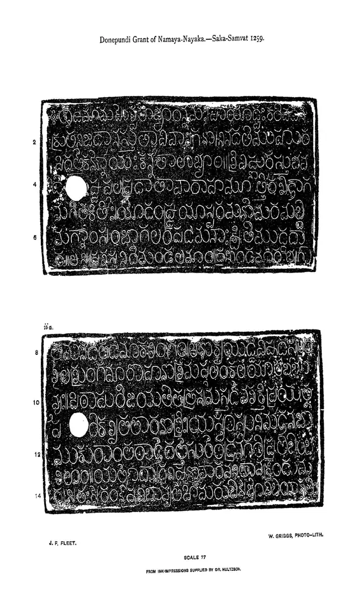

Inscriptions at Ablūr
No. 25.—INSCRIPTIONS AT ABLUR.
Br J. F. FLEET, PH.D., C.I.E.
Ablûr is a village about two miles to the west of Kôđ, the chief town of the Kôđ tâlnka of the Dhârwâr district. Its name occurs in the ancient records in the fuller form of Abbalûr or Abbalûru; and the record E. places it in the Nâgarakhanda seventy, which was a subdivision of the Banavâsi twelve-thousand province (see below). Ink-impressions of seven inscriptions were obtained for me at this village. The most important of the inscriptions is E., the record which gives the history of the revival of Śaivism in the twelfth century A.D. This will be edited in full; so also F., a short record connected with it, and G., which is interesting as being a vîrgal or monumental tablet, belonging to a class of records of which not many specimens have as yet been made fully available. The other records all present points of interest: but they are not important enough to repay the time and trouble that would be required to edit them in full; and it will be sufficient to give abstracts of the contents of them.
A. and B.—Of the time of Vikramâditya VI.— A.D. 1104.
These are duplicate copies, almost word for word the same, but not absolutely so, of a record at a temple of Śiva which is now known as the temple of Basavêsvara, though, as the records themselves shew, it was originally called the temple of Brahmêsvara2 because it was founded by a Gâvunda or village-headman named Bamma or Barma, i.e. Brahma. A. is on a stone tablet outside the temple; and B. is on a stone tablet inside it.
1 The text of the seal is identical with part of the text of the plate.
2 Brahmêsvara-dêvara dêgula, e.g., A. line 62; and Brahmêsvara-dêvatâ-sthâna, e.g., C. line 27.—The founding of it is mentioned in A. lines 27, 28.
In A., the writing, consisting of eighty-five lines of about seventy letters each, covers an area about 4' 1" broad by 6' 5" high: it is in a state of very good preservation as far as line 70: from there it has suffered a good deal of damage; but the illegible portions can almost all be supplied from B. In B., the writing, consisting of ninety-one lines of about sixty-five letters each, covers an area about 4' 1" broad by 6' 10" high: at about one-third from the proper right side, the tablet is broken into two pieces from top to bottom; but no entire letters are destroyed along the line of fissure: in other respects, it is in a state of very good preservation, except for a few places in lines 79 to 91, where, however, the illegible passages can almost all be supplied from A.— In both cases, the sculptures at the top of the stone are, in the centre, a linga, with an officiating priest, inside a shrine; on the proper right side, towards the top, the sun, and, in the lower part, a standing figure inside a shrine, with the bull Nandi near the edge of the stone; and on the proper left side, towards the top, the moon, and, in the lower part, another standing figure inside a shrine, with a cow and calf near the edge of the stone.— The characters are Kanarese, of the regular type of the period to which the record refers itself; and they are well formed and well executed throughout. The size of the letters ranges, in A. from about to , and in B. from about to . The second part of the record, commencing in A. line 72 and B. line 77, was engraved by the Rúvári1 Honnója or Hopnója; and the first part was engraved by the same person in conjunction with the Rúvári Sóvója: the writers or composers of the two parts were different people: but, on each stone, the execution is so uniform throughout that, in each case, the whole record must have been put on the stone at one and the same time, at or soon after the second date, in A.D. 1104, which must, therefore, be considered the proper date of the record.— Except for the opening invocation of Šiva, repeated in A. line 72 f. and B. line 77 f., and for the verse which follows it in the first instance, and for one imprecatory verse in A. line 71 f. and B. line 76, the language is Kanarese; partly in verse, and partly in prose. In addition to rúvári, 'an engraver,' the record gives us another word, khandarisu (A. line 85, B. lines 77, 90), evidently meaning 'to engrave,'2 which is not found in Mr. Kittel's Kannađa-English Dictionary,- and dháli (A. line 6, B. line 7) as a variant of dáli, 'attack, incursion, invasion,' gávunda (e.g., A. line 19) as a variant of 'gauđa, gavuđa,' 'a village-headman (the Maršthi púfil), and bhánasu (A. line 75, B. line 80) as a variant of bánasa, bánasu,' kitchen:' it also gives, in A. line 6, B. line 7, kutkíla, 'a mountaín;' Kittel's Dictionary includes this word; but Monier-Williams' Sauskrit Dictionary seems to give only the form kukíla.
The whole inscription is a record of the time of the Western Chálukya king Vikramáditya VI. It is a Šaiva record. And it registers grants that were made in his twenty-sixth year, in A.D. 1101, and in his twenty-ninth year, in A.D. 1104. On the first occasion, when the Danđanáyaka Góvindarasa was ruling the districts known as the Hánungal five-hundred, the Básavura hundred-and-forty, and the Nágarakhanda seventy, he came in state to Abbalúr, and saw the temple of the god Brahmésvara which Bammagávunda had caused to be built there, and was pleased; and, at the request of Bammagávunda's son Échagávunda, he granted to the temple a village named Muriganahalji3 in the Nágarakhanda seventy. On
1 Rúvári is doubtless a tadbhava corruption of the Sanskrit rúpakárin, 'a maker of images, a sculptor,' as suggested by Dr. Hultzsch, who compares pújári and pújákárin (above, Vol. III. p. 207, note 8). Though Kittel's Dictionary does not include rúvári, it gives rúvu, as well as rúpu, as a tadbhava corruption of rúpa.
2 So, also, C. line 52 gives khandarane, evidently in the sense of 'engraving.'
3 This name is not found now in maps, etc.— The place is mentioned again in a record of later date,— an addition at the end of an inscription of A.D. 1162 at Balagámi (P. S. O.-C. Inscrs. No. 184; and see Mys. Inscrs. p. 98),— which registers a grant of the villages of Karinele and Maruvasi and Muriganahalji and Kundarage (?) in the Nágarakhanda kampana, and Chikka-Kapnuge in the Hánungal kampana, for the añgabhóga of the gods Dakshina-Kédárésvara (of Balagámi), Sómanátha, and Brahmésvara of Abbalúr.— Chikka-Kapnuge is evidently the modern 'Chikkangi' in the Hángal táluka.
the second occasion, grants were made by some of the villagers to provide for the adi,ati'ga and the perpetual lamp of the same temple.
The record contains two dates. The details of the first date,— when the grant was made by the Danđanáyaka Gövindarasa,— are Sunday, the new-moon day, when there was an end of the sun, of the month Vaisákkha of the Vishu (properly called Vpisha) sahvatsara, which was the twenty-sixth year of the reign of Vikramáditya VI. This date was not recorded directly. The given sahvatsara was Šaka-Samvat 1024 current. There was, indeed, an annakar end of the sun, which was probably visible in Southern India, on the specified new-moon day. But the tithi ended, by Sewell and Dikshit's Tables, at about 2 hrs. 12 min. after mean sunrise (for Ujjain) on Tuesday, 30th April, A.D. 1101; and it cannot be connected with the Sunday at all, as it began at about 30 min. after mean sunrise on the Monday. The details of the second date,— when the grants were made by the villagers; shortly after which time, presumably, the whole record was put on the stone,— are, Sunday, coupled with the sixth tithi of the bright fortnight of the month Bhádrapada of the Táraṇa sahvatsara, which was the twenty-ninth year of the same reign. The given sahvatsara was Šaka-Samvat 1-27 entert. And the corresponding English date is Sunday, 28th August, A.D. 1104; on which day the given tithi ended at about 18 hrs. 42 min.
* * * *
Lines 8 to 17 of this record mention a Danđanáyaka Gövindarája, who is described as “ruling,” but without any hint as to the sphere or nature of his powers. Lines 59 to 62 mention a Mahásámantádhipati and Danđanáyaka Gövindarasa, who in A. D. 1101 was “ruling” the Hánunggal, Básavura, and Nágarakkhapđa districts. And a third passage,— A. lines 75-76, B. line 80.— mentions a Danđanáyaka Gövindarasa, who in A. D. 1104 was administering the Banavási province and the vađđarávúba-duty at the command of Anantapála, a high minister of the Western Chálukya king Vikramáditya VI., who is mentioned in many of the records of this period.
The Gövindarája of the first passage was the son of a certain Kpishnurája, whose pedigree is not disclosed, and of Padmaladéví, an elder sister of Anantapála. And he seems to be identical with the Gövindarasa of the second passage. This is inferred, partly from the fact that it would have been unnecessary to mention him with such prominence in the first passage, and especially as “ruling,” unless more details were to be given about him further on, and partly from the description of the Gövindarasa of the second passage as míraṇajandha-váraṇa, which is taken to mean “the choice elephant of his maternal uncle,”— with reference to Anantapála, who stood in that relationship towards the Gövindarája of the first passage.2 It
1 See Von Oppolzer's Canon der Finsternisse, p. 220, No. 5484, and Plate 110.
2 Máva means 'a mother's brother,' and also 'a wife's father.' This record does not mention anyone, with reference to whom it could be taken in the latter sense in the case of the Gövindarája of the first passage. And on the other hand, it does not seem at all probable that Raparaṅgabhairava-Gövindarasa (regarding whom, we further on) was either a nephew or a son-in-law of Anantapála; no such hint is given in any of the passages mentioning him, though they describe him very fully.— Moreover, the full description of the Gövindaras of the second passage in this record (line 59 ff.) runs— Samudhigatapañohamahásábdamahásámantádhipati-maháprakhaéduda-dnáyakan=ásthána-vastu-náyakam nija-kulá-kuvañaya-sudhákaram guṇa-ratnákaram sukara-sukari-, ika-u.kara-mđkamdaím kíriti-latđ-kamđaím samara-samaya-Shaymukhaím chatura-Chaturmmukhaím duhñta-dur, preith-óhđha(děha)t-đrđti-mada-niváraṇaím mđvana-gamđkaráraṇaím nđm-áli-samasta-prásasti-sahītam sírimud-damđanáyaka-Gövindarasaru. The biruda Raparaṅgabhairava does not occur here. And I do not find any of these epithets applied to Raparaṅgabhairava-Gövindarasa, or anything bearing on them in the various descriptions of him, with the exception that in line 39 of the record of A.D. 1114 he is described as samara-mukha-Shaymukha, which may be compared with the samara-samaya-Shaymukha of the present passage; but this is not conclusive, and the ásthána-vastu-náyaka of the present passage occurs elsewhere (see page 217 below, note 8) in the case of Anantapála, and not of Raparaṅgabhairava-Gövindarasa.
may be remarked, in passing, that the allotment to the Gövindarasa of the second passage of so high a rank as that of Mahásámantádhipati, is undoubtedly incorrect, whoever he may have been; just as much as in line 4 the record makes a mistake in describing Anantapála as merely a Mahásámanta, instead of a Mahásámantádhipati.
The Gövindarasa of the third passage, however,—though the special biruda does not occur in it,1—being described as having a much more extensive authority, is most probably another person, to be distinguished by the full name of Raṇaraṅgabhairava-Gövindarasa, who was apparently a paternal uncle of the Gövindarája of the first passage, and regarding whom we learn the following facts from records at Balagámi and Tâlgund.2 He belonged to the Parášara götra, and was the son of Dásirája, son of Kéširája and Nílabbe, and of Sóvala-děvi or Sômâmbike (e.g., the records of A. D. 1102, line 24f., and A.D. 1114, line 37f.). The record of A.D. 1102 styles him (line 44) Krishnaráj-ánuja, “the younger brother of Krishṇarája,”—with reference, doubtless, to the Krishṇarája of the Ablúr inscription; and the record of A.D. 1112 styles him (line 37) anṇan=anikaldṛa, “the champion of his elder brother,” and Krishnarájan=anugina-tamma, “the affectionate (or beloved) younger brother of Krishṇarája.” The record of A.D. 1114 further describes him as Lát-ánvaya-laláṭa-maṇdala-tilaka, which expression, taking laláṭamaṇdala as meaning much the same thing as laláṭapatṭta, we may render by “a forehead-mark of the broad forehead that was the lineage of the Láṭas:” so, also, the record of A.D. 1102 describes Anantapála (in line 8) as Láta-kula-kumudavana-vidhu-kara, “a very ray of the moon to (open) the cluster of water-lilies (flowering at night) that was the family of the Láṭas:” evidently, both the persons traced their origin to ancestors who were natives of the Láṭa country; and this, no doubt, accounts in part for the intermarriage and the special favour hewn by Anantapála to Raṇaraṅgabhairava-Gövindarasa. His biruda of Raṇaraṅgabhairava, “a very Bhairava (Šiva) in the field of battle,” figures more or less prominently in all the records. And the record of A.D. 1114 styles him (line 40) Triñhuvanamalladéva-vijaya-dakehiṇa-bhuja-daṇda, “the staff of the victorious right arm of Tribhuvanamalladéva-(Vikramâditya VI.).” In A.D. 1102, the Daṇdanáyaka Anantapála, the Mahásámantádhipati who had attained the pañchamaháśabda,3 was “protecting, with the delight
| Of A.D. 1102; | P. S. O.-C. Insors. No. 168; | Mys. Insors. p. 78. |
| Of A.D. 1103; | . . . | No. 171; . . p. 139. |
| Of A.D. 1107; | . . . | No. 218; . . p. 199. |
| Of A.D. 1112; | . . . | No. 172; . . p. 82. |
| Of A.D. 1114; | . . . | No. 175; . . p. 175. |
1 No string of titles and epithets is connected with the name of Gövindarasa in this passage. After giving the titles of Anantapála, the record simply says [Anantapá] larasara besadśín śrimad-daṇdaṇṛakarān Gövind-ara saru Banaváse-(etc., as in a note further below).
2 The records are:—
3 The term pañchamaháśabda, meaning literally “five great sounds,” denotes the sounds of five musical instruments, the use of which was allowed, as a special mark of distinction, to persons of high rank and authority. The epithet samadhigatapañchamaháśabda is found most commonly in connection with the names of great fendatories and high officials; the instances in which it occurs among the epithets of paramount sovereigns, are but few. I have given a general note on the term in my Gupta Inscriptions, p. 296; in the course of which I have quoted a paper in Ind. Ant. Vol. XII. p. 95 f. which tells us that the Lingáyat Vivśkachintámayi enumerates the five instruments as being the śriṣga or horn, the tammaṭa or tambour, the taúkha or conch-shell, the bhéri or kettle-drum, and the jayagharṭda or gong. And an inscription of A.D. 1032 at Suttūru in Mysore (Ep. Ca.n. Vol. III., Nj. 16;) I quote, however, from an ink-impression) enumerates them as the tiva[īt], daṭḍa, kḥaṇṇike, jayagaṇṭe, and káfe, and provides an allotment to the god Íśau-Ísvaram-uđeyar for playing (these musical instruments, and performing the worship of the god, three times a day.—For the káfe, which is the same as the śriṣga, see a note further below. The word daṭḍa may perhaps stand for daṭḍasa, which is explained in Kittel's Dictionary as 'the drum of a Pomba.' The tivalí and kḥaṇṭike remain to be identified. The former of them was the special musical instrument of the Ráshṭrakúṭa kings of Málkhéd and of the Raṭṭa chieftains of Saundatti.—For the special instruments of some other great families, reference may be made to my Dyn. Kan. Distr. p. 327, and note 7.—The custom of kings being heralded in public by musical instruments is mentioned by the Chinese pilgrim Hiuen Tsiang, in connection with Śíláditya-Harahavardhana of Kanauj; he tells us (Life, Beal's translation,
of an agreeable or friendly interchange of communications (with his paramount sorerragn),1 the two-six-hundred (i.e. the Beľvola three-hundred and the Purigeže three-hundred), the Banavase twelve-thousand, and the vađđarđvuļa and perjuňka duties; and his subordinate,2 the Danđanđyaka Raņaraņgabhairava-Gövindarasa, holding office by the favour of Anantapála,3 was “protecting, with the delight of an agreeable or friendly interchange of communications (with Anantapála;” the vađđarđvuļa of the melvaťte,4 the erađum-bilkođe, and the perjuňka. In A.D. 1103, Anantapála, with the same two titles and also those of Mahúpradhána and Bhánasumanvergađe, was “protecting, etc.,” the Beľvola three-hundred, the Purigeže three-hundred, the Banavase twelve-thousand, and the pannáya-duty of the saptárđhalakshe or seven-and-a-half-lákh country;5 and the Danđanđyaka Raņaraņgabhairava-Gövindarája, who had obtained the administration of the Vanavási twelve-thousand through his favour,6 was “protecting, etc.,” the Banavase twelve-thousand, the vađđarđvuļa, and the achehpannáya of . . . . .
,7 and had, under himself, a Sahđhivigrahđhukrita or minister for peace and war named Íšvarayyanáyaka. In A.D. 1107, the Mahúpradhána, Bhánasumanvergađe, and Danđanđyaka Anantapála8 was “happily governing”9 the two-six-hundred (i.e. the Beľvola and Purigeže districts) and the Banavási twelve-thousand; and his subordinate, the Danđanđyaka Raņaraņgabhairava-Gövindarája, who had attained good forune by his favour,10 was “protecting, etc.,” the Banavási twelve-thousand, the vađđarđvuļa, the perjuňka, and the erađum-bilkođe;11 and this record mentions, as a subordinate of him,
p. 173) that, “as Šládityarája inarched, he was always accompanied by several hundred persons with golden drums, who beat one stroke for every step taken; they called these the ‘music-pace-drums:’ Šláditya alone used this method,—other kings were not permitted to adopt it.”
Sukhadin=djuttam-iral.
1 Sukha-saňkathá-vinđodađiň pratipálisuttam-ire; see Dyn. Kan. Distr. p. 428, note 4.
2 Tat-pđdapadm-ópajtvi.
3 Anantapála-prasád-dádíit-ádhikára-lakshmt-vilísa.
4 The meaning seems to be that he was administering the collection and expenditure of that portion of the vađđarđvuļa which was levied on, or was allotted to, an object called the melvaťte or mělvaťte. The genitive melvaťteya may qualify also the erađum-bilkođe and the perjuňka. Kittel's Dictionary gives mělvaťta, ‘an awning’ (in which vaťta is for paťta; and paťte occurs as another form of paťta), and mělu-boťte (which might easily occur in the form of also mělvaťte), ‘superior, fine cloth.’ But the vaťte may equally well stand for baťte, ‘a road;’ and mělvaťte may indicate the levy of the duty, or the three duties, on the principal high-roads: compare mělu-durga, ‘a high, superior fort;’ and mělu-paňkti, ‘the best or principal row.’
5 I.e. of the whole of the Western Chálukya dominions; see Dyn. Kan. Distr. p. 341, note 2.
6 Tat-prasád-dádíta-Vanavást-dvddašasahas-ádhikára-lakshmt-vibđši.
7 The rendering in Mys. Inscrs. p. 140, and note, would read chhatra-chohđyeya chappannad=acheupannđyacmaň, and would translate “the pannáya-dues of the fifty-six (i.e. merchants) within the shadow of his umbrella (i.e. within his jurisdiction).” The word chhatra-chohđyeya is quite distinct, and seems to qualify the achehpannáya here in the way in which melvaťteya qualifies the vađđarđvuļa in another passage (see note 4 above). The next akshara is not legible with any certainty in the photograph; and there may be an akshara between the ppa and the nna. If the reading really is chappanad, or more likely chhappanad, it does not at any rate mean “fifty-six merchants:” there might, in that case, be possibly a reference to the chappanna- or chhappanna-déla, “the fifty-six countries,”—in the sense of “all the world,” or rather “all the territory entrusted to him;” this also, however, does not seem satisfactory. I cannot at present find any other passage, helping to elucidate this one.—The acchopannáya variety of the pannáya is mentioned again in a record of A.D. 1108, at Dávangere (P. S. and O.-C. Inscrs. No. 187; Mys. Inscrs. p. 17), in line 15, where the rendering in Mys. Inscrs. wrongly finds the title “lord over Achecupa Nđyaka.” That record tells us that the Acchopannđyadadhishíhđyaku or “superintendent of the acchopannáya” Barmarasa,—who had been appointed to the office of Mahđmátya, entrusted with all the duties of government, by the command of the Mahđsđmantádhipati, Mahúpradhána, Bhánasumvergađe, and Danđanđyaka Anantapála,—was then “governing, with punishment of the wicked and protection of the good,” the pannáya of the Noļambaráđi thirty-two-thousand.
8 Among his epithets here, there occurs the phrase ásthána-vastu-nđyaka, meaning something like “director of all arrangements for public darbđrs,” which is included among the epithets of the Gövindarasa of the second passage in the Ablúr inscription (see page 215 above, note 2).
10 Anantapála-prasáda-samás4dita-prépta-lakshmi-niļaya.
11 The original seems to have here bilkáđe, with the vowel o in the second syllable. But, from the other records, the vowel o appears to give the correct form of the word.
a certain Trivalíbhattá, of the Vatsa gótra,—described as the mayduna, i.e. sister's husband, or wife's brother, of the Dandanáyaka Gövindarasa,—who was holding office as Pergađe1 of the mahívađđa-village of Tánagundúr (Tálgund). The record of A.D. 1112 introduces a new official superior of Raṇaraṅgabhairava-Gövindarája: it tells us that, under Vikramáditya VI., the Pánđya Mahámanđalésvara Tribhuvanamalla-Kámarasa, "the lord of Gókarṇa the best of towns,"—who belonged to the line of the Pánđya rulers of Sisugali, the capital of the Haive division of the Końkap,—was "ruling with the delight of an agreeable or friendly interchange of communications (with his paramount sovereign);" that Anantapála gave him the Vanavási country;2 that, on receipt of it, he made appointments; and that, by appointment from him, Raṇaraṅgabhairava-Gövinda, mentioned further on in the record as the Danđáldhísvara Gövinda, was "protecting" the Banavase country.3 The record of A.D. 1114 does not make any reference to the Pánđya prince: it speaks of Anantapála a feudatory of Vikramáditya VI., but, evidently with reference to past events only, as, to the record of A.D. 1112, it does not couple any titles with his name; it speaks of the Danđáldhipa Gövinda as a rájahainsa or flamingo dwelling on the water-lilies that were his feet; and it describes him more fully as the Mahásámantádhipati who had attained the pañchamahásabda,4 he who was a very Raṇaraṅgabhairava, the Mahápradhána, the Manevergađe, the Danđanáyaka Gövindamayya, who was "governing" the Banavase twelve-thousand, the Sántalige thousand, the two-six-hundred (i.e. the Belvola and Purigere districts), and the vađdarávula and pannáya duties. By this time, then, Raṇaraṅgabhairava-Gövindarasa had been promoted to most of the high offices that had been held by his patron Anantapála.5
* * * *
When the Danđanáyaka Gövindarasa made his grant in A.D. 1101, as mentioned in line 59 ff. of the record, he laved the feet of a Sãiva teacher or priest named Sômésvara, who is introduced to us in a passage, commencing in line 51, which runs thus:—
Śrímad-Abbalúr-Écha-gávumđana gurnga! śrí-Sômésvara-pamđita-dévar-ajja-gurugala tapah-prabhávam-emt-emdođe|| Dhareg6-eseva Sa(sã)kti-parshege karam-agraniy-enipa Parvvat-ávaliyolu Múvara-kôneya-samťatig-ábharapań Kědárašakti-yatipati negalđań|| A Kědára-yatíndrana7 lôka-prastuna8 śishyan-atyamala-gun-âníkań nirmmala9-charitań
V. l. muníndrana.
1 The original has perggatana, which must be a mistake (unless it is found to be an authorised abbreviation) for perggadetana.
2 Anantapála seems, from this, to have been retiring from office about that time.
3 The original runs—Raṇaraṅgabhairavań * * * * pálisultam-ire Banavaseynń Malapara jáju sudhá-nirmmalu-parama-yašah-prabháva-nidhi Gövindań. The rendering in Mys. Insers. p. 85, and note, would find;—instead of sudhá, 'neclar, ambrosia,' with which the fame of Gövinda is compared,—the Maráthi word sudđháń, 'together with, along with, besides,' in its modern Kanarese corrupt form sudđ, and would translate "was protecting Banavase and the Malapara jáju (?) also." The word jáju, 'gambling,' seems to be used here, to suit the convenience of the composar of the verse, instead of jájugđra, 'a gambler.' The idea evidently is, that Gövinda cut off the heads of the Malapas and used them as dice. And a Kanarese ballad somewhat similarly describes a Governor of Bombay as proposing to cut off the heads of Holkar and Scindia and play the game of juggling balls with them before the Pěshwa Bájirao.
4 It is in this passage that liaṇaraṅgubhairava-Gövindaiája is described as samara-mukha-Shaṇmukha (see page 215 above, note 2).
5 We have a later date for Raṇaraṅgabhairava-Gövindarasa in A.D. 1117-18, quoted by me (Dyn. Kan. Distr. p. 451) from a record which is not accessible to me at present.
6 Metre, Kanda; and in the next two verses.—The first verse occurs in line 19 f. of an earlier record, of A.D. 1094, at Balagámi (see page 220 below, note 3), with, in essential points, only the difference of munipati for yatipati. The whole passage from the words Dhareg-eseva to Natyáyik-ágrtsarań, occurs in lines 31 to 38 of the Balagámi inscription of A.D. 1102 (see the same note); and it is from that record that I take the various readings given in the footnotes.
8 Eend prastutane.
9 V. l. yašah-patákań.
Šrikantham vibudha-chūtavana-kalakantham || Hara1-pâdânibhôjadou chittaman=eseva mukhânibhôjadojau2 Bhâratî-sautadaramam3 châritradou nirmmalateyan=ukhil-âmîs4-âmtadou Śakra-dik-kumjara-bhâsvat-kîrttiyam bâppure6 nilisidan=udyad-gup-augham munimdr-âbharapam Šrikantha-dêvam budha-jana6-tilakam tarkka-vidyâ-samudram || Â mahânubhâvana śishyane doreyan=emdođe7 || Kelabar8=ttarkka-viśâradar=kkelabar=âpt-âlâpa-sambôdhakar=kkelabar=nnâtaka-kôvidar=kkelabar=ol-gabbaingalam ballavar=k kelabar=byâ(vyâ)karana-jūar=imt-initumam ball9-amnar=ill=ellamam sale Šômêšvara-sûri ballan=anagham Naiyyâ(yâ)yik-âgrêšva(sa)ram || Akalamk-âmbrakujâta10-Chaitra-samayam Lôkâyat-âmbhôdhi-śitakaram sâmkhya-diśâ11-diśâradani mînâins-âinganâ-kainbu-kaintha-kanan-mauktika-bhûshapam Sugata-nirêjâta-chamdâinsu târkkika-Šômêšvara-sûri pempu-vađedam Naiyyâyik-âgrêšva(sa)ram ||12— namely, “To describe the efficacy of the penances of the grandfather-preceptor of the holy Šômêšvarapaṇditadêva who was the preceptor of Échagâvuṇda of the famous Abbalûr:— In the line named Parvatâvaļi, which was esteemed to be greatly (i.e. undoubtedly) the leading (division) of the sect, celebrated in the world, named Šaktiparshe, there became famous the eminent ascetic Kêdârašakti, an ornament to the succession named Mûvarakôneyasaintati.13 Of that great ascetic Kêdâra, the disciple, praised indeed throughout the world, was Šrikantha, abounding in extremely pure virtues, of spotless behaviour, a very cuckoo (or ring-dove) in the grove of mango-trees that are learned men. Amidst great applause, Šrikanthadêva, abounding in great virtue, an ornament of great saints, a forehead-ornament of learned people, a very ocean of the science of logic, firmly fixed his thoughts on the water-lilies that are the feet of the god Hara (Šiva), and made the beauty of the goddess of eloquence alide in the charming water-lily that was his mouth, and maintained purity in all his behaviour, and established to the ends of all the points of the compass a brilliant fame like that of (Airâvata) the elephant of (the east which is) the quarter of Indra. To give an idea of the disciple of that great man:— Some people are learned in logic, and some can impart the knowledge of well-chosen speech; some are acquainted with the dramas, and some are conversant with good poetry, and some know grammar: there are none (others) who know all of these; but the learned Šômêšvara-pindeed, the sinless one, the leader of the Naiyyâyikas, knows them all. A very season of Chaitra (i.e. a very month of spring) to (develop the fruit of) the mango-tree that is Akalanka,14— a very cool-rayed moon
1 Metre, Mahâsragdharâ.
2 Read mukhânibhôjadou.
3 V. l., sundariyam.
4 Read âś.
5 V. l., chittarade nilisidam sad-gun-dâya(dhya)m.
6 V. l., kuļa.
7 B., line 61, has the same; except that it gives śiýane. The record of A.D. 1102 has, similarly, śishyane doreyan=endađe. Read śishyana dorey=ent-emdođe, or cat-endađe.
8 Metre, Mattêbhavikrîdita; and in the next verse. In the record of A.D. 1102 these two verses are transposed; this one comes after the other.
9 V. l., bâpp-intu višvainbharâ-taļadol ballavar=îr=enalke negolđam vidy-âbdhi Šômêšvaram.
10 V. l., âmbramahtja. Read, in either case, âmra, for âmbra.
11 V. l., dhard.
12 In the Ablûr record there follows one more verse about Šômêšvara: but it does not present anything of interest; and it is not included in the Baļagâmi record of A.D. 1102.
13 I have not found anything yet to explain the meaning of this name. Mivara must be the genitive of milvaru, 'three persons;' unless it can be connected with mâ, = mudu, 'advanced age.' For kône, of which kôneya is the genitive, the dictionary only gives the meanings of 'a pitcher; an inner apartment or chamber, a room.'
14 It seems impossible to avoid taking the word akalanka as a proper name; to render it by simply “stainless people,” seems to give a very inadequate meaning to the text. At the same time, we do not yet know of any Šaiva writer named Akalanka; and Šômêšvara can hardly have given encouragement to the writings of the Jain Akalanka, even in the department of tarka or logic with which the name of that Akalanka is sometimes specially connected (e.g. in line 45 of a Jain record of A.D. 1077 at Baļagâmi, P. S. O.-C Inscrs. No. 163, Mys. Inscrs. p. 129).—The next three epithets, also, are puzzling. From line 65 of the Ablûr inscription, we learn that Šômêšvara was a follower of Lukuljiša; and (see page 227 below) Lukuljiša was an opponent of the Lôkâyatas, Mîmâinsakas, and Sânkhyas.—There are, perhaps, some hidden second meanings, which I have failed to see. Kujdta, for instance, may mean 'base-born,' as well as 'tree;' but the alternative reading mahtja is opposed to that.
to (bring to full tide) the ocean that is the Lôkâyatas,— a very guardian elephant of that quarter of the regions which is the Sâmkhya-doctrine,— a very pearl-ornament glittering on the white throat of the woman who is the Mîmânsâ,— a very hot-rayed sun to (close) the water-lilies (blooming at night) that are the Buddhists,— the logician, the learned Sômêsvara, the leader of the Naiyâyikas, attained greatness.” And a further passage, in lines 63 to 66, describes him, in rhyming epithets, as— Yama-niyama-svâdhyâya-dhyâna-dhâraṇa-maunânushthâna-japa-samâdhi-sîla-sampamina vibudha-jana-prasamina nyâya-sâstra-vistri(stri)ta-sarôjavana-divâkara Vaisêshika-vârddhi-varddhana-sa(sa)rat-sudhâkara sâmkhyâgama-pravîna-mâniky-âbharaṇa guru-charaṇa-sarasiruha-shatcharaṇa sâbda-sâstra-sahakâravana-vasainta prajñ-ôday-ôdbuddha-Lâkula-siddhânta nirupam-ôpanyâsa-dêvanadî-pravâha nija-datta-mamtra-prasâda-samvarddhita-śishya-saindôha sâhitya-vidyâ-mahâ-nadî-pravâha-nimnagâdhisvara bhakti-pravâha-paritushta-Paramêsvara niravadya-nirmmala-tapô-gun-aika-nilaya kîrtti-kaumudî-mudita-mêdinî-valaya nâm-âdi-samasta-praśasti-sahita,— namely, “he who is possessed of the glory of such names as he who is endowed with self-control, the observance of restraint, the repetition of the scriptures to himself, meditation, immovable abstraction of the mind, the observance of silence, the muttering of prayers, deep contemplation, and good character, and who is gracious to learned men; he who is a very sun to (open) the great cluster of water-lilies (blooming in the daytime) that is the Nydyasâstra, and who is a very autumn-moon to bring to full tide the ocean of the Vaisêshikas; he who is a very ruby-ornament of those who are versed in the Sâmkhyâgama, and who is a very bee on the water-lilies that are the feet of his teacher; he who is a very spring to the grove of mango-trees that is the Šabdatâstra, and who has given new life to1 the Lâkulasiddhânta2 by the development of his wisdom; he who is a very stream of the river of the gods in unequalled reasoning, and who has made the assembly of his disciplines to prosper by the favour of the counsel given by him; he who is a very ocean to (receive) the stream of the great river that is the Sâhityavidyâ, and who has quite satisfied the god Paramêsvara (Śiva) with the unbroken flow of his devotion; he who is the sole abode of the virtue of blameless and spotless penance, and who has delighted the whole circuit of the earth with the moonlight that is his fame.”
We gather a good deal of information about the Mûvarakôneyasaintati from various records at Bałagâmi.3 And, in the first place, we find that it was connected with the sect of the Kâlâmukhas, which is already fairly well known. We learn this from the record of A.D. 1112, which says (line 49)— Parvvat-âmnâyada Mûvara-kôneya-santânada Śakti-parisheyo!-negaîte-yadedu śishya-châtaka-varshâkâla-mukhar-enisida Kâlamukharo!,— “among
| Of A.D. 1094; | P. S. O. C. Inscrs. No. 165; | Mys. Inscrs. p. 73. |
| Of A.D. 1102; | . . . | No. 168; . . p. 78. |
| Of A.D. 1112; | . . . | No. 172; . . p. 82. |
| Of A.D. 1129; | . . . | No. 178; . . p. 87. |
| Of A.D. 1139; | . . . | No. 179; . . p. 184. |
| Of A.D. 1149; | . . . | No. 180; . . p. 97. |
| Of A.D. 1155-56; | . . . | No. 181; . . p. 100. |
| Of A.D. 1162; | . . . | No. 184; . . p. 92. |
| Of A.D. 1168; | . . . | No. 185; . . p. 109. |
| Of A.D. 1192; | . . . | No. 200; . . p. 103. |
| Of A.D. 1215 | . . . | No. 201; . . p. 72. |
1 Lit. “has awakened.”
2 Regarding Lakula, the founder of the tenets that were classed under the general head of Lâkulasiddhânta, see page 226 ff. below. Several references to him and his writings will be quoted from the Bałagâmi records. And mention is made of the Lâkuldgama in line 21 of the Bijâpur inscription of A.D. 1074 (Ind. Ant. Vol. X. p. 123).
3 The principal ones,— of which the first was edited by me, Ind. Ant. Vol. V. p. 342, at a time when the purport of the verse Dhareg-eseva, etc., could not be guessed, and the others all deserve, for various reasons, to be properly dealt with in full,— are :—
the Kálamukhas,1 who, having attained fame in the Śaktiparishe of the Múvarakóneyasamátna of the Parvatámnáya, had caused themselves to be spoken of as the very burst of the rainy season for the chátaka-birds that are disciples,"—and then goes on to place among these "Kálamukhas" Kédárašakti, his son Śríkanṭha, and Śríkanṭha's son Sōméśvara. This passage would, indeed, seem to identify the Kálámukhas with the Múvarakóneyasamátati. But this appears not quite consistent with the fact that the college (sthána) of the Kálámukhas of the ancient Balligáve was the temple of Pañchalinga,2 whereas the college of the Múvarakóneyasamátati was a different building. And it seems probable that what the passage really means, is, that the founder of the Múvarakóneyasamátati was a member of the Kálámukha sect who established some particular school, the tenets of which differed in some respects from the general doctrine of the Kálámukhas. The verse Dhareg-eseva, etc., seems to name, as the order of development, first the Śaktiparshe,3 then the Parvatávali, and then the Múvarakóneyasamátati. On the other hand, the prose passage, just quoted, indicates first the Parvatávali, then the Múvarakóneyasamátati, and then the Śaktiparshe. The verse used in the record of A.D. 1129 (see page 223 below), and in some subsequent records, does not mention the Śaktiparshe, and indicates first the Parvatávali and then the Múvarakóneyasamátati. And the record of A.D. 1192 mentions only the Parvatávali.
The members of the Múvarakóneyasamátati were the hereditary priests of the temple of the god Šiva in the form of Dakshiṇa-Kédárésvara, "the Kédárésvara of the South,"4 which, as we learn from line 57 of the record of A.D. 1112, was on the éri or raised bank of a tank called Távaregere and Távareyakere, "the tank of water-lilies," which was in the southern part of the lands of Balligáve. They had also the temple of Šiva in the form of Nagarésvara or Nakharésvara,5 which, again,—as we are told in line 26 of the record of A.D. 1094,—was at the Távaregere tank. And, from A.D. 1139 onwards (see page 224 f. below), they had also a temple of Šiva in the form of Kusuvésvara, which was then built in connection with the temple of Dakshiṇa-Kédárésvara. Their maṭha or college is sometimes spoken of as the Kédáramaṭha and the Kédárasthána. But its actual name was, in Kanarese, Kódiya-maṭha, which appears in a Śanskrít passage as Kótimaṭha.6 From line 60 f. of a record of
1 In every other passage known to me, this name is spelt with the long d in the second syllable. The short a is used here probably only in connection with the play on the meaning of the components, or supposed components, of the name. The word kálamukha appears to denote 'a kind of monkey,' and also to be another name of the káldguri or black aguru-tree.
2 See page 227 below, and note 1.
3 It may be mentioned, incidentally, that another record at Bałagámi, of A.D. 1098 (see page 223 below, note 2), discloses, in line 34, the name of another parishad at the ancient Balligáve, viz. the Šáleyaparshe.
4 Dakshiṇa-Kédárésvara was an image established at Balligáve as the southern representative of Šiva as worahipped at Kédárnáth in the north, a famous temple and place of pilgrimage in the Garhwál district, North-West Provinces, situated, according to Thornton's Gazetteer, in lat. 80° 44', long. 79° 5', in the Himálayas, and standing 11,755 feet above the level of the sea.—From the titlings of the transcriptions, in Sir Walter Elliot's Carnátaka-Désa Inscriptions, of some of the records mentioned in note 3 on page 220 above, it appears that the temple of Dakshiṇa-Kédárésvara is now known as the temple of Basavaṇṇa.
5 The name appears as Nakharésvara in the record of A.D. 1094. Elsewhere, it is usually written Nagarésvara, which, no doubt, was the real correct form. Its name is explained in a passage in line 46 ff. of the record of A.D. 1129, which runs,—Balligdveyol=dakshiṇa-dik-taṭa-nikaṭavartii manđita-puṇdartka-skand-bṇdatam=uñf=alli nagara-janaṅgal=dṛjjiśid=aganya-punya-puñjame Šiva-bhovamav=dd-ante Nagarésvaram=enisi pesar-vađedu sogayisuttam-irpudu,—"at Balligáve, close to the southern boundary, there is an ornamental garden [wpánta seems to be used here for upavama] full of water-lilles; and there there stands, in all its beauty, the temple named Nagarésvara, the veritable abode of Šiva, (an embodiment) indeed (of) all the incalculable religious merit amassed by the people of the town."
6 This, which seems to be only a Śanskrítised form, is taken from line 19 of the record of A.D. 1215. In the photographs of some of the records, the vowel of the first syllable might be taken to be d, instead of d. But the name appears very distinctly,—Kódiyamaṭha,—in line 61 of the record of A.D. 1158 (see page 222 below, note 1).
A D. 1158,1 which speaks of “Vāmaśaktipaṇcitadēva, the Āchārya of the Kōdiyamaṭha of the Hergaḍe Veṇpamarasa of that place (Balligāve),” it seems to have been built for the members of the line by the said Veṇpamarasa. And it would appear that it was named the Kōdiyamaṭha because, probably, it stood somewhere near the kōḍi or outlet of the Tāvaregere tank. That the Kōdiyamaṭha was the maṭha of the Mūvarakōneyasaintati, we learn explicitly from the record of A.D. 1162, which mentions, as belonging to “the succession of the family of the Gurus of the Kōdiyamaṭha,” two persons, Gautama and the Vāmaśakti mentioned above, who, as will be seen, were discipline-descendants of Kēdāraśakti. And the same record further gives (line 27 ff.) the following rather singular description of the maṭha,—Dakshipa-Kēdārasthānamum Śiva-linga-pūjā-pulaka-sasya-sarasa-kēdārasthānamum naishthika-brahmacharyya-Śiva-munijan-ānushṭthāna nishṭhita-sthānamum sānga-Rig-Yajus-Sām-Ātharvva-chaturvvēda-svādhyāya-sthānamum Kaumāra-Pāniyā-Śākaṭāyana-Śabdānusāsan-ādi-by ā(vyā)karaṇa-byā(vyā)khyāna-sthānamum nyāya-vaisēshika-mīmāinsā-sāmkhya-baudhdh(ddh)-ādi-shaḍu-darsana-byā(vyā)khyāna-sthānamum Lākulasidhdhā(ddhā)mta-Pātamjal-ādi-yōgas āstra-byā(vyā)khāna-sthānamum ashtādaśapurāṇa-dharmmaśśstra-sakala-kābya (vya)-nāṭaka-nātik-ādi-vividha-vidyā-sthānamum dīn-ānātha-paingv-amidha-badhira-kathaka-gāyaka-vādaka-vāmśika-narttaka-vaitālika-nagna-bhagna-kshapayak-aikadamḍi-tridadamīdi-hainsa-paramahains-ādi-nānā-dēśa-bhikshukajan-ānivāryy-[ā*]innadāna-sthānamum nān-ānātha-rōgijana-rōdha-bhaishajya-sthānamum sakala-bhūt-ābhaya-pradāna-sthānamum=āgi Kōdiyamaṭhav-irppudu,—namely, “there is the Kōdiyamaṭha, which has become the abode of the god Kēdāra of the South,—a very field charming with a crop which is the standing erect of the hairs of the body that is induced by doing worship to the linga of Śiva,—a place devoted to the observances of Śaiva saints2 leading perpetually the life of celibate religious students,—a place for the quiet study of the four Vēdas, the Rich. Yajus, Sāman, and Atharvan, together with their auxiliary works,—a place where commentaries are composed on the Kaumāra, Pāniyā, Śākaṭāyana, Śabdānusāsana, and other granmatical works,—a place where commentaries are composed on the six systems of philosophy, namely the Nyāya, Vaisēshika, Mimāinsā, Sāmkhya, Bauddha, etc.3—a place where commentaries are composed on the Lākulasiddhānta, and the Pātaājala and other Yōgaśstras,—a place for (studying) the eighteen Purāṇas, the law-books, and all the poetical compositions, the dramas, the light comedies, and the other various kinds of learning,—a place where food is always given to the poor, the helpless, the lame, the blind, and the deaf, and to professional story-tellers, singers, musicians, bards, players, and minstrels whose duty it is to awaken their masters with music and songs, and to the naked and the crippled, and to (Jain and Buddhist) mendicants, to (Brṣlamaṇ) mendicants who carry a single staff and also those who carry a triple staff, to hainsa and paramahainsa ascetics, and to all other beggars from many countries,—a place where many helpless sick people are harboured and treated,—a place of assurance of safety for all living creatures.”
The founder of the Mūvarakōneyasaintati appears to have been Kēdāraśakti; at any rate, we have obtained no earlier name at present. For him, we have as yet no date.
The son and chief discipline of Kēdāraśakti, and evidently his successor as head of the maṭha, was Śrīkaṇṭha. The record of A.D. 1094 names him as his chief discipline (line 21); and the record of A.D. 1112 names him as his son (line 50). In the record of A.D. 1094, after the verse Dhureg=eseva, etc., there is used (line 21 f.), to describe Śrīkaṇṭha, a verse which we can now render more correctly, as follows,—Ā4 munipan=agra-śishyar śrīmat Śrīkaṇṭha-
1 P. S. O.-O. Inscrs. No. 183; Mys. Inscrs. p. 152.
2 The Śiva-munijana of the text seems to stand for Śaiva-munijana.
3 The usual enumeration of the six systems seems to be Nyāya, Vaisēshika, Pūrva-Mīmāinsā, Uttara-Mīmāinsā, Sāmkhya, and Yōga. This passage speaks of six systems, but names only five. The inclusion of the Bauddha or Buddhist system is rather peculiar.
4 Metre, Kanda.
pamċitar=vrasudhevol=ijnn=ê mâ[t]o Lâkulîşar=ttâm=ene Sarvvajña-kal par=esedar=alumba[m],—“the chief disciple of that great saint was the holy Śrīkaṇṭhapaṇḍita, who, being but little inferior (in knowledge) to the Omniscient one, shone out excessively in the world just as if,— what more could be said?,—he was Lâkulîśa1 himself.” For Śrīkaṇṭha, again, we have as yet no date.2
The son and disciple, and evidently the successor, of Śrīkaṇṭha was Sômêśvara. The record of A.D. 1094 names him as his disciple (line 22); and the record of A.D. 1112 names him as his son (line 52). In A.D. 1094,3 he was the Áchárya of the god Nakharêśvara; and his feet were then laved by the assembly of the Paṭṭapasvâmin and other representatives of the people of the town, on the occasion of making a grant to that god. In A.D. 1101, as we learn from the Ablûr inscription A., he was at Ablûr, and his feet were laved by the Daṇḍanṭyaka Gôvindarasa, on the occasion of making a grant to the god Brahmêśvara of that village. The record of A.D. 1102 describes him (line 49) as the Áchárya of the sthâna of the god Dakshipa-Kêdârêśvara, and tells us that his feet were then laved by the Daṇḍanṭyaka Raparangabhairava-Gôvindarasa, in making a grant to that god. And in A.D. 1112 his feet were laved by the Pâṇdya Mahâmaṇdalêsvara Tribhuvanamalla-Kâmadêvarasa, when another grant was made to the same god.4 This last record describes Sômêśvara, in line 34, as the Ârâdhya or family-priest of Kâmadêvarasa.
The record of A.D. 1129 opens the account of these teachers with a new verse, which runs (line 58 f.)—Mûvara5-kôneya-sañtati-dêvabra(vra)tan=eseva Parvvat-âvalī y ol=tân = âvirbhbha(bbha)visidan=amaĵa-yaśô-vibhu Kêdâraśakti-paṇḍita-dêva[m*],—“in the famous Parvatâvalī there was born Kêdâraśaktipaṇḍitadêva himself, the lord of pure fame, a devotee of the gods in the Mûvarakôneyasañtati.” It mentions Śrīkaṇṭha as the disciple of Kêdâraśakti, and Sômêśvarâryya as the disciple of Śrīkaṇṭha. After Sômêśvara there came, it tells us, his younger brother Vidyâbharaṇa. But he, it says, did not care for any occupation except the steady pursuit of knowledge; and so he transferred all the business affairs of the maṭha to his own chief disciple Vâmaśakti. In A.D. 1129, however, when the grant registered in this record was made,—namely, the allotment of a village for the repairs and other purposes of the maṭha,—it was Vidyâbharaṇa who was summoned (line 69), and whose feet were laved, by the Western Châlukya king Sômêśvara III., who had theu come south to make a state progress through his dominions and was encamped at Hullupiyatirtha.6 Vidyâbharaṇa's name was afterwards expanded into Vâdividyâbharaṇa, by which appellation he is mentioned in the Ablûr inscription C., and line 44 of the Balagâmi record of A.D. 1149.
As far as dates go, the next name is that of Jñânaśakti, who is mentioned as a disciple of Vâdividyâbharaṇa in the Ablûr inscription C. This record gives dates for him in A.D. 1130 and 1144. In A.D. 1130 his feet were laved by the Nâlprubhu Barmagâvuṇda, when the latter made his grant to the god Brahmêśvara of Abbalûr. In this record there is used a
1 The vowel in the first syllable of this name is properly the short a. It was lengthened here to suit the metre.
2 A record of A.D. 1098 (P. S. O.-C. Inscrs. No. 167, Mys. Inscrs. p. 107) mentions (line 31 f.) “Śrīkaṇṭhapaṇḍitadêva, the Áchárya of the temple of Pafiohalinga.” But he must have been a different person, if only because the date there given for him is later than the date of Sômêśvara, the son and disciple of the Śrīkaṇṭha who was the son and disciple of Kêdâraśakti.
3 Mr. Rice (Mys. Inscrs. Introd. p. 90, note) would allot to him an earlier date, in A.D. 1071, from another record at Balagâmi (P. S. O.-C. Inscrs. No. 160, Mys. Inscrs. p. 164). But the person there mentioned (lines 26, 29 f.) was a different person, namely Sômêśvarapaṇḍita, Sthânapati of the god Mallikâmôdêsvara, and a disciple of Chandrabhûshanapaṇḍita.
4 This record was composed by Mallikârjunârya or Mallikârjunabhatṭa, who describes himself as a servant (kimċara) of Sômêśvara. In it, he three times (lines 34, 60, 64) speaks of Somêśvara as sd.arvata-mahḍdaya, which may or may not mean anything more than simply “a master, a leader, of learned people.”
5 Metre, Kanda.
6 Dig-vijayam-geyyal=endu dakship-d̂himukhan=ðgī bandu Hulluvniya-itrtthadol=btḍām biṭtu.
variation of the verse given in the record of A.D. 1129 ; and the whole passage (line 36 ff.) runs — Mûvara-kôneya-santati-dêvabra (vra)tar=eseva Parvvat-âvalîyol=tâm=âvirbhbha (r b b h a )-visidar=amaîla-yasô-vibhava-vinûtar=arebar=âchâryyarkkaî || Va || Avar=olage || Svasti Yama-niyama-svâdbyâya-dhyâna-dhâraṇa-mô (mau)nânushtîhâna-japa-samâdhi-śîla-sampannarum | vibudha-jana-prasaminarum | śrîmad-Vâdividyâbharaṇa-pamîdita-dêvara śishyarum=appa śrîmadu-Jñânasakti-pamîdita-dêvara kâlam karchchi, etc. There does not appear to be any mention of this Jñânasakti in the records at Bulagâmi.
We take up the line again from the record of A.D. 1129. The arrangement of this document is rather unusual. The ordinary part of it,— ending with the date and the details of the grant,— comes to a close in line 72. But the benedictive and imprecatory passages, which would usually stand next, do not commence till line 76. And there intervenes a parenthetical passage, which is now to be considered. As already stated, this record says, in lines 62 to 64, that Vidyâbharaṇa transferred all the business affairs of the maṭha to “ his own chief disciple Vâmaśakti;” the words in the original are,— Enisid=â Vidyâbharaṇam vidyâ-bharaṇa-vyâsaṅgav=allad=itara-vyâsaṅgaman=ollade maṭha-vyâsaṅgamain nij-âgra-śishyanum guru-kula-samuddharaṇa-vâma-śaktiyum=enisida Vâmaśakti-munîsvaranol=niyôjisid-âgale : and this prose passage introduces a verse which says that he directed Vâmaśakti to “ protect ” the maṭha, i.e. to manage it. But the opening verse of the record invokes the protection of the god Kêdârêsvara for Gautama, who is described in it as having received the âdhipatya of the Kêdâramatha by the favour of the command of Vidyâbharaṇa. And the parenthetical passage, which intervenes between the donative portion and the benedictive and imprecatory passages, commences by telling us that Vidyâbharaṇa transferred the office of head of the maṭha to “ his own chief disciple Gautama;” here, the text runs (lines 72, 73), in verse, with a prose connection,— Â1 Vidyâbharaṇam vidyâ-vividha-vinôda-yôga-saukhya[m] sthiti-[bha]ṅg-âvalav=end=adan=êlisi bhûvinuta-nij-âgra [śish]y[a]-Gau[tama-muniyo] || Maṭh]-âdhipatyamam niyôjisid-âgale. There is nothing in the record that explains why Gautama, as well as Vâmaśakti, is called the chief disciple of Vidyâbharaṇa, and why Vidyâbharaṇa “ censured ” or came to regret the happiness of having devoted himself to the various delights of learning because it had proved “ destructive of stability,” and on that account, appointed Gautama to the office of Maṭhapati. And it is not at all intelligible why,— after a verse in lines 73, 74, which runs on in construction with the words niyôjisid-âgale, and says that, just as saints before him, like brilliant lamps, had lit up the maṭha, so Gautama lit it up, like a very pure gem that serves as a lamp,—the parenthetical passage ends with a verse (lines 74 to 76) which makes no mention at all of Vidyâbharaṇa, and says that the fortunes of the maṭha were nourished by Sômêsvara, and then by Vâmaśakti, and then by Gautama.2 But, evidently, when he entrusted the management of the affairs of the maṭha to Vâmaśakti in order that he himself might devote his whole time to study, Vidyâbharaṇa retained the actual office of Maṭhapati in his own hands. And it seems clear that the record, though registering a grant made in A.D. 1129, was not really drawn up till some time after that date. In the interval, something or other must have occurred,— not disclosed in the record,— which prevented the eventual succession, that was doubtless intended, of Vâmaśakti as Maṭhapati, and led to the substitution of Gautama as being the next senior disciple.
The Vâmaśakti who is mentioned in the record of A.D. 1129, does not figure in any other of the records. But, for Gautama we have subsequent dates in A.D. 1139 and 1149; and he is mentioned in also some of the later records. The record of A.D. 1139 speaks of him as
1 Metre, Kanda. The aksharas in square brackets are illegible in the photograph, and are supplied from the transcription in Sir Walter Elliot's Carnátaka-Dêsa Inscriptions. There can be no doubt, however, about the correctness of them.
2 This verse, however, prevents our assuming that Vidyâbharaṇa's chief disciple had two names,— Vâmaśakti and Gautama.
Gautamárya and Gautamadėva, the Áchárya of the Kōđiyamaṭha, and tells us that two sculptors named Bávapa and Rávapa, in order to do away with, i.e. to make amends for, some fault committed by their guild, founded a temple of the god Kusuvésvara in connection with the temple of Kēdárésvara, and gave it to Gautama, and that, along with some other grants, Gautama himself allotted, for the purposes of this temple of Kusuvésvara, sixty kammas of rice-fields in the hakkalésaya-land belonging to himself in the open plain on the east of the culturable land of the god Nárasinṭha. The record of A.D. 1140 speaks of him as Gautamárya and Gautamapaṇđitadėva, the Áchárya of the Kēdárasthána, and the disciple of Vādi-vidyábharapanṇđitadėva, and tells us that his feet were then laved by the Śántara Mahámaṇđalésvara Tribhuvanamalla-Jagaddėvarasa and his son Bammarasa, who had come to Balligáve, on the occasion of granting to the god Dakshiṇa-Kēdárésvara a village in the Śántaļige thousand.
The successor of Gautama was his son and disciple Vāmašakti,—the second of that name. He is mentioned first in a record which belongs to the end of A.D. 1155 or the beginning of A.D. 1156, according to the way in which we interpret the date, which is not recorded correctly. This record does not mention any members of the line previous to Gautama. It introduces him with another adaptation of the verse that is elsewhere found first in the record of A.D. 1129; here (line 35 f.) it runs,—Múvara-kōneya-santati-dėvavratan=esava Parvvat-ávaļiyoł tān=ávirbbhavisidan=amała-yasō-vibhava-vinūtan=enipa Gautama-munipa[ii*]. The next verse tells us that Gautama's son was Vāmašaktipaṇđitadėva. And the donative passage describes Vāmašakti as the Áchárya of the sthána of the god Dakshiṇa-Kēdárésvara, and tells us that his feet were laved by the Mahápradhána and Daṇđanáyaka Máyidėvarasa, the Hergađe of the vađđurávuła and hejjuñka duties of the Banavase twelve-thousand, on the occasion of making a grant to that god. A record of A.D. 11581 mentions him in lines 60, 61 as the Áchárya of “the Kōđiyamaṭha of the Hergađe Veṇpamarasa,”—in line 72, as the Árádhya or family-priest of the Mahápradhána and Daṇđanáyaka Késimayya, Kéširája or Kéšavadėva,—in line 74, as the son of Gautamamuni,—and in line 75, as the Rájaguru or royal preceptor; and it tells us that his feet were then laved by Késimayya. The record of A.D. 1162 describes him in line 40 as the disciple of Gautamáchárya, and tells us that then, on the occasion of making a grant to the god Dakshiṇa-Kēdárésvara, his feet were laved by the Kałachurya Mahámaṇđalésvara Bijjala, who was encamped at Balligáve in the course of a state progress undertaken with a view to secure the possession of the southern provinces.2 The record of A.D. 1168 mentions him again as the Áchárya of the sthána of Dakshiṇa-Kēdárésvara, as the Rájaguru, and as “the beloved disciple of Gautamadėva,” and describes him (line 33 ff.) as “a very Pápini in grammar, a very Bhúshanáchárya in political science or moral philosophy, a very Bharata in knowledge of dramatic representation and the other Bharatasástras, a very Subandhu in poetical composition, a very Lakulísvara in establishing conclusive arguments, and a very Skanda on the earth at the feet of Śiva,3 and tells us that his feet were then laved by the Mahásámanta, Sénđidibhattaraniyógádhishtháyaka, Mahápradhána, Sarvádhikárin and Mahápasáyita, the Daṇđanáyaka Bolikeya-Késimayya, in making a grant to the god Dakshiṇa-Kēdáradėva. A record of A.D. 11714 mentions him again as the Rájaguru Vāmašaktidėva. A record of A.D. 11705 speaks of him as “the beloved son of Gautama,” and as the Rájaguru and Áchárya of the sthána of the god Kēdárésvara, and tells us that his feet were then laved by the Kałachurya
1 P. S. O.-C. Inscrs. No. 183; Mys. Inscrs. p. 152.
2 Dakshiṇa-dīg-bhágamam sđdhisal=eǎdu Bijjala-mahárájuǎ bijayaǎ-geydu Balligđveyołu bđđuǎ-biftu.
3 The same verse, with certain variations, occurs in line 24 ff. of a record of A.D. 1170 (see note 5 below); but there we have the name of the poet Mághe instead of that of Subandhu, and the name of Lakulísvara appears in the form of Nakulísvara (regarding which, see note 2 on page 226 below).
4 P. S. O.-C. Inscrs. No. 188; Mys. Inscrs. p. 174.
5 P. S. O.-C. Inscrs. No. 189; Mys. Inscrs. p. 75.
king Sainkama, who had come to the south, the best of all countries, with all his ministers, on a pleasure-trip,1 and also by the Mahâmançalêsvaras Tailahadêva and Erçaharasa, who added to the grant made by Sainkama a grant by themselves because the Gurus of the sthâna were their own family-preceptors; and an addition to this record registers the fact that in A.D. 1186 Vâmaşakti himself granted some land to the masons Bisandôja, Bâvôja, and Singôja, being pleased with them for building a mançapa of the god Kêdâra. And finally, we have a later date for him from the record of A.D. 1192, which mentions him again as the Râjaguru, the son of Gautama of the Parvatâvali, and tells us that his feet were then laved by the Mahâpradhâna, Sarvâdhikârin, and Mahâpasâyita, the Dançanâyaka Ereyanna, in making a grant, on behalf of his sovereign lord the Hoysala king Vira-Ballâla II., to the god Dakshina-Kêdarêsvara.
After this, there were another Şrikançtha and a third Vâmaşakti; and with them our knowledge of the line comes to an end for the present. We take their names from the record of A.D. 1215. This record contains, in line 19 f., the following verse, in connection with the temple of Dakshina-Kêdârêsvara which is mentioned just before it,—Upâsatê Virûpâkshain tatra Kôpti-maçha-sthitah Vâmaşaktir=yyathâ pûrvvam=upamanyur=mmahâ-tapâh,—“there they worship the god Virûpâksha; as formerly did the zealous Vâmaşakti, abiding in the Kôtimaçha, and practising severe penances.” The reference here may be to either the first or the second Vâmaşakti. The record goes on to mention in lines 20, 21, “Vâmaşaktidêva, the discipline of the Áchârya Şrikançthadêva.” It speaks of him in line 24 as the Sthânâchârya. And it tells us that then, in A.D. 1215, his feet were laved, at the suñkâdhikâra or office for the collection of customs of the Banavâse nâd, by a certain Hemmayyanâyaka, an official of the Mahâpradhâna, Sarvâdhikârin and Mahâparamavisâsin Mâyidêvapançita.
* * * * *
In the mention of the Lâkulasiddhânta in line 65 of this record at Ablûr, and in certain allusions in some of the Bałagâmi records quoted above, reference is made to the doctrine of a Şaiva teacher named Lakula, Lakulîsa, Lakulîsvara, and Nakulîsa,2 the founder of the school of the Lakulîsa-Pâsupatas, regarding whom some information may conveniently be put together here. The Cintra prašasti, which was composed in the period A.D. 1274 to 1296,—(edited by Dr. Bühler, Ep. Ind. Vol. I. p. 271),—claims that he was an incarnation of the god Şiva. It mentions, in connection with him, a place named Kârôhana, in the Lâta country,—which Dr. Bühler has identified with the modern Kârvân, about seven miles towards the west from Đabhôl in the Baroda State,3—where four branches of his school were established by four of his pupils named Kušika, Gârgya, Kaurusha, and Maitrêya. And Dr. Bühler understood it to imply that Kârôhana-Kârvân was his birthplace. Now, however, in the light of the facts that I shall adduce further on, it seems clear that the words used in the original, samêtya Kârôhanam=adhyuvâsa,—meaning, literally, as translated by Dr. Bühler, “he came to and dwelt at Kârôhana,”—are not to be interpreted as implying that it was at Kârôhana that the god became incarnate, but mean that Lakulîsa came from some other part of the country and settled there. Dr. Bühler has told us that the doctrines of the Lakulîsa-Pâsupatas are explained in Sâyapa's Sarvadarşanasaîngraha. But, he added, “nothing is known regarding their history.” And it is interesting, therefore, to be able to fix, from the southern records, the period when the founder of the school lived.
1 Sumasta-pradhânar sahitam vinôdadiin dakshina-diâsvarakke varindu.
2 For this form of the name, see Dr. Bühler's remarks (in his paper referred to in the next sentence), p. 274 and note 10. He has there told us that Nakulîsa is the form that is commonly used in Sanskrit literature; and he has expressed the opinion that the older form is Lakulîsa, which he explained as “a compound of lakulin, i.e. lakutim, and tîa, ‘the lord wearing the staff,’ i.e. the khatvânga.” We find the form Nakulîsvara in the Bałagâmi inscription of A.D. 1179 (see page 225 above, note 3).
3 Kârvân, being on the north of the Narmadâ, is outside the original Lâta country, but within the limits to which, on the north, that country was extended about the middle of the eighth century A.D. (see Dyn, Kan. Distr. p. 809 ft.)
The most important record is an inscription at Balagâmi of A.D. 1035, of the time of the Western Châlukya king Jayasimha 11. (P. S. O.-C. Inscrs. No. 155; and see Mys. Inscrs. p. 146). It registers grants that were made in that year for the purposes of “the temple of the god Pañchalinga, founded by the Pâṇdavas, which was the college of the Kâlâmukha Brâhman students of Balligâve, the capital of the Banavase twelve-thousand.”1 And it states (line 11 ff.) that the grants were made,—samasta-tarkk-âdi-sâstra-pârâvâra-pâragamâ vâdi-Rudramâ vâdibha-mastaka-nakh-âsphâla(ta)na-kisôra-késariâ vâdi-mah-âraṇya-davadahanamâ dushṭavâdi-nishṭhura-patishṭha-sârddâlamâ Banddh-âbdhi-badâvâmukhamâ Mimâmsaka-dhâtridhara-vajuamâ Lôkâyata-mabâ-taru-vidârapa-krakachamâ sâmċkhy-âhîmdra-rumâdra-Vainatêyamâ2-advaitavâdi-bhûja-kuthâran=Akalamka-tripura-dahana-Trinêtramâ Vâdigharatṭta-disâpaṭtamâ Mâdhavabhatṭta-gharatṭtamâ Jûânânamâda-mada-bhamâjana[mâ] Visâna[mâ]da-pralay-ôgr-ânalan=Abhayachamndra-kâlânalamâ Vâdibhasi[mâ]ha-sarabhamâ Vâdirâja-mukhamudra[mâ] Nayapamâdi-disâpaṭtamâ Naiyâyika-sa[mâ]rakshan-aika-dakshamâ sva-paksha-pôshapa-para-paksha-dûshapa-paṭutara-Virimchamâ vâgvadbhû-manṇanan-âsthâna-Padmâsanamâ vivêka-Nârâyapamâ gamaka-Mahésvaran-upanyâs-âmarâpagaâ-pravâhamâ vyâkhyâna-kêli-la[mâ]paṭa-manôhara-sarasîruha-bhrîmgan-avadâta-kîrtti-dhvajan-amalina-chaiitramâ dvishṭta-darppishṭha-paṇdita-gala-K[â]!n-pâsamâ vâdi-Digambara-dhûmakêtuv-âdi ru[mâ]dra-gupa-nâm-ânkitar-appa sîrmal-Lakulîsvara-paṇditargge,—namely “to the holy Lakulîsvarapaṇdita, who was distinguished by names, of great virtue, such as3 he who has penetrated to the very end of both the further and the nearer shores of (the ocean that is) the tarka and other sâstras; he who is a very Rudra (Sîva) among disputants; he who is a young lion in tearing open with his claws the heads of the elephants that are (hostile) disputants; he who is a jungle-fire to the great forest of (hostile) disputants; he who is a cruel and very crafty tiger to those who dispute unfairly; he who is a submarine fire in the ocean of the Buddhists; he who is a thunderbolt to the mountains that are the Mîmâmsakas; he who is a saw to cleave asunder the great trees that are the Lôkâyatas; he who is a great Vainatêya (Garuṣa) to the large serpent that is the Sâmċkhya-doctrine; he who is an axe to the trees that are those who propound the Advaita-philosophy; he who is a very Trinêtra (Sîva) to burn the three cities in the shape of Akalanka;4 he who has utterly confuted5 Vâdigharatṭta;6 he who is the grindstone of Mâdhavabhatṭta; he who has broken the pride of Jûânânanda; he who is a fierce fire of
1 The text here (line 18 ff.) runs—(srimal-Lakulîsvara-paṇditargge) Banavase-pannirchchhâsirada râjadhâni Balligâdveya Kâlâmukha-brahmachâri-sthânamâ Pâṇdava-pratishṭheya Pamchalinga-dêvara dêgulada khanda-sphutitada mâtakkam, etc.—It is this same record which gives the tradition about the Pâṇdavas establishing the five lingas at Balagâmi, iu a verse (line 2 ff.) which says that, in order to acquire the means for (a celebration of) the râjasúya-sacrifice that should astound the world, the five Pâṇdavas went (somewhere or other), and, having there collected wealth and tribute, turned back, and came to Balligâve, and set up these five lingas. The complete reading of the verse cannot be made out from the photograph; and no help is to be derived from the transcription in Carn.-Désa Inscrs. Vol. I. p. 59: but the end of it runs—Ppâṇdavar=Bhalligâdveoe vand=ayvarum=aydu lingamam=ivamâ samsthâpanamâ-mâdīdar.
2 Read Vainatêyan.
3 The word that is used here, rundra, occurs twice in this passage. For a note on the origin of it, from rudda, see Ind. Ant. Vol. XI. p. 273. Some other passages in which it has been met with, are, Ind. Ant. Vol. IV. p. 204, text line 7; Vol. VI p. 24, text line 1; Vol. X. p. 252, text line 27; and Vol. XVIII. p. 38, text line 8. Kittel's Dictionary includes it, with the meaning of 'large, great,' and says that it is the word which, instead of vadra, appears in the Mysore Amarakôba.
4 It is not necessary that the persons mentioned in this passage should have been actual contemporaries of Lakulîsa. And Akalanka is, doubtless, the well known Digambara Jain teacher and author who flourished about the beginning of the eighth century A.D. (see Dyn. Kan. Distr. p. 407, and Ep. Ind. Vol. III. p. 186 f.).
5 Didâpaṭta. The word has been met with before, e.g., Jour. Bo. Br. R. As. Soc. Vol. XII. p. 35, text line 16, [and above, Vol. IV. p. 270 and note 2]. Kittel's Dictionary gives it,—with the single t, didâpaṭa,—as a Sanskrit word meaning 'causing (his enemies) to be scattered in all directions;' and, as such, we may derive it from didâ, 'region, direction,' and paṭa, which is to be traced to the root paṭ, 'to split, cleave, tear, etc.'
This is evidently the biruda, used instead of the proper name, of some well-known leader of some other sect or religion. So, also, Vâdibhasimha, which occurs further on.
destruction to Viśvânanda;1 he who is a world-destroying fire to Abhayachandra;2 he who is a sarabha to (the lion that is) Vâdibhasiniha;3 he who has silenced Vâdirâja;4 he who has utterly confuted Nayapandi; he who is supremely clever in protecting the Naiyâyikas; he who is a very Viriñcha (Brahman) in being most expert in supporting his own adherents and refuting the adherents of his adversaries; he who is the ornament of the goddess of eloquence; he who is a very Padmâsana (Brahman) in darbûr; he who is a very Nârâyana (Vishpu) in discrimination; he who is a very Mahêsvara (Śiva) in making things clear; he who is a very stream of the river of the gods in reasoning; he who is a very bee on the charming water-lilies which are those who are lustfully addicted to the sport of commentating; he who has the banner of pure fame; he who is of spotless behaviour; he who is a very noose of Death to the throats of hostile pañdits puffed up with pride; he who is a fery portent in (the sky that is the arrây of) the disputant Digambaras.'' These grandiloquent terms plainly describe, no ordinary priest of a temple, but someone of great note, who was a recognised leader among the Śaivas. And we need not hesitate about identifying the Lakulîsvarapañdita of this record with the Lakuliśa of the Cintra praśusti, who, therefore, was alive in A.D. 1035 and was then at Bałagâmi.
An earlier date for him is furnished by an inscription at Mêlpâdi near Tiruvallam in the North Arcot district.5 This record is dated in the ninth year of the Chôla king Parakêsarivarma-Râjèndrachôladêva I., i.e. in A.D. 1019 or 1020.6 It registers the fact that certain shepherds of that village pledged themselves to supply ghee for a lamp in the Arîñjîsvara Śaiva temple. And the declaration was made before the Pâjâdri Lakulîsvarapañdita, of the maṭha of the god Mahâdêva connected with the temple. Here, we need not assume that mention is made of simply some namesake of the great Śaiva teacher, or that the maṭha at Mêlpâdi was a branch of an establishment previously founded in Gujarât; we may safely identify the Lakulîsvarapañdita of this record of A.D. 1019-20 with the person of the same name of the Bałagâmi inscription of A.D. 1035. And it would seem, therefore, that Lakuliśa commenced his career at Mêlpâdi in North Arcot, and laid there the foundations of the reputation and influence that he subsequently acquired,— that from there he went to Bałagâmi in Mysore, and attached himself to one of the great Śaiva establishments at that place,—and that it was towards the end of his career that he proceeded to Gujarât and then, settling at Kârvâṇ, founded the school of Pâsupatas which carried on the memory of him for so long a time.
ABSTRACT OF CONTENTS.7
The record opens with the usual verse Namas=tuṅga-śiras-chumbi, etc., in praise of the god Śiva under the name of Śambhu, followed by another which runs— Girijâ-śriṅgâr-êmduh
1 If the name here were Vidyânanda, we could identify the person. The second akshara, however, is distinctly ṣud.
2 This name occurs in a record of A.D. 1898 (Insors. at Śrav.-Bel. No. 105), but apparently cannot be referred to a period early enough for the person there mentioned to be the one who is spoken of in this passage.
3 This biruda occurs in the case of a Jain teacher named Ajitasêna (above, Vol. III. p. 188), who, however, may have been of later date. It also occurs in the spurious Tanjore grant, purporting to be dated A.D. 248, (Ind. Ant. Vol. VIII. p. 212), which says that the fictitious Western Gaiga Harivarman conferred it on Mâdhavabhatta, son of Gôvindabhatta of the Bhrigu gôtra, for defeating in disputen a Buddhist called Vâdimadagujêndra.— A sarabha is a fabulous animal, supposed to have eight legs and to inhabit the snowy mountains, which is represented as stronger than a lion.
4 This is probably the Jain Vâdirâja who is mentioned in the Śravana-Belgo'a epitaph of Mallishêga (above, Vol. III. p. 187). For another mention of apparently the same person, see Mr. Rice's Karṇâtaka-tebddnudâsanam, Introd. p. 21.— For the word mukhamudram, Prof. Kielhorn tells me that mukhamudra occurs in the Naishadhyacharita, V. 120, where the commentator has rendered it by mauna, 'silence.'
5 South-Ind. Insers. Vol. III. p. 27. I am able to quote it through Dr. Hultzsch's kindness in sending me advanced proofs.
6 See page 206 above, note 4.
7 From the ink-impressions. A transcription of B, is given in Sir Walter Elliot's Carn.-Désa Insers. Vol. I. p. 359; A, is not included in that collection.— In my abstract, the lines mentioned in brackets are those of A.
pravarttayaty=aintarań manó-várddhiń sura-danuj-árádhyasya cha yasya stavaĵ=pátu máń.1 It then refers itself to the reign of the asylum of the universe, the favourite of fortune and of the earth, the Mahárájádhrája. Paramésvara, and Paramabhaĵtáraka, the glory of the family of satyášraya, the ornament of the Cháłukyas, the glorious Tribhuvanamalladéva-(Vikramáditya VI.) (line 3). And it then mentions his feudatory2 the Mahásámanta who had attained the pañchamahášabda, the Danđanáyaka Anantapála (l. 4),3 who in the north subdued the seven Málava countries4 up to the Himálaya mountains, and in the south drove all the kings of the dakshipásá or Dekkan into the ocean (l. 5), and thus became famous among the leaders of the forces of the emperor; at the command of the Cháłukya emperor5 he led an invasion, and gave the seven Málavas to the flames, up to the Himálaya mountains (l. 6).
The elder sister of the thus famous Danđanáyaka Anantapála was Padmaladévi (l. 7) She became the wife of Kríshnáraja or Kríshná (l. 8). And to them there were born Lakshmaña and Góvindarája (l. 8). They had two younger brothers, named Mallidéva and Ganapati (l. 9). And all four of them attained the rank and office of Danđanáyaka There follow here two verses in praise of the Danđanáyaka Lakshmidhara (l. 9) or Lakshma (l. 11), and six in praise of Góvindarája (l. 11), otherwise called the Danđádhipa Góvinda (l. 13). And then we are told that, while the famous Góvindarája was ruling (l. 17):6—
There was a certain person named Mudda (l. 17), a resident of Abbalúr, who was possessed of such unequalled virtues that he was looked upon as the very father and mother and friend of the Banavase twelve-thousand.7 He belonged to the Mađanđa or Mađanda family (l. 18).8 To him and his wife Bháganabbe, there were born Bamma (l. 19) and Erñagávunđa: the former of them is also mentioned as Bammagávunđa (l. 22) and Bammadéva (l. 23); and he is described as having the management of the hejjuika, vađđarávula, and bílkođe duties of the náđ or district (in which Abbalúr was situated) (l. 24). Four verses follow in praise of his virtues and liberality; one of which tells us that he, a very Dílšpa in generosity, a very Champápati (Karña) in truthfulness, a very tree of paradise for the benefit of other people, caused to be made, in such a fashion that Abbalúr (l. 28) became famous, a temple,9 in respect of which people said that it was the mountain Kailása, the home of Ísvara (Šiva),— that it had all the grandeur of
except where otherwise specified, towards the end of the record, where passages illegible in A. have to be supplied from B. In many respects, B. is more easy to read than A.; but I have quoted the lines of A., because this copy is outside the temple and would probably be more easy of access to anyone who might wish to examine the original.
6 Aint=átań negałte-vađed=arasu-geyye. No hint is given as to the sphere or nature of his powers.
1 The last páda is imperfect; and B., which reads yasya stavaĵ=pátmáń, does not help to supply the deficiency. This verse is omitted in the transcription in Carn.-Désa Inscrs.
2 Tat-pádapadm-ópajívi.
3 The original, in both copies, has mahásámaintan=dái-prachainđa-dainđanáyakan. This is unquestionably a mistake for mahásámantdádhipati-maháprachanđadanđanáyakan; see the description of Anantapála in all the records quoted on page 216 f. above.
4 Sapta-Málava; and éluh-Málava in line 6. The seven Málavas (Málavam-élum) are mentioned again in line 16 of an inscription of A.D. 1019 at Bałagámi (P. S. O.-C. Inscrs. No. 154, Mys. Inscrs. p. 148; in my published version of it, Ind. Ant. Vol. V. p. 15, we have to read Málavam-élumań, not Málava-mélumań), and in line 12 of a record of A.D. 1054 at the same place (P. S. O.-C. Inscrs. No. 158, Mys. Inscrs. p. 121); this latter passage mentions also the seven Koñkans (see Dyn. Kan. Distrs. p. 282, note 5), and the seven Male countries.
5 Cháłukya-chakri.
7 Here, in metre, and in prose in line 61, the name is spelt with the short a in the third syllable. It occurs with the long 4, Banaváse, in prose, in A. line 76; but the corresponding passage in B., line 80, gives the short a,— Banavase.
8 A., line 18, has here, clearly, Madainđa; but Mađainđa equally clearly in lines 41, 49, 77. B., line 22, seems to have Madainđa here (with the dental d in both syllables); but it has Mađainđa clearly in lines 48, 56, 81. In A. line 80 and B. line 35, it cannot be said whether the d in either syllable is dental or lingual.
9 Namely, the temple of Brahmésvara, at which the record is.
the golden mountain (Mêru), the abode of Achyuta (Vishuqu),1— and that it looked like the mountain of dawn, for the rising of the sun. Then there comes a string of epithets in prose, in the course of which he is mentioned as having acquired the excellent favour of the god Brahmêsvara (l. 30). And then we are introduced to his wife, Sugapabbe (l. 31). To them there were born two sons,—Échi (l. 33), Écha (l. 34), Échama (l. 41), or Échagâvunda (l. 51), and Muttiga (l. 33) or Mutta (l. 45). Seventeen verses follow in praise of the virtues and prowess of the two brothers. Then the record reverts (l. 48) to the elder brother, Échagâvunda, whom it mentions as a bee on the succulent water-lilies that are the feet of the god Hara (Šiva) (l. 49),2 — as the moon of the water-lily that was the Mađanda family, — as a very Vatsarája with restive horses,3 — and as being also called “the lion of his father” (l. 50).4 His Guru or religious preceptor was Sômêsvarapaṇđitadêva (l. 51), the discipline of Šríkaṇṭha (l. 52), who was the discipline of Kédârašakti, who was the ajja-guru, lit. ‘grandfather-preceptor,’ of Sômêsvarapaṇđitadêva (l. 51), and was an ornament of the succession of teachers called the Múvarakôneyasamṭati (l. 52).
While the Mahâsâmantûdhipati5 who had attained the pañchamahâšabda (l. 50), — the choice elephant of his uncle (l. 60),6 — the Daṇdanâyaka Gôvindarasa (l. 61), was ruling the Hânungal five-hundred, and the Bâsavura hundred-and-forty which was a kampapa included in the Banavase twelve-thousand, and the Nâgarakhanda seventy,7 punishing the wicked and protecting the good, with the delight of an agreeable or friendly interchange of communications (with his official superiors) (l. 62),8 he came in state to Abbalûr,9 and saw the temple of the god Brahmêsvara which Bammagâvunda had caused to be made, and was pleased. And, Échagâvunda (l. 63) preferred a request, on the strength of which he (Gôvindarasa) laved the feet of Sômêsvarapaṇđitadêva (l. 67), and made libations of water, and, at the time of the vyatipâta and an eclipse of the sun on Sunday the new-moon day of the month Vaisâkha of the Vishu samvatsara, which was the twenty-sixth of the years of the glorious Châlukya Vikrama (l. 69),10 he gave, as a gift to the god Paramêsvara,11 the village of Muriganahalli, a town that was included in the Nâgarakhanda seventy (l. 67),12 for the angabhôga of the god Brahmêsvara of Abbalûr (ll. 67, 68), and for the frankincense and the oblation, and for the repairs of whatever might become broken, torn, or worn-out, and for the provision of food for ascetics and for boys who were desirous of being taught,13 as a sarvanamasya-grant, free from all imposts.
After two verses (one in Kanarese, and one in Sanskrit) about the merit of preserving and the sin of confiscating religious grants, we are told that the record was written (i.e., apparently,
1 The original has, in both versions, hirmmy-ddri, which can only be a mistake for haim-ddri. As haima means, according to its derivation, either ‘wintry’ or ‘golden,’ we might take haim-ddri as equivalent to either himddri, ‘the snowy mountain, ‘Himâlaya,’ or hêmddri, ‘the golden mountain, Mêru.’ But Achyuta is a distinctive name of Vishuqu. And the explanation seems to be that his paradise, Vaikuṇṭha, is placed, according to some authorities, on the eastern peak of mount Mêru.
2 Hara-charapa-sarasa-sarastruha-maddukara.
3 Sû(sî)kala-haya-Vatsarájam; see page 236 below, note 1. 4 Ayyana-siṅgam.
5 This title, however, must be a mistake, as remarked on page 216 above.
6 Mâvana gamâdha-vâraṇam.
7 The words Banavase-pañnirchekhdśirada baḥiya kampapam are probably intended to qualify Nâgara-khaṇđav-elpattumam, as well as Bâsavura-nûra-ndlvattumam.
8 Sukha-samkathâ-vinbôdadîmd-arasu-geyyutt-irddu.
9 Abbalûriṅge bijayam-geydu.
10 Śrīmach-Châluk[y*]a-Vikrama-varba (rsha)da 26neya Visu(shu)-sa[ñ*]vatsarada Vaiśâkhad-amtse Ādityavôra vyattpâta-sūryyagrahaṇad-aîndu.
11 Paramêsva (śva)ra-dattiy-dġi bitta datti.
12 Nâgarakhaṇđav-elpattara baḥiya bâda Muriganahalliyan.
13 Tapôldunara vidyârthi-mânigal-âhâra-dṅnakkam.
composed) by the facile poet Charája or Acharája (B. I. 77) and the born noet Mallidėva (I. 72).1 The Rūvūri Sėvėja (B. I. 77) and the Rūvūri Honnėja2 engraved it.3
The record then repeats the verse Namas-tunga-śiruk-chumbi, etc. It then proceeds to refer itself again to the reign of Tribhuvanamalladėva-(Vikramaditya VI.) (I. 74.). While, — by the command of his feudatory,4 the Mahāsámantidhépati who had attained the pañchamaháśabda (I. 75), the Mahápradhána, the Bhánasure[rgađe] or chief of the kitchen, [the Danđanáyaka Anantapâ]]arasa (B. I. 80), — the Danđanáyaka Gövindarass (B. I. 80) was [administering] the Banaváse twelve-thousand (I. 76) and the radđarūvulja-duty, punishing the wicked and protecting the good, with the pleasure of an agreeable or friendly interchange of communications;5—
And while he who was the moon of the clnster of water-lilies that was the Mađánda family (I. 77), he who was a paramamáhésvara or most devout worshipper of the god Mahésvara (Śiva) (I. 78), he who had attained the excellent famour of the god Brahmésvara (B. I. 83), he who was the lion of his father (I. 79),6 namely Échagá[vunđa], the Pralhu of Abbalúr (I. 70), was [governing the náđ or district]:7—
Mál-(?)gáxa-Dásaya (B. I. 84), and his younger brother Masaneya (I. 79, 80), and Háruva-Singanana-Bírana, and Reveya-Gáleya, and Maleyanáyaka, and Jógisečti-Gopa . . . . and Tippana, (B. I. 85), and Késiyana, and Nülamgėriya-Márana, and Ábutte, — these ten persons (I. 81), on Sunday, (coupled with) the sixth tithi of the bright fortnight of the month Bhádrapada of the Tárana samvátsara, which was the twenty-ninth of the years of the Chálukya Vikrama (I. 81),8 having given gold to the Pralhu Échagávunđa for the worship of the shrine (B. I. 86), — they, and the three-hundred (Mahájanas) acquired . . . .9 And Máli-Chaťtaya (I. 82), and Maydapa, and Jakkayagétana (B. I. 87), and Sunnada-Bírana, — these four persons joined with the ten (mentioned abore), and gave gold, and acquired . . . .10 And all of these, headed by Mottakája-Holeyana (B. I. 88), allotted, for the angabhóga and the oil of the perpetual lamp of the god Brahmésvara (I. 83), the turmeric of . . . . (B. I. 88), and the turmeric of . . . . and the . . . . and one pana per annum on each ladder (?),11 (as a grant to continue) as long as the moon and sun should last.
The Sénabóva Mádiyanna (B. I. 90) and Chaťtiyanna wrote (i.e., apparently, composed) this.12 The Rūvūri Honnėja engraved it.13
1 Sukara-kaviy=appa Charájanum (or °app=Acharájanum) sahaja-kavi Mallidėvanum baradaru. In line 55 of the Baļagámi inscription of A.D. 1102 (see page 2 6 above, note 2) mention is made of an álu-kavi named Niťaláksha.
2 In B. line 90, this name appears with the lingual n, — Honnėji.
3 Khańdarisidaru. Compare khańdarane, ‘engraving,’ in C. line 52, [and above, Vol. III. p. 198, line 3].
4 Tat-pádapadm-ópajtni.
5 Banaváse-pannarchehhásiramumam wađđarūvuljade suňkamumam dušhta-nigraha-šiehta-pratipálana-geydu su[kha-sahkathá-vinódadiind=arusu] geyyuttire. — As regards the word Banaváse, see page 220 above, note 7.
6 Ayyana-siinga.
7 Both the copies fail here. B. I. 84 shews the aksharus du . . geyuttire. In A. the whole is illegible.
8 Chálukya-Vikrama-varsa[rsha]]da 29nega Tárana survaisarada Bhádrapada sudhdha (ead šuddha) 6 Áditya[árad=ahdu].
9 Bhójangu(B. has bhójaga)tanamumam ubhna-sámyamumumi; meaning not known.— Kittel's Dictionary gives ubhaya sámya in the sense of ‘the similarity of two things’ But here sámya probably stands for sómya, ‘ownership.’
10 Ubhaya-sámya, again; meaning not known.
11 Koyldíd-arisinamumam bhójangad-arisinamumam álabhágamumam varshakk=éñiyal=onáu pax-mumam
12 Baraáaru.
13 Khańdarisida.
C.— Of the time of Perma-Jagadēkamalla II.— A.D. 1144.
This inscription, also, is at the temple which is now known as the temple of Basavēsvara, but was originally called the temple of Brahmēsvara.— The writing, consisting of fifty-two lines of about fifty letters each, covers an area about 2' 11" broad by 4' 8½" high, and is in a state of perfect preservation almost throughout.— The sculptures at the top of the stone are, in the centre, a linga, with an officiating priest, inside a shrine; on the proper right side, the bull Nandi, with the sun above it; and on the proper left, a cow and calf, with the moon above them.— The characters are Kanarese, of the period to which the record refers itself; and they are almost exceptionally well formed and engraved. The size of the letters ranges from ½' to 1".— Except for the opening invocation of Śiva and one imprecatory verse in line 45, the language is Kanarese, partly in verse, and partly in prose. The record gives us a word, khandarane (line 52), evidently meaning 'engraving,' which is not to be found in dictionaries.1 And, as variants, it gives gauṇḍa (e.g. line 7) and gavuṇḍa (e.g. line 10), as further forms of gauṇḍa, gavuṇḍa;2 nāl (in nālprabhu, lines 21, 51), as another form of nāl, = nād, 'district';3 and hulā (line 33), as another form of hāl, 'ruin, desolation, a waste' (i.e. land left uncultivated). In respect of metrical license, we may note that in line 8 Jakkave is written for Jakkave, and in line 29 eppat-okkalum is written for eppatt-okkalum, simply to suit the metre.
The inscription is a record of the time of the Western Chālukya king Perma-Jagadēkamalla II. It is a Śaiva record. And it registers grants that were made, both in the reign of that king and on a previous occasion, to the temple of the god Brahmēsvara. The later grant was made by a Danḍanāyaka named Mallibhāvarasa, who was administering the vēdḍarāvula and hejjuika taxes under the Danḍanāyaka Yōgēsvaradēvarasa who was in charge of the Banavāse twelve-thousand province; and it consisted of an oil-mill and a tax, for the maintenance of the perpetual lamp of the god. The earlier grant was made by a certain Bammagauṇḍa or Barmagauṇḍa,4 the Nālprabhu or official in charge of the local district; and the chief item of it was an area of land, as much as his horse was able to go round, ridden at full speed.
The record contains two dates. The details of the first date,— when the grant was made 1.5 Bammagauṇḍa,— are Monday, the new-moon day, when there was an eclipse of the sun, of the month Māgha of the Saumya samvatsara, which was the fourth year of the Western Chālukya king Bhūlēkamalla-Sōmēsvara III. The given samvatsara was Śaka-Samvat 1052 current. And the corresponding English date is Monday, 10th February, A.D. 1130: on this day, the tithi ended at about 2 hrs. 29 min. after mean sunrise (for Ujjain); but there was no eclipse. The full details of the second date,— when the grant was made by the Danḍanāyaka Mallibhāvarasa; shortly after which time, presumably, the whole record was put on the stone,— are Sunday, coupled with the fifth tithi of the bright fortnight of the month Kārttika of the Raktākshin samvatsara, which was the seventh year of (Perma)-Jagadēkamalla II. (the son and successor of Sōmēsvara III). This date was not recorded correctly. The given samvatsara was Ś.-S. 1067 current. And the given tithi ended at about 10 hrs. 50 min. after mean sunrise (for Ujjain) on Tuesday, 3rd October, A.D. 1144, and cannot be connected with the Sunday at all.
1 So, also, A. and B, have given us the verb khandarisu, 'to engrave.'
2 The further variant gēvuṇḍa (e.g. line 21) has already been noted under A. and B.
3 Kittel's Dictionary includes nāl as a form of nād; but not nāl. It does not include the word nālprabhu (which occurs in other ancient records also); but it does give the equivalent nādōdeya, which it explains as 'the chief of a country, or of a district.'
4 This Bammagauṇḍa was a son of Šchagauṇḍa (lines 8, 9); and consequently he was a grandson of the first Bammagāvuṇḍa, the founder of the temple of Brahmēsvara,— Šchagauṇḍa being mentioned in A. line 33, as a son of the first Bammagāvuṇḍa.
ABSTRACT OF CONTENTS.1
The record opens with the usual verse Namas=tuinga-śiras-chumbi, etc., in praise of the god Śiva under the name of Śāmbhu. It then refers itself to the reign of the asylum of the universe, the favourite of fortune and of the earth, the Mahārájádhirája, Paramésvara, and Paramabhaṭāraka, the glory of the family of Satyāśraya, the ornament of the Chālukyas, the glorious Bhúlókamalladēva-(Sōmésvara III.) (line 3). And it then says that, while he was reigning, there was a certain Bammagavuṇda (l. 7), Bammagavuṇda (l. 8), or Barmagavuṇda (l. 10),—son of Échagavuṇda and Jakkavve (ll. 8, 9),—who was an angry bee on the water-lilies that are the feet of the god Hara (Śiva),2 and whose wife was Bhágale (l. 20).
One day, while the Nálprabhu Bammagávuṇda (l. 21) was enjoying the pleasure of a talk about religion, the Sénabóva or accountant Boppa (l. 22), Boppaṇa (l. 24), or Boppimayya (l. 25),—himself, also, a bee on the water-lilies that are the feet of the god Hara,3—faced him, and reminded him that religion is one's aid, one's ornament, and one's treasure, and that therefore it is a man's duty to accumulate good works; that so it was that the shrine of the god Brahmésvara at Abbalúr (ll. 26, 27) had come along under the protection of Barmagávuṇda's grandfather and father; that his ancestors and himself owed all their success to granting allotments to the shrine; and that the seventy husbandmen (l. 29),4—born in the lineage of the Seṭtiguttas of the place, and themselves always playing the part of angry bees on the water-lilies that are the feet of the god Ahindrabhúshana (Śiva),5—had lifted high the religion of Śiva, by concurring in all the religious proposals that he had made.
On this representation (l. 30), Bammagávuṇda, inflamed more than ever with a desire for union with the passionate woman that is devotion to the god Śiva, immediately mounted a very tall horse, and promised that, as far as his horse should run at the top of its speed, so far he would give land to the god Brahmésvara.6 And so, having made his horse run (l. 33), and having laved the feet of Jūñaśaktipaṇcitadēva (l. 38), the disciple of Vādividyábharanapanñtitadēva of the Mūvarakôneyasaintati, with libations of water, at the time of the vyatipāta on Monday, when there was an eclipse of the sun, the new-moon day of the month Māgha of the Saumya saṅvatsara, which was the fourth of the years of the glorious Bhúlóka[malla*] (l. 39),7 for the oblation and the perpetual lamp of the god, and to provide food for ascetics, and for the repairs of whatever might become broken, torn, or worn-out (l. 40), he gave, free from all imposts, eight mattars of rice-land in the open field8 called Hapneya-húl (l. 33), and six mattars . . . . .,9 and fifteen mattars . . . . .,10 and a betel-nut plantation of one thousand trees below the large tank, and sites for twenty houses in that part of the town which belonged to the gods.11
1 From the ink-impression. A transcription is given in Carn.-Désa Inscrs. Vol. I. p. 690.
2 Hara-charana-kamala-yuga-madavat-shaṭuckaraṇaṅ.
3 Hara-charana-kamala-bhṛingaṅ.
4 Eppatt-okkaluṅ. Other records mention bodies of “sixty husbandmen” and “fifty husbandmen.” And the Postal Directory of the Madras Circle places villages called Aivattokkalu, lit. “the fifty husbandmen,” in the Padinālknād tāluka of Coorg and the Uppinaṅgadi tāluka of South Kanara.
5 Ahīñārabhúshany-ótpu(tphu)ila-pad-dābnj-būmada-madhubra(ura)tar.
6 Embudūm Bamma-gñavuṇdaṅ Śiva-dharmma-kathā-śravaṇa-maṇi-karyṇapūranuṅ Śiva-dharmma-kathā-śnri(mṛi)ta-rasa-varsha-bahajita-pulaka-sasya-sarasa-kēdāranuṇ-dāgi Śiva-bhakti-bhāmint-samégamanu-rágaṅ kay-gaṇme tat-keshaṇado!=uttunga-turaṅgam-ārūda(dha)n=dāgi mat-turaṅgav=elli-varav=ati-janadīm parivud=elli-varaṅ śrt-Brahmésvara-dēvārgge bhūmiyaṅ nethane koṭṭappen=emdū pratijñ-ārūda(dha)n=dāgi.
7 Śrīmad-Bhúlóka[malla*]-varshada 4neya Saumya-saṅvatsarada Māghad=amādvsye sūryya-grahaṇa Sōmadvra vyatipātad=andu.
8 Bayal.
9 Háligútadanenneganumsṅ; meaning not known.
10 Berddaleyumaṅ; meaning not known.
11 Dēvara purad=oļag=irppattu maneya nivēsanamumaṅ.
After a mandate, in prose, to preserve the grant thus made, and two verses (one in Kanarese and one in Sanskrit) about the merit of preserving and the sin of confiscating religious grants, the record proceeds (l. 45) :—
On Sunday, (coupled with) the fifth tithi of the bright fortnight of the month Kārttika of the Raktākshin samvatsara, which was the seventh of the years of the asylum of the universe, the favourite of fortune and of the earth, the Mahārájádhārája, Paramīscara, and Paramabbhattūraka, the glory of the family of Satyāśraya, the ornament of the Chālukyas, the glorious Pratāpachakravartin Jagadēkamalla (II.) (l. 47),1 while the Danḍanāyaka Yōgēśvāradēvarasa was ruling the Banavāse twelve-thousand, punishing the wicked and protecting the good, with the pleasure of an agreeable or friendly interchange of communications (with his paramount sovereign),2 Mallibhāvarasa (l. 49), the Danḍanāyaka of the radḍarīvula and hejjūika taxes, came in state to Abbalūr,3 and saw the grants that had been made to the temple of the god Brahmēśvara, and was pleased, and allotted, for the oil of the perpetual lamp of the god, one oil-mill and the okkalu-dere tax on one shop, free from all imposts.
The Nālprabhu Bammagāvuṇḍa (l. 51) and the great saint Jūñasaktidēva4 shall preserve (these grants). The writing (i.e., apparently, the composition)5 is that of the born poet,6 the Upidhlyāya Mahadēvabbhatta, and of Malliyana, the nephew of the Sēnabōva Boppimayya; the engraving7 is that of Sātōja, the son of Lālara-Chandōja.
D.—Of the time of Taila III.—About A.D. 1153.
This inscription is on a stone tablet in a field, Survey No. 137.—The writing, consisting of forty lines of about forty letters each,8 covers an area about 2' 1" broad by 2' 11" high. It is in a state of very good preservation as far as the end of line 13. From that point onwards, it has suffered more or less damage. But all the historical information that I quote from it, can be made out without any doubt. And it is only from line 28 that the record becomes undecipherable.—The sculptures at the top of the stone are, in the centre, a liṅga; on the proper right side, a squatting figure, facing full-front, with the sun above it, and perhaps a water-pot beyond it; and on the proper left, a cow and calf, with the moon above them.—The characters are well-formed Kanarese characters, of the period to which the record refers itself. The size of the letters ranges from to .—Except for the opening Sanskrit verse in praise of Śiva, the language is Kanarese, throughout all the legible portion, partly in verse, and partly in prose. Lines 10 and 12, 13, give the word turaya, as a corruption of turaga, 'a horse,' which is not yet shewn in dictionaries.
The inscription is a record of the time of the Western Chālukya king Taila III. It mentions also his feudatory, the Mahāsāmantādhipati, Kariturayapatṭasāhaṇi or groom of the head-trappings of elephants and horses,9 and Manevergaḍe, the Danḍanāyaka Mahadēvarasa
1 Śrīmatu-pratāpachakravartii-Jagadēkamalla-varshada Ineya Raktākshi-samvatsarada Kārttika su(su) 5 Ādityavārad=aṁdu.
2 Dushṭa-nigraha-śishṭa-pratipdānam-geydu sukha-saṅkathā-vinōdadiṅ rājyaṅ-geyyuttam-ire.
3 Śrīmatu vaḍḍarīvula-hejjūmkada danḍanāyakaṅ Mallibhāv-arasaru Abbalāriṅge bijayaṅ-geydu.
4 The first component of this name is here written jyāna.
5 Barapa.
6 Sahaja-kavi.
7 Khandāraṇe.
8 With perhaps originally some more, now broken away and lost, below the extant portion.
9 Kari is, of course, the Sanskrit kariṅ, 'elephant.' Turaya is evidently a corruption of the Sanskrit turaga, 'horse;' and is, in fact, explained as such by the occurrence, in line 30 of the Śilāhāra grant of A.D. 1058 (Cave-Temple Inscriptions, No. 10 of the brochures of the Archaeological Survey of Western India, p. 102), of its Sanskrit form in the epithet turaga-Rēvanta, which appears as turaya-Rēvanta in line 10 of the present record Petṭa is given in Kittel's Dictionary as meaning, among other things, 'the frontlet, or fillet with a golden tablet,
who was ruling the Banaváse twelve-thousand province and the Huligere three-hundred district; and a subordinate of the latter, the Daṇđandáyaka Máyidéva.1 And it further mentions a Mahámāṇdalésvara named Sóvidévarasa, belonging to some branch of the Kádamba family, who had the hereditary title of “supreme lord of Bándhavapura, the best of towns,”2 and the epithet of “he who has attained the excellent favour of the god Praṇamésvara.”3
That part of the record which contained the donative passages and the date, is either illegible or broken away and lost. But, from the fact that Mahadévarasa is here described as a feudatory of Taila III. himself, as also in the record of A.D. 1152,4 whereas in the Bałagámi inscription of A.D. 11555 he is described as a Daṇđandáyaka of Bijjala, we may refer the present record to about A.D. 1153.
ABSTRACT OF CONTENTS.6
The record opens with the usual verse Namas=tumga-bíraš-chuñbi, etc., in praise of the god Šiva under the name of Šañbhu. It then refers itself to the reign of the asylum of the universe, the favourite of fortune and of the earth, the Mahárájádhirája, Paramésvara, and Paramabhaṭtáraka, the glory of the family of Satyásraya, the ornament of the Chálukyas, the glorious Trailókyamalladéva-(Taila III.) (line 3). And it then proceeds to say that the Chôlika (l. 4) came against him in war, but had to unwillingly pay tribute to him; that, in the other direction, the king of Málava (l. 5) was frightened and fled away to refuge, and the Gúrjará saved himself only by giving even more than the Chôla had given (l. 6); and that all other kings had to acknowledge the way of the emperor Núrmađi-Tailapa (III.) (l. 6, 7).
While he, the Pratápachakravartin (l. 8), bearing the burden of the whole earth, was reigning with the delight of an agreeable or friendly interchange of communications (with his feudatories),7 and while his feudatory,8 the Mahásámantádhipati who had attained the
which is tied to the head of a king's favourite horse or elephant.' And the same dictionary gives sahañi, sáhañi, and sáhaṇiga, in the sense of 'groom,' and sáhaṇa, in the sense of 'the act of tending and training horses,' and, under sahañi, quotes the Malayálam cháñi. [Compare p. 108 above, and note 6].—The same official title, with the same use of turaya for turaga, occurs again in a record of A.D. 1152 (see the next note).
4, 5 See note 1 above.
1 These two persons are mentioned together in other records also:—(1) An inscription of A.D. 1155-56 at Bałagámi in Mysore (P. S. O.-C. Insors. No. 181; and see Mys. Insors. p. 100). The construction of this record is — Trailókyamalladévara vijaya-rájyam (lines 3, 4) * * * * * mahámaṇdalésvarañ Bijjaqa-dévarasaru (ll. 10, 11) * * * * * tan-maháprachaṇda-daṇdamáyakañ (ll. 11, 12) * * * * * Mahadévarasañ (l. 13) * * * * * tan-mahápradhánañ (l. 16) * * * * * Máyidévarasan (l. 20). This describes Máyidévarasa as a Mahápradhána of Mahadévarasa, and the latter as a Daṇđandyaka of Bijjala, during the reign of Taila III. (2) An inscription of A.D. 1152 which is said to be at a temple of Siddhappa at Pura in the Kóđ táluka, Dhárwár district (Carn.-Désa Insors. Vol. II. p. 1: but there does not seem to be a village named Pur or Pura anywhere in the Dhárwár district; perhaps Puradakeri, in the Kóđ táluka, is intended). This describes Mahadévarasa as a feudatory of Taila III. himself, and as a Mahásámantádhipati, Karituraya-paṭfasáhañi, Sénádhipati, and Daṇđandáyaka, enjoying the Huligere three-hundred and the Banavase twelve-thousand, with the pleasure of an agreeable or friendly interchange of communications; and it describes Máyidévarasa as a Mahásámantádhipati and Daṇđandáyaka subordinate to Mahadévarasa, and as enjoying the hejjuñka and vadđardúula taxes.
2 Bándhava-puravar-dáhílvara. The reading is very distinct.—The place is not otherwise known. Can it be the modern 'Bandhole,' in the Krishṇarájþet táluka, Mysore district?
3 It might be expected, I think, that the name would be Praṇavésvara. But the consonant in the third syllable is distinctly m, not v.
6 From the ink-impression. This record is not in the Carn.-Désa Insors.
7 Sukha-samkathá-vinódadiñn rájyañ-geyuttam-ire.
8 Tat-pádapadm-ópajívi.
pañchamahásubda (ll. 9, 10), a very Révanta with horses,1 the choice elephant of his father (l. 12),2 the Karituroyapatñasáhani, Manevergade, and Dandandáyaka Mahadévarasa (l. 13),3 was ruling the Banaváse twelve-thousand and the Huligere three-hundred, punishing the wicked and protecting the good, with the delight of an agreeable or friendly interchange of communications (with his paramount sovereign) (l. 14),4 — the feudatory of the latter5 was the Danđddhísa Máyidéva (l. 16).
While Máyidéva (l. 21), having acquired [(the charge of) the vađđarávula and hejjuńka taxes]6 of the Banaváse twelve-thousand, was protecting the people and was happily ruling or administering (those taxes) :7—
The record then (l. 22) introduces the Mahámandalévara Sövidévarasa (l. 26), who is described as the supreme lord of Bândhavapura, the best of towns (l. 23), — the sun of the
1 Turaya-Révanta, line 10. For turaya, = turaga, 'horse,' see page 234 above, note 9.— The same epithet turaya-Révanta occurs in line 11 f. of an inscription at Balagámi (P. S. O.-C. Inscrs. No. 171; and see Mys. Inscrs. p. 139, where Mr. Bice's translation, confusing turaya with turtya, gives "a fourth Révanta"); and the Sauskrit form turaga-Révanta has already been quoted from a Síláhára grant of A.D. 1058 (see page 234 above, note 9). And it is explained by such expressions as hayárúđha-prauđha-tékhá-Révanta, "a very Révanta, a perfect rékhá among those who are mounted on horses" (P. S. O.-C. Inscrs. No. 31, line 7; and see Mys. Inscrs. p. 232, "a Révanta among skilled horsemen;" see also id. p. 325, "a Rékhá-Révanta in riding the most unmanageable horses"), and by a long compound in line 47 f. of an inscription at Harihar (P. S. O.-C. Inscrs. No. 125) which runs grahana-nirgata-prérana-lagna-stá(sthđ)pan-đlialita-sđdi-sú[chama ?]-sú(sć)kala-sapti-sa in ku! a-gráhita-pañchadhárá-prapamcha-sañcharana-chaturatara-surékhá-Révantanuñ, and is not altogether intelligible at present. — I am indebted to Prof. Kielhorn for the information that Révanta was a son of Súrya, begutten by Súrya, who had taken the form of a horse, on Gandhyâ in the shape of a mare; and for a verse in the Márkandéyapurána, LXXVIII. verse 24, which, after telling how Súrya and Gandhyâ produced the two Aśvins, says, in seeking to explain the name of Révanta, — Rétasó-nđ chu Révantañ khadgt charni tamutra-dhrik avó-árúđhah samudbhútó bána-túna-samanvitañ; "and, when the seed came to an end, there was produced Révanta, armed with a sword, clad in leather, wearing armour, mounted on a horse, and equipped with arrows and a quiver." And in explanation of the terms rékhá and surékhá, for which it is ratner difficult to find a suitable English expression in such combinations, — (rékhá means literally 'a line, streak, row, series, the first or prime merilian'), — he has given me a passage which speaks of tém kshiti-talé vara-kémintñtm sarvánga-sundaratnyá pratham-aika-rékhám, "her, who by the beauty of her body is the first and sole rékhá of the handsome women ou the face of the earth," i.e. "the most beautiful woman of all." For some other instances of the same use of the word rékhá, see page 187 above, note 7. — Another name mentioned with horses in the same way, to form a similar epithet, is that of Vatsarája; e.g., haya-Vatsarájam, "a very Vatsarája with horses (Jour. Bo. Br. R. ds. Soc. Vol. X. p. 204, text line 8), and vshama-haya-Vatsarája[num], "a very Vatsarája with troublesome or vicious horses," in line 12 of an inscription at Tálgund (P. S. Q.-C. Inscrs. No. 218; Mys. Inscrs. p. 200, gives "like Vatsa to poison"), and sú(sć)kala-haya-Vatsarájam, "a very Vatsarája with restive horses (A. above, line 49). And the two names occur together in line 23 f. of the Síláhára grant of A.D. 1058, already quoted above, which describes Márasiñha as Révantó Vatsarájó vara-turaga-chay-árúđha-rékhá-rifuddhau, "a very Révanta, and a very Vatsarája, in the exact determination of who might be the most eminent among those who are mounted on troops of excellent horses." Révanta was the chief of the Guhyakas, and, therefore, is apparently not to be identified with Vatsarája.
2 Ayyana gamđha-várana.
3 The original has danđandáyakam megam Mahadévarasaru Banaváse, etc., — perhaps implying that he had a father of the same name; compare the description of Brahma, the general who re-established the Western Chálnkya sovereignty for Sômévara IV., as the kumára Bammayya (e.g., E. below, lines 69, 70; and in other records also), in order to distinguish him from his grandfather of the same name.
'Duhta-nigraha-śishťa-pratipálanadim sukha-samkathá-vinđodadimđ=arasu-geyuttam-ire.
4 Tat-pádapadm-ópajtvi.
6 These words, though quite illegible here, may be safely supplied from lines 26 ff. of the Balagámi inscription of A.D. 1155-56 (see page 235 above, note 1), which run — Emisida mahápradhánam Banavase-pannirchehhásirađa vađđarávulo-hejjuńkada hery, gede danđandáyakam Máyidévarasar rdjadháni-Balligrámeya nelevtđinol sukhaain=irúd=ondu dirasañ. — So also the inscription of A.D. 1152, which is said to be at Pura in the Kóđ táluka, Dháwár district (see the same note), describes him as the Mahdsámantiđhipati and Dandandáyaka Máyidévarasa, who was enjoying (unubhavisuttam) the hejjuńka and vađđarávula taxes.
7 Banaváse-pannirchehhásirada [vađđarávulamuñ hejjuńkamumam] pađedu prajeyañ pratipálisi sukáudin=arasu-geyuttam-ire.
water-lily that is the Kādamba family,1— the champion of his father (l. 25),2—he who had attained the excellent favour of the god Pranamēsvara,3— who was ruling the Nāgara-khanda seventy (l. 26) and . . . . ., punishing the wicked and protecting the good, with the pleasure of an agreeable or friendly interchange of communications (with his official superiors) (l. 27).4 But after this, from near the end of line 27, the remainder is hopelessly illegible.
E.— Of about A.D. 1200.
This inscription is on a stone tablet standing against the wall, or perhaps built into the wall, on the right of the god inside a temple of Śiva under the name of Sōmanātha, which appears to be the temple the foundation of which is recorded in the inscription.— The writing covers an area about 3' 7" broad by 6' 1" high. It is in a state of good preservation almost throughout.— The sculptures at the top of the stone are, in the centre, a linga, with a standing priest; on the proper right, the bull Nandi, with the sun above it; and on the proper left, a cow and calf, with the moon above them.— The characters are Kanarese, of the period to which, from the internal evidence, the record is to be referred. The size of the letters is somewhat irregular, ranging from about " in the n of janā, line 15, to nearly 1" in the sh of manushya, line 24. The characters are mostly well formed and well engraved. But in many places they are difficult to read, because the execution is indifferent and imperfect, owing to sometimes the tops of the letters, and sometimes other parts of them, not being completed in the engraving, though marks in the ink-impression shew that they were sketched on the stone and were partially cut by the engraver. Some pointed instances of this are as follows:— In line 8, nishada-himavanta reads at first sight gishada-bāvana, the hī, which may always be easily confused with bā, being badly formed, and the side-strokes which would turn gi into ni and va into ma, and the whole of the subscript t, having not been filled in by the engraver, though the ink-impression shews that they were more or less outlined on the stone; in line 9, the tops of the second, third, fifth, and seventh alksharas are similarly imperfect in śuma-muhimd-kaṅdaram, and the rtti at the end of the line was left almost altogether unformed; in line 12, there are two instances in prakatitak, in which the k reads at first sight as r, and another, in sukēśiyu, in which the superscript vowel, as well as the top of the k, was left unformed; and in line 48, if the name of the Jain temple were not known from other sources, it would probably have been read dṣegejjya, instead of ānesejjeya. Many other similar instances might be pointed out; but the preceding ones seem sufficient. Whether these faults are due to pure carelessness on the part of the engraver, or to his coming unexpectedly on very hard places in the stone, it is difficult to say from simply the ink-impression. The characters include the upadhmāniya in puhpāli, for pushpāli, line 2. The lingual d is usually expressed by its distinct sign, which appears very clearly in maṇdana, line 7; but in a few places we have the ordinary d. The dental dh is formed properly enough in svardhunī, line 9; but in some other places it is hardly to be distinguished from v, e.g. in dhāmam, line 2, and dhārā, line 61. There is a somewhat rare mediæval form of y in anvayadoĵu, line 62: we have clear instances of the corresponding forms of m and v in marigi, line 44, and nilipevu, line 39; and the m is carried back to A.D. 804 by the Kanarese grant of Gövinda III. (Ind. Ant. Vol. XI. p. 125; see para-dattam=bā, line 14). The virāma is represented by its own proper sign in puradoĵ, line 13, and in śriman, line 84, and by the same mark, but imperfectly formed, in dūral, line 50: elsewhere, however, it is represented by the vowel u; and there are pointed instances of this in bhavanu, line 26, urulug, line 41, aluki, line 41-42, śrimadu, line 60, and ētānu, line 93. The anusvāra is written sometimes, in the usual fashion, above the top line of writing, and frequently so faintly that it does not show in the lithograph, and sometimes, in a larger form, between the lines of writing; the word kaṅdaram, line 9, illustrates both methods of forming
1 Kādamba-kuĵa-kamaĵa-mārttaṇḍam.
2 Ayyan=ainkaldram.
3 See page 235 above, note 8.
4 Dushĵa-nigraha-śishĵa-pratipdānadim eukha-ainkathā-vinbadidim rājyain-gyutton-ire.
it.—The opening invocatory verse is in Sanskrit; a Sanskrit proverb is quoted in line 19; three Sanskrit slōkas are introduced in lines 25 f., 32 f.; and there are seven of the usual benedictive and imprecatory Sanskrit verses in lines 94 to 98. With these exceptions, the language is Kanarese, in prose and verse mixed. Now that we have a proper vocabulary, the interpretation of this record presents no real difficulties, though I am indebted to Mr. H. Krishna Sastri for assistance in respect of the verses in lines 22, 35, and 40, and to Prof. Kielhorn for advice in respect of some dubious points in Sanskrit passages: but it would have been impossible to deal with this exceptionally interesting and racy document verbatim, all through, without the Rev. Mr. Kittel's Kannađa-English Dictionary; and I take this opportunity of recording prominently my appreciation of the great value of that scholarly and admirable work, which has now, for the first time, placed it in the power of Western students to understand fully, and do justice to, the beauties of the Kanarese language, especially in its classical and mediæval dialects, and also of expressing my thanks to Mr. Kittel himself for kindly perusing the proofs of my text and translation of this record and suggesting a few refinements in my rendering.1 The language of this record may be described as intermediate between the classical and mediæval dialects of Mr. Kittel's classification. The forms are mostly archaic. But the more modern forms appear here and there, even in the metrical portions: in the prose passages, we may note iddalli, line 71, kshētradalli, line 91, the termination gaļige, lines 51, 77 (in the copulative form), and the ordinary neuter accusative with v, instead of m, in kālavan, line 19, and the copulative accusative with v, instead of m, in kavilegaļuvań brāhmańaruvań, line 93; in the verses we may note the neuter nominative in v, instead of m, in dēšav, line 11, utkātav, line 23, and various other places, and the neuter accusative with v, in ānāmđavań, line 42-43, and such words as pratyakshav-đgi, line 31, and balīikav, line 43, where, again, we have the v instead of the m. In respect of vocabulary, we may note that lines 43, 48 give us balīikań, balīkań, as variants of balīikań, balīkań; lines 73, 93 give, as also do various other records, ali, as a variant of ali, 'to destroy, to be destroyed;' and line 78 gives bēļkum as a variant of bēļkum, = bēļku, bēlku, 'it is wished, it is due, it must, etc.'—In respect of orthography, there is a constant use of b for v in Sanskrit words, and of ri for ri,2 which requires to be corrected in the verses so as to preserve the metre which is usually satisfied only by restoring the vowel; but the only points to which special attention need be directed, are, the occasional use of ai and aiy for ay, in Rđmaiĝanań, line 47, Rđmaiĝyamĝala, line 61, Bamaiĝańnuń, line 70, ainūruvań, line 85, and ainūrar, line 88, and a frequent omission to double consonants after the letter r.
The inscription does not refer itself to the reign of any particular king, and is not dated. But it is assigned to about A.D. 1200, or a few years earlier, by the mention, in lines 81 to 90 and 99, of the Kādamba Mahāmandalēsvara Kāmadēva, and by the statement, in line 101, that the record, though put into shape by another person, was composed by the Danđanāyaka Kēšavarāja. For Kāmadēva, who belonged to the Hāngal branch of the Kādamba family, we have dates ranging from A.D. 1181-82 to 1203;3 and Kēšavarāja must be the Mahāpradhāna and Danđanāyaka Bolikeya-Kēšimayya or Kēširājayya, for whom we have dates ranging from
1 The epigraphic records contain many technical expressions,—particularly in the way of titles, territorial terms, names of gods, guilds, professions, taxes, tenures, measures, and so on; but also some more ordinary words,—which Mr. Kittel's dictionary does not explain, because, no doubt, they do not occur in ordinary literature or in the Native vocabularies of the language. It may be hoped that, if he should ever issue a supplement to it, he will examine the edited records, and see what can be done to collate, examine, and explain such expressions: while doing what I can in this direction, I can really do little more than call attention to points which come prominently to my notice in searching for the meanings of words which are not intelligible at first sight; and I cannot undertake to collect all the different variants of Kanarese words which are found in the inscriptions. We still require a grammar of the classical and mediæval dialects, written in English and on European lines.
2 Rather curiously, we have nispriha, with the vowel, in line 28, though line 33 gives nispriha.
3 Dyn. Kan. Distr. pp. 559, 563.
A.D. 1168 to 1181 in records which connect him with the government of the Banavāsi twelve-thousand and other districts.1 Before them, mention is made of the Western Chālukya king Sōméśvara IV. (A.D. 1183 and 1189); and before him, of the Kalachurya prince Bijjala (A.D. 1145, and 1156 to 1167). A short passage at the end, evidently added at a somewhat later date, mentions a Kādamba prince Mallidēva,2 and recorded some graut which he, also, made to the same temple.
The interest and importance of the record centre in the fact that it discloses the name of the person, Ěkāntada-Rāmayya, who towards the close of the twelfth century A.D. brought about a revival of the worship of Śiva, or a fresh impetus to the Śaiva faith with elaborated and improved rites and practices, which eventually culminated in the establishment of a new sect of Śivabhaktas or worshippers of Śiva, called technically Vira-Śaivas, i.e. "brave, fierce, or strict Śaivas, Śaiva champions," and popularly Lingāyats or Lingawants, i.e. "those who have the linga or phallic emblem." The Lingāyats—(using the appellation by which all average members of the sect would describe themselves)—are outwardly distinguished from the ordinary Śaivas by the practice of carrying about with them a miniature linga, usually in a silver box suspended from the neck and hanging about the waist. And the chief characteristics of their faith and practices are, adoration of the linga and of Śiva's bull Nandi, hostility to Brāhmaṇs, disbelief in the transmigration of the soul, contempt for child-marriage, and approval and habitual practice of the remarriage of widows. They are found chiefly in the Kanarese country; their vernacular is Kanarese; and it is due almost entirely to them that this beautiful, highly polished, and powerful language has been preserved, in later times, amidst the constant inroads of Marāthās from the north. They now constitute about thirty-five per cent. of the total Hindū population in the Belgaum, Bijāpur, and Dhārwār districts.3 In Mysore and the Kōlhāpur State, they number about ten per cent. of the Hindū population. And they are also found, but in smaller proportions, in the districts of Poona, Shōlāpur, Sātārā, and North Kanara. Elsewhere, they are constantly met with; but as the result of the migration of isolated families, mostly in connection with trade and manufactures. In the Bijāpur and Dhārwār districts, and possibly in the neighbouring parts of the Nizām's Dominions and Mysore, the sect appears to be still steadily gaining ground. And an interesting internal movement was observable in 1891, when large numbers of the members of it claimed to have themselves entered in the census returns under the designation of Vira-Śaivas, in preference to that of Lingāyats, with which they had been content on previous similar occasions.
According to the tradition of the Lingāyats themselves, as embodied in their principal sacred writings, the Basavapurāṇa and Channabasavapurāṇa,4 the events which led up to the establishment of the new sect were as follows:—
To a certain Mādirāja and his wife Madalāmbikā, pious Śaivas of the Brāhmaṇ caste, and residents of a place named Bāgewāđi which is usually supposed to be the subdivisional town of
1 Dyn. Kan. Distrs. pp. 485, 487, 489.
2 Probably identical with the Mallikārjuna or Mallidēva, for whom we have dates ranging from A.D. 1215-16 to 1262 (Dyn. Kan. Distrs. p. 564).
3 For detailed accounts of them in these districts, with their doctrines, customs, etc., and their divisions into Pure, Affiliated, and Half-Lingāyats, see the Gazetteer of the Bombay Presidency, Vol. XXI. Belgauin, pp. 149 to 151; Vol. XXII. Dhārwār, pp. 102 to 116; and Vol. XXIII. Bijāpur, pp. 219 to 230.— For a more general account, see an "Essay on the Creed, Customs, and Literature of the Jungams," by Mr. C. P. Brown, in the Madras Journal of Lit. and Science, Vol. XI. pp. 143 to 177.
4 Abstract translations of these two works by the Rev. G. Würth have been published in the Jour. Bo. Br. R. At. Soc. Vol. VIII. pp. 65 to 97 and 98 to 221, from which I quote.— In a verse quoted by Mr. Kittel in his Śabdamaṇidarpaṇa, Introd. p. 26, we are told that the Basavapurāṇa was finished on Srāvaṇa krishna 10, Thursday, of the Saumya saṅvatsara, Śaka-Saṅvat 1291 (expired). The given tithi, however, ended, not on a Thursday, but on Sunday, 29th July, A.D. 1869.— The Channabasavapurāṇa appears to have been written in Ś.-S. 1607 (expired), = A.D. 1585-86 (Jour. Bo. Br. R. At. Soc. Vol. VIII. p. 221).
that name in the Bijápur district, there was born a son, who, being an incarnation of Šiva's bull Nandi, sent to earth to revive the declining Šaiva rites, was named Basava.1 When the usual time of investiture had arrived, Basava, then eight years of age, having meanwhile acquired much knowledge of the Šaiva scriptures, refused to be invested with the sacred Bráhmanical thread; declaring himself a special worshipper of Šiva, and stating that he had come to destroy the distinctions of caste. This refusal, with his singular wisdom and piety, attracted the favourable notice of his uncle Baladéva, "prime minister"2 of (the Kalachurya king) Bijjala, who had come to be present at the ceremony; and Baladéva gave him his daughter Gangâdéví or Gangâmbâ in marriage.3 The Bráhmaṇs, however, began to persecute Basava, on account of the novel practices propounded by him. And he consequently left his native town, and went to a village named 'Kappadí,' where he spent his early years, receiving instruction there from the god Šiva, in the form of the local god Sangaméśvara.4
Meanwhile, his uncle Baladéva died. At the advice of the deceased minister's relatives, Bijjala decided on securing the services of Basava, whose ability and virtues had now become publicly known. After some demur, Basava accepted the office; having the hope that the influence attached to it would help him in propagating his peculiar tenets. And, accompanied by his elder sister Nágalâmbikâ, he proceeded from 'Kappadí' to Kalyâṇa, where he was welcomed with deference by the king, and was installed as prime minister, commander-in-chief, and treasurer,—second in power to only the king himself;5 and the king, in order to bind him as closely as possible to himself, gave him his younger sister Nílalóchanâ to wife.6
Somewhere about this time, from Basava's unmarried elder sister Nágalâmbikâ, who was an incarnation of the intelligence of the goddess Párvati, there was born, by the working of the spirit of Šiva, a son, who was an incarnation of Šiva's son Shuṇmukha or Kárttikêya, the god of war.7 Because, the Channabasavapurâna says, he was more beautiful than Basava in many respects, he was named Channâbasava, i.e. "the beautiful Basava."8 And he seems to be depicted as playing a more important part than even Basava himself in the propagation of the tenets of the new sect; for, Basava is represented as receiving from him instruction on important points connected with it.9
The two Purânas are occupied, for the most part, with doctrinal expositions, recitals of mythology, praises of previous Šaiva saints, and accounts of miracles worked by Basava. And it is only quite at the end of each of them, that we come again on any matter that purports to he historical. They assert, however, that, with the influence that his official position gave the uncle, Basava and his nephew propagated with great energy and activity their doctrines, which included the persecution and extermination of all persons,—and especially the Jains,—whose creed differed from that of the Lingâyats.10 Coupled with the lavish expenditure incurred by Basava, from the public coffers, on the support of the Jangams or Lingâyat priests, the proceedings aroused in Bijjala, who was of the Jain faith,11 feelings of uneasiness and distrust, which are said to have been fanned from time to time by a rival minister named Mañchappa, in spite of the latter being himself, in secret, a Vîra-Šaiva.12 And at length an event occurred, which ended in the assassination of Bijjala and the death of Basava.
1 Loc. cit. p. 67.—The word basata is treated as a corruption of the Sanskrit vrishabha, 'a bull,' in its special designation of Nandi, the bull on which Šiva rides.—From Wilson's Descriptive Catalogue of the Mackenzie Collection, p. 305, it would appear that some versions of the Basavapurâna substitute for Bâgewâdi, Lingêshwar, which is a village in the same neighbourhood.
2 The Mackenzie Collection, however, gives the technical official title Dandandyaka or 'leader of the forces,' which would not necessarily denote a prime minister.
3 Loc. cit. p. 67.
4 Loc. cit. p. 68.
5 Loc. cit. p. 69.
6 Loc. cit. p. 70.
7 Loc. cit. pp. 118, 119, 120.
8 Loc. cit. p. 123.
9 Loc. cit. p. 125.
10 Loc. cit. p. 71.
11 Loc. cit. p. 78.
13 Loc. cit. pp. 78, 88, 123.
At Kalyâna, there were two specially pious Lingâyats, named 'Halleyaga' and 'Madhuveyya,' whom Bijjala, in mere wantonness, caused to be blinded. Therenpon, says the Basavapurâna,1 Basava,— himself leaving Kalyâna for a place named 'Sangamêsvara,'— deputed one of his followers, Jagaddêva, to slay the king. And Jagaddêva, with two unnamed friends, succeeded in making his way into the palace and accomplishing his errand,— stabbing the king even in the midst of his court. Civil war ensued. And, the news coming to Basava as he was journeying, he hastened on his way, and, reaching 'Kudalî-Sangamêsvara,' was there absorbed into the god;3 while Channabasava fled to Ulvi, in North Kanara, where he found refuge in a cave.
The Channabasavapurâna gives a somewhat different account.4 It places first the death of Basava, who, it says, was absorbed in Sangamêsvara in the month Phâlguna, falling in A.D. 785, of the Raktâkshin samvatsara, Šâka-Samvat 707 (current);5 and the only reason that it assigns, is, that news had reached Basava that a certain Prabhu, who was an incarnation of Šiva,6 had left Kalyâna, and had been absorbed into Šiva in a plantain-tree at Šrîšaila,— leaving it to be inferred that Basava simply followed an example set to him by Prabhu. On the death of Basava, Bijjala appointed Channabasava to the office that had been held by his uncle. After this, the king caused the pious 'Halleija' and 'Madhuveija' to be tied to a rope and dragged about the ground till they died. In revenge for this, Bijjala was slain by two torch-bearers, named Jagaddêva and Bommana. Then Channabasava, who had meantime sent away many Lingâyats to Ulvi under the pretext of celebrating a feast in honour of the god Jangamêsvara, gathered together his horses and men, and left Kalyâna to follow and join them. The "sòn-in-law" of Bijjala started in pursuit. And a battle ensued, in which the pursuers were destroyed, and the king was taken captive. At the advice of Nâgalâmbikâ, however, Channabasava restored the slain army to life; and, having impressed upon the king that he should not persecute the Lingâyats, as his predecessor had done, but should walk in righteousness, he anointed him, and sent him back to govern his country.7
1 Loc. cit. pp. 86, 97.
2 Meaning, apparently, the 'Kudalî-Sangamêsvara' which is mentioned further on.
3 According to Sir Walter Elliot (Jour. R. As. Soc., F. S., Vol. IV. p. 22, note, and Madras Jour. of Lit. and Science, Vol. VII. p. 214, note), the place of Basava's absorption is said to be Sangam, in the Hungund tâluka, Bijâpur district, at the junction of the Krishnâ and the Malparbhâ, where, he added, a depression in the linga at the temple of Sangamêsvara is still pointed out as the exact spot into which Basava entered. I am not prepared to deny the correctness of these statements. Still, as regards the true identification of the place, the prefix 'Kudalî' seems to me to point rather to the historically much more important (see, e.g., Dya. Kan. Distr. p. 445, note 1) Kûdal-Sangam, at the junction of the Krishnâ and the Tungabhadrâ.
4 Loc. cit. pp. 219, 220. This part of the narrative is put as a prophecy in the mouth of Channabasava.
5 I.e., according to the southern luni-solar system of the cycle, by which the calculation would be made backwards from the time when the Purâna was written.— The Channabasavanakabellajîâna (Wilson's Descriptive Catalogue of the Mackenzie Collection, pp. 312, 313) gives the month Phâlguna of Šâka-Samvat 696, equivalent as a current year, to A.D. 778-74, as the date of the absorption of Basava.
6 See also loc. cit. pp. 71, 72.
7 The Purâna ends with various other prophecies, not connected with the present subject, to the effect that the king, thus anointed, should reign for sixty years from the death of Basava; that then, at a time when the Hoysala kingdom was flourishing, the Turks,— (the original probably has Turushkas),— led by the giant Pitâmbara, born among them by the blessing of Šiva, should come and vanquish Bijjala, destroy Kalyâna, kill cuttle in the temple of Šiva, erect a mosque there, and build the town of Kalburigi; that the kings of Ânegnudi should build the town of Vijayanagara, near Hampe; that Pitâmbara and his house should reign over the land for seven hundred and seventy years; that then there should arise a king named Vasantarâya, who would drive the Turks out of the country and restore Kalyâna; that, all the Šaiva saints coming to life again, Channabasava should become the prime minister of this king, and Basava the commander of his forces; and that thus the Lingâyat religion should be re-established and greatly increased.— These "prophecies" are, of course, nothing but confused reminiscences of intervening history up to the time when this Purâna was written (A.D. 1585-86; see page 139 above, note 4).
The Jain account, as given in the Bijjalaráyacharitra,1 puts things very differently. Basava's influence with the king is attributed to the fact that he had a very beautiful sister. whom the king took as a concubine. And the end of Bijjala and Basava is related thus:---Bijjala had marched against and subdued the Kôlhâpur chief, i.e. the Šilâhâra Mahâmançalêsvara, who must have committed some act of rebellion. During a halt on the way back to Kalyâna, a Jaâgam arrived, sent by Basava, and disguised as a Jain, and presented the king with a poisoned fruit, the mere smell of which caused his death. He had time, however, before dying, to tell his son 'Immađi-Bijjala,' i.e. "the second Bijjala,"2 that it was Basava who had sent the fruit, and to enjoin him to put Basava to death. Immađi-Bijjala accordingly ordered that Basava should be apprehended, and that all the Jaâgams, wherever seized, should be executed. And, on hearing this, Basava threw himself into a well, and died; while his wife 'Nîlâmbâ'3 poisoned herself. Channabasava, however, after Immađi-Bijjala's resentment was allayed, presented his uncle's treasures to the king, and was admitted to favour and to a ministerial office at court.4
Such are the traditional accounts. There are, however, no apparent reasons for attributing either to the Liingâyat Purânas, of which even the earlier one was written two centuries after the events which it purports to record, or to the Jain poem, any greater historical accuracy than other Hindû works of the same class have been found to possess. And, on the contrary, there are fair grounds for questioning the correctness of the narratives given by them. The Liingâyat and Jain accounts differ very markedly, and to a far greater extent than can be accounted for on simply the supposition of a representation of true facts from different sectarian points of view. In respect of the circumstances immediately attending the deaths of Bijjala and Basava, even the Liingâyat Purânas are not at all in accordance with each other. The Channabasava-purâna allots to these events the absurd date of A.D. 785, which is too early by close upon four centuries. Even the Jain poem appears to place them,5 not only twelve years before the time, in A.D. 1167, when Bijjala, still alive, abdicated in favour of his eldest son, but also even before the time, in A.D. 1156, marked by the introduction of a reckoning of his own, when Bijjala commenced his independent career. And whereas, if Basava and Channabasava really held the high office that is allotted to them by tradition, we ought to have found by this time a clear mention of them somewhere or other in the mass of epigraphic records that has now come under observation, no allusion of any kind, applicable to either of them, has been obtained, except in the Managôli inscription of A.D. 1161 (above, page 9). That record gives us the names of Basava and Mâdirâja, both of which appear in the Basava-purâna, in connection with the foundation and endowment of a linga-temple, evidently of some considerable size and repute, at Managôli in the neighbourhood of Bâgewâđi, the alleged residence of Mâdirâja and birthplace of Basava; and, in doing so, it really seems to give us the original of the traditional Basava who figures in the Liingâyat Purânas and the Jain book. And, in disclosing the facts that the parents of Basava were, not Mâdirâja and Madalâmbikâ, but Chandirâja of the Kâśyapa gôtra and Chandrâmbikâ, and that Mâdirâja belonged to altogether a different family, namely the Harita gôtra, it furnishes further grounds for questioning the correctness of the Liingâyat tradition, which, indeed, seems but little better than a legend.
1 Loc. oit. p. 97; and Wilson's Descriptive Catalogue of the Maokenzie Collection, p. 320.
2 This doubtless denotes Sôvidêva. But there is no epigraphic evidence for calling him Immađi-Bijjala.
3 A wife of Basava named Nîlâmbikâ, daughter of one of Bijjala's ministers, is mentioned, from "another report," in Jour Bo. Br. R. As. Soc. Vol. VIII. p 70.
4 Sir Walter Elliot has said that Basava's sister, who became the king's mistress, was named Padmâvati; that it was at Uļvi that Basava drowned himself; and that these events occurred, according to the Jain poem, in Kalivuga-Sarnvat 4255 (expired), = Šaka-Sarnvat 1077 (current), = A. D. 1154 55. But I have not been able to find the authority for these statements.
5 See the preceding note.
For the full story that is told in the record now published, reference may be made to the translation, page 252 below; a great deal of it cannot be materially abridged, without detracting from its interest and merits. We have to make allowance for the supernatural agency, the divine birth of the hero as an incarnation of Virabhadra the attendant of Śiva, and the miracle of his cutting off his own head and having it restored to him by his god,—all of which, narrated apparently while the subject of the story was still alive, or at any rate very shortly after his death, illustrates how quickly, in India, real historical events may come to be overlaid with what is purely imaginary and mythical. But, if that is done, the narrative is reasonable and plain, and has the clear ring of truth in it. It shews us the real person to whom the movement was due, and the way in which he started it. And it amounts to this:—
To a Śaiva Brahman named Purushôttamabhatta, who belonged to the Śrīvatsa gôtra and was an inhabitant of a town named Alande in the Kuntala country,1 there was born a son named Rāma, who became an ardent devotee of Śiva, and, by the intensity and exclusiveness of his worship of that god, acquired the name of Êkântada-Rāmayya.2 He visited various Śaiva places of pilgrimage. And eventually he came to Huligere (Lakshmēshwar), where there was a temple of Śiva under the name of “the Sômanâtha of the South,”3 and then to Ablûr, where, in addition to the place being plainly a stronghold of Jainism, there was, as we learn from the other records (pages 213, 232, above), an evidently important and influential Śaiva establishment at the temple of Brahmēsvara. At Ablûr, he got into controversy with the Jains, who, led by one of the village-headmen named Saṅkagaunda, sought to interrupt and put a stop to his devotions. Some wager was made, the terms of it being recorded in writing on a palmyra-leaf, on the result of which the Jains staked their god and their faith. Êkântada-Rāmayya won the wager.4 And then, as the Jains refused to do what they had pledged themselves to do, namely to destroy their Jina and set up a Śiva instead of it, he himself, in spite of their guards, their horses, their chieftains, and the troops that they sent against him, overturned the Jina and laid waste the
1 This place may be safely identified with the modern Aland or Alande, the chief town of a tâluka of the same name, in the Nizam's Dominions,—the 'Allund' of the Indian Atlas, sheet No. 57, lat. 17° 33', long. 76° 38'. At the temple of Íśvara at Nimbargi in the Kalburigi tâluka, twelve miles south of Aland or Alande, there is an inscription with dates in A.D. 1047 and 1098 (Cara.-Déca Inscre. Vol. I. p. 92); and the passage of A.D. 1047 speaks of “the country of Alande in the country of Kuntala.” It registers the grant of a village named Guđiya-dêvatige in the Goṅkanâd district of the Alande thousand. This particular village cannot be identified with any certainty; it may be 'Goody,' four miles on the south-east of Nimbargi, or it may be 'Goody,' nine miles on the south-west of Nimbargi. But the Alande thousand is evidently the country round Aland or Alande and Nimbargi. From the entry in the Indian Atlas, the modern name would seem to be Aland. In the titlings, however, of some inscriptions at the neighbouring village of Ruddawâdi, it is given as Alande in Sir Walter Elliot's collection.
2 For the explanation of the prefix to his name, see lines 23, 29 of the text.
3 The temple still exists.—There is another mention of Sômanâtha of Purikara (i.e. Huligere) in an inscription of A.D. 1096 at Bałagâmi (P. S. and O.-C. Inscre. No. 166, line 31 f.). which says that it was through the excellent favour of the god Sômēsvara of the city of Purikaranagara that his son Sômēsvara or Sôvidêva was born to Sarvadêva, a Daṇanddyaka of the Western Châlukya king Vikramâditya VI.—It is worth noting that the form of the name in this record is Purikara,—not Pulikara, as given by Mr. Rice (My. Inscre. p. 172), and as it occurs elsewhere. The second akshara is rather indistinct in the photograph: but it is recognisable as ri; and the prdēa or alliteration requires that the consonant should be r.
4 The record asserts that he cut off his own head, and laid it at the feet of his image of Śiva, which had been brought out of the temple for the purpose of the ordeal; and that, after seven days, it was restored to him by his god, safe and sound, without a scar. And the exact spot on which, according to tradition, this was done, is marked by the next record, F., page 260 below.—The story of his cutting off his head is mentioned in the Channabasara-purdha (Jour. Bo. Br. R. As. Soo. Vol. VIII. p. 198): but the controversy, in the course of which it is said to have been done, is there attributed to a Jain having entered a Śaiva temple without removing his shoes; and the occurrence is located at Kalyṣṇa, where, it is said, Rāmayya had gone in order to see Bijjala, whose fame had spread in all directions. The same passage makes Rāmayya quote, in his address to the Jain, an instance of a previous saint, Mahâkâla, having performed the same feat at a village named 'Jambur,' and also attributes a repetition of the feat to a subsequent saint, 'Bankideva,' who heard the story of Rāmayya.
shrine, and, as is gathered from subsequent passages, built for his own god, under the name of Vira-Sômanâtha, at Ablûr, a temple “as large,” the record says, “as a mountain.” The Jains then went and complained to Bijjala, who became much enraged, and sent for Ékântada-Râmayya, and questioned him as to why he had committed so gross an outrage on the Jains. Thereupon Ékântada-Râmayya produced the writing on the palmyra-leaf, and asked Bijjala to deposit it in his treasury, and offered that, if the Jains would wager their eight hundred temples, including the Ânesejjeyabasadi,1 he would repeat the feat, whatever it may have really been, that he had already accomplished.2 Wishing to see the spectacle, Bijjala called all the learned men of the Jain temples together, and bade them wager their shrines, repeating the conditions on a palmyra-leaf. The Jains, however, would not face the test again; saying that they had come to complain of the injury that had already been done to them, and not to wager and lose any more of their gods. So Bijjala, laughing at them, dismissed them with the advice that thenceforth they should live peaceably with their neighbours, and gave Ékântada-Râmayya, in public assembly, a jayapattra or certificate of success. Also, pleased with the unsurpassed living with which Ékântada-Râmayya had displayed his devotion to Šiva, he laved Râmayya's iect, and granted to the temple of Vira-Sômanâtha a village named Gôgâve,3 to the south of Mulugunda in the Sattailige seventy in the Banavâsi twelve-thousand. Subsequently, the record says, when the Western Châlukya king Sômêsvara IV. and his commander-in-chief Brahma were at Šeleyahalliyakoppa,4 a public assembly was held, in which recital was made of the merits of ancient and recent Šaiva saints. The story of Ékântada-Râmayya being told, Somêsvara IV. wrote a letter summoning him into his own presence at his palace, and laved his feet, and granted to the same temple the village of Ablûr itself in the Nâgarakhanđa seventy in the Banavâsi twelve-thousand. And finally, the Mahâmanđalêsvara Kâmadêva went and saw the temple, heard all the story, summoned Ékântada-Râmayya to Hângal, and there laved his feet and granted to the temple a village named Mallavalli, on the north of Jôgêsara near Munđagôđ in the Hosanâđ seventy in the Pânuringal five-hundred.5
In this account, there is nothing inconsistent with the possibility of others being concerned in the matter and helping the movement on,— for instance, the Basava or Basavarasayya of the Khîsyapa gôtra, of the Managôli inscription of A.D. 1161, who was a contemporary of Ékântada-Râmayya, and in whom we may find the original of the Basava of the Lingâyat Purdnas. And very possibly the Lingâyat or Vira-Šaiva sect was actually established, in somewhat later times, by a person named Channabasava. In fact, as regards the first point, though the worship of Šiva languished in some parts of the country, it had by no means died out; and on some other occasion we may go into the history of the Kâlâmukha sect, of the various other Šaiva establishments at Balagâmi, of the five-hundred Svâmins of Aihole, of the adherents of the Vira-Bapañju doctrine, and of other religious bodies, scattered about all over the Kanarese country, from whom the movement must have received encouragement and support,
1 This was a celebrated Jsin temple at Lakshmêshwar. It is mentioned in also the Guđigere Jain inscription of A.D. 1076, which says (Ind. Ant. Vol. XVIII. p. 39, line 20 f.) that it was founded “in former times,” at Purigere, by Knuikamamahâdêvi, the younger sister of “the Châlukyachakravartin Vijayâdityavallabha,” which name seems to be used to denote the Western Chalukya king Vijayâditya (A.D. 696 to 733-34).
2 The record asserts that, on this occasion, he undertook that, after cutting off his own head, he would even allow his opponents to burn it, and still would recover it.
3 This is the modern ‘Gogaw’ of the Iudian Atlas, sheet No. 42, seventeen miles S. S. E. ¼ S. from Ablûr, in the Shikârpur tâluka, Shimoga district, Mysore. Malugunda apparently does not now exist.
4 This place cannot now be found in maps, etc., unless it may be identified with ‘Sheloli,’ near Gârgôti, in the Bhûdhargad subdivision of the Kôlhâpur State. The word koppa, with which the name ends and which occurs frequently in village-names in the Kanarese country, means ‘a small village.’
5 Munđagôđ still exists, under the same name, in the Yellâpur tâluka of the North Kanara district. about ten miles to the north by east from Hângal. And Mallavalli is Malwalli, three miles to the south-west from Mongid. Hosanâđ and Jôgêsara (which was perhaps a temple) cannot be traced.
quite as much as from the Saiva establishment at the temple of Brahmôsvara at Ablûr itself. But the present record indicates a crisis in the history of Saivism, when it was specially exposed to danger from the attacks of the Jains, and, apparently, of some still existing Buddhist influences.1 It shews plainly that Ékântada-Râmayya was the person who came most prominently to the rescue of the waning worship. And, as it describes Bijjala as simply a Mahâmandalêsvara at the time when, after settling the quarrel between Ékântada-Râmayya and the Jains of Ablûr, he made his grant to the new temple of Vira-Sômanâtha which Râmayya founded there, it places the exploits of Râmayya shortly before A.D. 1182, in which year Bijjala completed his usurpation of the sovereignty by assuming the paramount titles.
TEXT.2
- 1 Ôm3 [||*] Namas4=tuinga-śirahś5-chumbi-chandra-châmara-châravê traiĵôkya-nagar-ârambha-múla-staimbhâya Śambhavê || Śrímad6.Gaingâ-taraing-ô-
- 2 chchalita-jala-kana-śrêpi-puhp-âli-sôbhâ-dhâmam chainchaj-jatâ-pallavam=amri(mṛi)ta-kar-ôdyat-phalam bâhu-sâkhâ-râmam Gauri-lat-â.
- 3 liringitam=amara-nutam Śambhu-kalpadruv=âdam Râmaing=îg=artthiyim vâchchbita7-phala-chayamam samtat-ôtsâhadindam || Śríkantham Ramadêvaing=anuppa(pa)ma-
- 4 ma8himaing=îge sampattanedurinpanâ9 nâkauk-ânika-mauli-prakara-maṇi-gaṇa-śrêpi-sôṇ-âinśu-jâla-byâkîrn-âglri10-dray-âl am k r i ( k r i ) ta n = amara-vara in śitaśailê[ii*]dra-
- 5 kany-âlĵôk-âinśu-śrî-nivâsam sakala-gaṇa-vri(vṛi)tam Vira11-Sômêsan-Îsam || Chalad12-ugra-grâha-vaktra-chchu(chyu)ta-limi-nikar-âtuchchha-puchchh-âgra-g h â t-âkujit-âin-
- 6 bhah-kumbhi-yûtha-prakara-sajala-phûtkâra-hast-âbhri(bhru)-nâlâ-mijitam sutt-ippo(rppu)d=udyan-maṇi-gaṇa-kiruṇa-sphâra-mukt-âinśu vêlâchala-mâlah
- 7 bhû-ramâ-maṇdana-vipula-katĵdêsa-mudrain samudrain || Va13 || Ant=anêka-jalachara-nivâ[sa*]mum sam[u*]ttumga-laharî-nivâsamum=enisi sogayisuva
1 Three records at Kapheri in the Thâṇa district, of the time of the Râshṭrakûta king Amôghavarsha I. (A.D. 814-15 to 877-78), shew that Buddhism was then still a living religion, favoured by the authorities, in Western India (Ind. Ant. Vol. XIII. p. 184 ff.; and see Dyn. Kan. Distrs. p. 401, Nos. 3, 4 and p. 406, No. 8). The Dambal inscription of A.D. 1095, of the time of the Western Châlukya king Vikramâditya VI., records grants made to vihâras of Buddha and Ârya-Târâdêvi at that town, in the Dhârwâr district (Ind. Ant. Vol. X. p. 186; and see Dyn. Kan. Distrs. p. 452). An inscription of A.D. 1098 at Bałagâmi in Mysore mentions Nâgiyaka, the sâvdâsi or attendant or house-servant of the Bauddhâkya or Buddhist establishment at that town (P. S. O.-O. Inscrs. No. 167, lines 34, 35; and see Mys. Inscrs. p. 109). And an inscription of A.D. 1129 at the same place mentions that Bauddhâlaya again, and tells us that it was one of the five maṭhas of Bałagâmi, the others being establishments of Vaishṇavas, Saivas, worshippers of Brahman, and Jains (P. S. O.-C. Inscrs. No. 178, line 44; and see Mys. Inscrs. p. 90).
2 From the ink-impression. A transcription is given in Carn.-Désa Inscrs. Vol. II. p. 121.
3 Represented by an ornate symbol. Less ornate symbols are used in lines 61, 81, 99; and plain symbols in lines 80, 90, 98, 101.
4 Metre, Slôka (Anushṭubb).
5 Read śirah.
6 Metre, Sragdharâ; and in the next verse.
7 Read vâmelhita.
8 This akshara, ma, was perhaps at first omitted, and then inserted in the margin before the beginning of the line. But there are various places in this record, at which the lines begin rather irregularly.
9 Read samhpattan=enduṅ.— From the ma of Râmadêvaing, as far as the duṅ, the existing text has been written over something else which cannot be made out. The original passage ended with ṇand; and these two ukṣharas were left uncancelled.
10 Read vyâktirṇṇ-dânghri.
11 In the first akshara, mî was engraved and then was corrected into rt.
12 Metre, Mahâsragdharâ.
13 Ie., vachanaṅ.
8 lavapa-samudradim parivri(vři)tav=áda Jambůdypádi temkalu Níla-Nishada(dha)-Himavanta-parvvatamgalojav=alli || Vri1 || Esegum2 půrvv-ápar-âmbhônidhimi[tí]-.
9 vítat-áyâmadim sidðha-kanyâ-visar-ânaing-ôru-kêlí-śrama-śama-mahimâ-kamðaram svardhunî-vâh-prasar-ôpakshunpa-nânâ-[naga-ni]-.
10 kara-galád-ganðasail-áli-mâlâ-visaram prasphâra-śítadyuti-ruchi-nichaya-bhrâjitam [ś]ítaśeilam || Va |(||) Â Himagi[rí]ndrada dakshinpa-pârśva-va[rtti]-.
11 y=att=ippa Bhâratavarshadolû Kumtala-déšav=embud=adhika-sóbhe-vett=esevud-alli || Ka3 || Sogayipud4=Ájandey=embudu nagaram cheluv=esedu nâđev(y)=Ama-.
12 râvatigam migil=enisi vibudha-janadimð=aganita-dhana-dhânya-jala-samri(mri)-ddhiyin=emdum || Matta || Prakatítak=Amarâvatiyolû Suk[ê]siyu[m] Mamju-ghôsheyum tâm=irbbar=sa-.
13 kala-vadhû-tatiy=ellam su-kéšiyar=mmamju-ghôsheyar=ttat-puradol || Vri || Adu6 nânâvidha-gandhasâli-vanadim savvattukedyâna6-namðanadim pûrnna(rnnpa)-tatâka-kúpa-.
14 sarasí-samndôhadim7 sâras-ônmada-bhri(bhri)mgí-pika-kóka-kêki-śuka-saingh-âníka-śâkunta-nâdadin=ettam gapikâ-vinôda-kri(kri)ta-vínâ-nâdadimð = e p p a g u m8 |(||) Va |(||) Ant=aparimita-kê-.
15 dâra-bhúmiyumû9=apâra-jaláśray-âbhirâmamum bahu-jan-âkírnna(rnnpa)mum=amêya-gapikâ-nivâsamum=aganita-vanigjan-áśrayamum=enisi sóbhâ-nivâsam=áge ||
16 Vri || Ávataris10-irddan=alli rajat-áchaładim Girijâ-samêtam=utsavadole Sôma-nâthan=akhil-âmara-mó(mau)li-vinaddha-ratna-samþhava-k[i*]ranpa-prabhâ- pa t a l u-pumja-parâga-padâ[bja]n=artthiyimð-a-.
17 vanata-bhâktik-âbhimata-sidðhi-phal-ôdaya-kalpabhûruham || Ka || Â11 Sôma-nâtha-pura-sanâvásitarolû brahmapurigaloj=pi(vi)prarol=â Byâ(vyâ)sa-Šuka-Vâma-dêva-Parâšara-Kapil-âdi-sadri(dri)šan=o-.
18 rbban=negaldam || Ka || Šrívatsa-gôtran=urbbí(rvví)dêva-nutam nikhila-vêda-vêdâmga-vidam pâvana-charitra-gunpa-sadbhâvam Purushôttamam dpi(dvi)j-ôttaman=enipam || Kam || Â viprana sati Sítâdêvigav=â [Sa]tya-.
19 tapana-satigam gunpa-sadbhâvade Padmâmbike sale pâvana-sucharitre pati-hita-bra(vra)tey=enipal || Â dampatigal=pala-kálav=anapatyar=ág-irdd=omidu devasam n=âputrasya lôkô=sti yemba vêda-vâkyama[m*] ti-.
20 [lidu] || Ka |(||) Putr-ârtthav-ági satya-pavitr-ácharanam negalda Purushôttaman=âpat-[i*]râpan=lšan=emidu kalatr-ânvitan=ági Šambhuvam pûjisidan || Va [||*] Amnegam=itta divija-danuja-vri(vři)mða-vandita-p[â]dâravinda-.
21 [n=appa] Mahêšvaram Kavilása12-parbba(rvva)tada ramya-bhúmiyolû Kéšava-Vâsav-Âbjabhavar=ôlagisal=asamikhyâta-ganpa-parivri(vři)tan=Umâ-sahitam v[o*]jđ-ôlagadolû sukha-samkathâ-.
22 vinôdadimðam=ire Nâradan=emba gan-éšvaran=int-emida || Vri || Öhila14 Dâsi(sa) Chemna Siriyâla Halâyudha Bâpan=Udbhatar=dêhadol=omidi bamða Malayéšvara Kéšavarâjar=ádiy=â gaihi-.
23 ka-saukhyamam bisut=asamikhya-ganpam nijav=áda bhakti-sad-gêhadol=ill=iralu samayam=utkatav=âduvu(du) Jaina-Bau[d]dharola(!) || Embudum Mahêšvarum dara-hasita-vadanâravim-.
1 Read vři; i.e., vríttam.
4 Metre, Kanda; and in the next verse.
7 Read sandôhadim.
10 Metre, Champakamâlâ.
12 Read Kaiásia.
3 Metre, Mahâsragdharâ.
4 Metre, Mattêbhavikrijita.
8 Read oppugum.
11 Metre, Kanda; and in the next three verses.
11 Metre, Utpalamâlikâ.
3 I.e., kanda.
6 Read sarvo-artituk-ôdydnu.
9 Read bhúmiyum.
24 dan=âgi Vîrabhadranam nim manushya-lôkadołu niinn=amsâdoł=orbvi(rbba)nam putțisi para-samayagałam niyâmis=eînbudum Vîrabhadranum Purushô-
25 ttama-bhatțargge svapnadoł=tâpasa-rûpadim baîndu putram para-samaya-niyâmakam nimage putțugum=e[m*]du mattamm1=iint-emda || Ślôka || Jaina2-mârggêshu yê yâ.
26 tâ bahavô dakshinâpathê tê dûshitâ bhavanu sarvvê Râmêna tava sûnunâ || Va || Endu va(pa)rama-prasâdam-mâđi pôpudum Purushôttama-bhatțaru
27 kri(kri)t-ârtthar=âgi samtasam-batțu maganam pađedu jâtakarm-âdi-kriyegałam mâđi dêvat-ôd[d*]jêsadim Râman=e[m*]du pesaran=itțar=Âtanum tanna dibya(vya)-janm-ânurûpam-â.
28 ge Šiva-yôga-yuktan=âgi nispriha-vri(vri)ttiyim chariyisuttum || Kaînda || Ékâgra3-bhakti-yôgadin=êkâkiy=enalke samdu Šivanam pirid=app=êkântadoł=ârâdhi.
29 siy=Ékâmntada4-Râman=emba pesara[m*] pađadam || Vri || Satatam5 samdu Šiv-âgam-ôkta-vividha-kshêtraingałołu Šâmbhav-âyatan-ânêka-nadî-nada-prakaradołu Gauri(rî)var-âghridpa.
30 y8-âśrita-vâk-kâya-manô-nugam chariyisuttum baîndu kanđarin sur-ârochchitanam Dakshina-Sômanâthanan=agh-augha-trâsiyam prîtiyim || Va || Antu baînd=anavara.
31 ta-vinamad-amara-vara-maulji-mapi-kirana-mam7jarî-ramîji t-âm gh r i y u g m a n = a p p a Huligereya Sômanâthanan=ârâdhisuttam-ippudum=â paramêsara8 pratya-kshav-âgi ||
32 Atra ślôka-dvayain || Abbalûru9-vara-grâmam gatvâ Râma mam=âjñe(jña)yâ [[*]] tatra vâsam kuru svastham yaja mâm bhakti-yôgatah || Jainai[h*] saha vivâdam cha samîkâm hitvâ ku.
33 rushv=atha | sva-śirô=pi panâm kri(kri)tvâ putra tvam vijayi bhava || Endu Sômanâtha-dêvar=besasidad=Ékântada-Râmayyan-Abbalûra Brahmê-śvara-sthânudâłu10 nispri(spri)ha-vri(vri)ttiyindam=ire || Ka |(||)
34 Yu(u)lid11=adđi-baîndu Jainar=palar=ant=â Samîka-gaupda-sahitam piridum chaladim kaivârisidar=ttolagade Jina daivan=endu Šiva-samnidhiyołu || Va || Adam kêld=Ékâmntada-Râmayyan.
35 n12=ati-krudhdha(ddha)n=âgi Šiva-samnidhiyoł=anya-dêvatâ-stavanam mâđal-âgad=emdad=ada(da)m mânade nuđiy[u*]tt-iral=iint=emdam || Vri || Jagamam13 mâđuvan=âvan=âvan=adan=â.
36 pat-kâ[la]doł=kâvan=im mige kôpam tanag=âge samharisal=âvam dakshan=â Šâmbhu sarvva-gan=irdd-ante gata-prabhâva-vibhavam samîsâradołu biddu daindugadołu bardvu(rddn) tapak[k*]e sârddu.
37 sukhamam pordd-irppanum dêvanê || Ka || Haran14=ant-ir=îvan=ê nimm=aruham mum-kotț=it=âv[u*]d=âvudu mun[u*]am Haranol=pađadar-anêkar=vvaramam Bâna-Dinišâla-bhakta-gapaingału || Ka || Ene Jai-
38 nar=eringu nim mumnina hitarara15 hêłal=êke nimnaya si(śi)ramam janam=ațiyal-aridu kotț=âtanol=im pađe nîne bhaktan=âtane dêvam || Ka || Enal=Ékântada-Râmam Manasijaripug=ittu taleya
39 nâm pađedađe nîv=enag-îva pañam=ad=ên=ene munid=emdar=Jjinana kittu Šivanam nilipevu || Ka || Ene kuđuvud=ôleyam nîv=enag=erind=itt=ôle gomđu śiramam tâm bhó[m*]kenal=aridu kuđuva padado-
40 łu Šivanam sâmnidhya-mâđi Râmam nuđigum || Vri || Uđugade¹ Šamibhu nîne śarañ=emnadađam manam=anya-bâ(bhâ)vado!=ođardađam³=i kri(kri)pâpa-mukhadim tale pôgade nilk=ad=allad-i-
41 rddađe Šiva nimna mumn-ađig=uruług=enutam kali Râman=ârddu key-giđad=arid=ikkalumrayisidam³ śiramam Šivan=amghriyugmadołu || Vri || Are⁴-gayi-gomđane kittu nôđidane kúrppang=a-
42 łuki meyi-gaydanê⁶ seragam pârddane bâlge bhaktar=enutam ball-łlu Râmam sva-kamndharamam chakkene hulla kaťtan=ariv-amt=aklêsadimd-âgal-amt=arid=Îs-âmghriyo!=i[kki Šamkara-]gañak[k*]=âna[m*]da-
43 vam mâđidam || Ka || Arida⁶ taley=êlu-devasam baregam meřadim balîkkav=ittam Haran=âdaradim tale kaley=illade tirav=âdudu lôkav=alî(rî)ye Râma[m*] pađadam || Ka || Beřa-
44 g-âgi Jainar=ellam mařigi Jina-prałe(la)yav=ermbudam mâđad-ir=imn=eđ-eřagi⁷ kâl-viđiye mânade barña-siđil=amt=eřagi Jinana taleyam muřidam || Vri || Bađi⁸-gornđ=orbbane sokki bâle-
45 vanamam kâđ-âne pokk-ant-iru⁹ kađagalu kâpina vîraram turugamam sâmantaram túlđu mâmârppađegalu¹⁰ Jainara Mâri bandud=enutum be[m*]-gottu pôgalú Jinam keđev-a[m]nam bađid=alli kai-ko-
46 łisidam śrî-Vîra-Sômêsanam || Vri || Adan=ellam noeře pôgi Bijjaña-mahîpâlamge Jainarkkal=urkkavadim¹¹ pêlđu virôdhav-âge piridurn dûputt-iralu kôpa-durmmadan=â Bijjaña-bhûbhujam¹² munisinim
47 Râmaiyanam¹³ kamnđu nîn=idan=anyâyaman=êke mâđidey=enal=koť[t*]=ôleyam tôřidam || Ka || Avar¹⁴=itta yôley=ide nîn=avadharisuvud=ikku nimna bhamđârado!=im-
48 n=avar=oddav=iraliy=jan=ođđuvud=ârppađe nimna munde Jinaram palaram || [Va*] || Ant=appad-î taleyan=arid=avara kaiyo!=od[d*]uven=avar=adam suťtin-balîkav=âm pađ[u*]ven=enag=Ânesejjeya-basa-
49 di m[u*]khyav=âgiy=em-nuruva basadi¹⁵ Jinaram palaran=ođđuvud=ene Bijjaña-râyam nâm=î kantukamam nôđuvav=orndu¹⁶ basadigala parnđita-rumam Jainavam¹⁷ karadu nîm-â(a)ppađe
¹ Metre, Champakamâlâ.
² For the sake of the metre, either odardadam must be pronounced as if it were written vođardadam, or else we must read tođardadam, which gives exactly the same meaning. Otherwise, the last syllable of bhđvadþ remains short, and the metre is violated.
³ Read ikkal=ârayîsidam.
⁴ Metre, Mattêbhavikriđita.—In what follows, read gây-gomđane. Gây is for gâya, = ghâya, 'a wound.' For are-gây, see ara-gâya, under ara.
⁵ Read mey-gâyâant.
⁶ Metre, Kanda; and in the next verse.
⁷ The prâsa, or alliteration of the consonant of the second syllable of each pđâa, is violated here. And the metre is faulty in the next word.
⁸ Metre, Mattêbhavikriđita; and in the next verse.
⁹ Read iralu.
¹⁰ Read mârppađegału. And see under mâr, = mâru (2).
¹¹ Read ukkivadim. The prâsa is violated here.
¹² The second syllable, bhu, was at first omitted, and then was inserted, rather minutely and indistinctly, above the line.
¹³ Read Râmayyanam.
¹⁴ Metre, Kanda.
¹⁵ Read emtù-nârùm-basadiya.
¹⁶ Read nôđuvev=emđu.
¹⁷ Read ainarumam.
50 basadigalam papam-mâdi ôleyam kuđiv=endađ=avar=âv=î-mumn=ođada basadiyam
dôxal bandev=alladin=ođđi Jina-prale(la)yam-mâđalu bamdavar=alle(lla)v=ene
Bijjana-râyam1 nakku nîv=imn=usi-
51 rade pôgi sukhadin=iriv=emd=avaram kaļipi Râmayya[m*]gaļig=ellaruv=ařiye
jaya-patramam kotțu(tțam) ||(||) Vri || Ari2-râya-kshitibhri(bhri)m-Nagâriy=ari-
rây-âmbhôdhi-Kumbhôdhba-
52 vam ari-rây-êmdhana-tîbra(vra)-vahni ari-rây-Ânainga-Bhâlêkshanam ari-rây-
ôgra-bhujaïnga-bhûri-Garuđam śrî-Bijjanam vairi-râjya3-ram-âkarshapa-dôle(li)t-
âsi-suhri(hri)dam kîrty-aïnganâ-vallabham ||
53 Chôlanan4=ikki Lâlanan=adhakkarisi sthiti-hîna-mâdi Nêpâlanan-Aindhranam
tulîdu Gurjjaranam serey-itțu Chêdi-bhûpâlana maimeyam muřidu
Vaïngana bâsis[i] kâdi komdu Bam-
54 gâla-Kaļi[m*]ga-Mâgadha-Patasvara-Mâlava-bhûmipâlaram pâlisidam dharâ-
valê(la)yamam kali Bijjanarâya-bhûbhujam || Ka || Kođad5=olage putți
kađalam kuđidam Ghatayôni put[t*]i Kalachuryya-
55 rol=ôgađisade Chałukyar-anvaya-gađalam kuđid=urkku saj-janam Bijjananolù ||
Va || Svasti Samadhigatapamchamahâsâbda-mahâmapđalêsvaram | Kâlâ(la)m-
jara-puravar-âdhîsvarain [[*]] suvarnna(rña)-vri(vri)sha-
56 bha-dhvajam | đamaruga-tûryya-nirgghôshanam | Kalachuryya-kula-ka[mala]-
mâ[r*]ttapđam [[*]] kadana-prachapđam | mone-mutțte-gapđam [[*]]
subhatar=âdityam | kaligal=amkusa(sa)m | gaja-sâ-
57 manta-śarapâgata-vajra-pamijaram [[*]] pratâpa-Lamċêsvaram [[*]] para-nârî-
sahôdaram [[*]] Sa(sa)nivâra-siddhi [[*]] giridurgga-mallam [[*]] chalad-
a[m*]ka-Râma[m*] nissa(śsa)mka-mallan=ity=akhila-nâm-âdi-sa-
58 masta-prasasti-sahita[m*] śrîmatu Bijjanadêvam Râmayyaïngału mâđida
parama-sâhasakam niratišayav=appa Mâ(ma)hêsvara-bhaktiga[m*] mechchi
Vira-Sômanâtha-dêvara dêgula-
59 da mâta-kûta-prâkâra6-khapđa-sphutîta-jîrnn-ôdhârakka7 dêvar=aïngabhôga-
naivêdyak[k*]am Banavase-enichhâsirada8 kampani(nam) Sat[t*]aligey-9
ep[p*]jattara ma[m*]neya Chat[t*]arasanum=â ka[m*]panad=agrâyita-pra-
60 bhu-gaupđugałam10 muind=itțu śrîmadu-Bijjanadêva[m*] Sattaligey-eppattar=olage
Maługuindadim terkapa Gôgâvey=emba grâmamam prasiddha-sîmâ-sahitam
tribhôgamumam
61 śrîmad-Êkântada-Râmai(ma)yyaïngala kâlam kachchi dhârâ-pûrbba(rvva)kam
mâdi kotțu [p]ratipâlisidam || Ôm [[*]] Šrî11-nuta-kîrti-vikramadol=
omdida Sôma-kul-aika-bhûshanam tân=enip=î
62 Chałukya-nri(nri)par=anvayadolù vasudh-âdhinâthar=âkhyâna-parâkramar=kaļiye
dhâtripar=âhri(hri)tey-âge Tailapam tâne Chałukya-dhâtri-kulašailan=
enalu mudadimde tâldidam ||
1 The rđ was at first omitted, and then was inserted above the line.
2 Metre, Mattêbhavikrîdita.
3 Read rđja.
4 Metre, Utpalamâlikâ; the verse consists, very unusually, of five pádas.
Metre, Kanda.
6 The more usual expression here would be prđáđa.
Read jîrnp-ôddhârakkam.
8 Read pannirchchđsirada.
9 We might correct the Sataļigey of the original into Sátaļigey, in accordance with G. line 9, where the reading is quite clear, just as readily as into Sattaligey. But the next line here shows Sattaligey very clearly; and we must accept that as the form intended in this place also.
10 Read gaundugałumam; and, in the preceding line, Chaťfarasanuman would be better.
11 Metre, Utpalamâlikâ.
63 Amt=â Tailapadêvainge Satyâšrayadêvan=emba magam putțidam tat-tanayam Vikramadêvam tatad1-anujam Dašavarmmadêvan2=âtana magam Jaya-singarâyan=âtana magau=Âhava-
64 mallan=âtana magam Tribhuvanamalla-Permâđirâyan=âtana magam Bhí-lókamal[l*]ja-Sômêšvaradêvan=âtana maga[m*] pratâpachakravarti-Jagadéka-mal[l*]jan=âtana, tam[m*]am Traiłô-
65 kyamalla-Nûrmmađi-Tailapan=âtana magam Tribhuvanamalla-Sômêšvaradêvan=âtana parâkrama-prabhâvam=emt-emđade || Vri || Kôđ3-ul!=ugra-madêbhav=omd-erađ=enal[k]=empattuv=ođ-âg-iral4=kôđ=i.
66 tt=ânade tałtu kádi geldam5 kôđ-illad=omd=âneyim nâđam bíđan=ibhaingalam turagamam Sômêšvaram billamam nôđalk=â Kalachû(chu)ryya-vamšaman=adam nirmûlavam mâđidam || Vri || Da(dha)-
67 re6 nisâpatnav=âgalu siri nija-vasa(ša)diin sa[m*]d=udárakke tân=âgarav=âgalu kírtti dik-pâlaka-nikara-mukh-âdêšav=âgalu jayâ-saumdari nichcha[m*] tôla bâlam sexe-viđid-ire sâmrâjyamam tâlđidam du-
68 rddhara-šauryyam Vira-Sômêšvaran=ahita-vadhû-nêtra-níréja-sômam || Amndha-tamav7=enipa Kalachuryy-âmdham masuļalke tamna têjade dhareg=anubandham tamnole sale sammam-
69 dhise Châl[u*]kya-râya-Sômam negalđam || Va || Ant=â Tribhuvanamalla-Sômêšvaradêvam sakala-chamû nâtha-širômañiyum Châlûkya-râjya-pratishtâ-pakan8=appa ku-
70 mâra-Bamaiyamnum9 tânu[m*] Seleyaha![l*]jiya-koppadolu sukha-sankha(ka)thâ-vinôdadin-irdd=omdu devasam dharmma-gôshti(shthi)yol=irdu purâta[na]-nûta[na*]r=appa Šiva-bhaktara gu-
71 pa-stavanam-mâđuttam-ird-Êkântada-Râmayyamgal=Ab[b*]jalúral=iddalli Jainar-ellam neradu bamdu mahâ-vivâdam-mâđi ní[m*] taleyan=aridu-komđu Šivana kaiyol=pađadey-appade Jina-
72 nan=ođedu Šivanam pratishte(shthe)-mâđuv=emd=ođdaman=ođđiy=ôleyam [ko]tťađ=avaru kotť=ôleyam komđu tamna taleyan=aridu-komđu Šivange pûje mâđi balîk=â taleyam yêlu-
73 devasake munnin-ante taleyam10 po(?)le(?)-vílav-antu pađedu Bij[j*]aṇa-dêvana kaiyyalu jaya-patravam pûje-sahitam konđudumam Jinanan=ođedu basadiyan=alidu bisu-
74 țu nelanam kha[m*]đisi11 Vira-Sômanâtha-dêvaram pra[ti]shthe-mâđi Šiv-âgam-ôktav-âge parbba(rvva)ta-pra[mâ*]ṇada dêgulamam trikûtav-âge mâđisidar-embudam k[ê]ljdu Tribhuvanamal[l*]ja-Sô-
75 mêšvaradêvam vismayam-bi(ba)tťu nôđuv=artthiyim binnavattaleyam barayisi barisiy=avaran=idi[r*]-gonđu tannam12 maneg=ođa-gonđu pôgi piridum satkâradim pûji-
76 si šrímad-Vira-Sômanâtha-dêdêvara13 dêgulada mâta-kûta-prâkâra-khamđa-sputțita-jinn-ôdhârakkam14 dêvara amgabhôga-raingabhôga-naivêdyakkam Chaitra-
1 Read tađ.
2 The va of the third syllable was at first omitted, and then was inserted above the line.
3 Metre, Šârdûlavikriđita.
4 Read embattum=ođđ-âg-iral.
5 To suit the metre, this word must be pronounced geladam.
6 Metre, Mahâsragdbarâ. In the second word, read nisdâpatnyav.
7 Metre, Kanda. Read andhatumav.
8 Read pratishthâdpakanum.
9 Read Bammayyanum.
10 This word seems to be an unnecessary repetition.
11 Or perhaps we should read midisi.
12 Read tanna or tannaya.
13 Read dêvara.
14 Read sphutțita-ji-ṇ-ôdđhdrakkam.
77 pavitra-vasaintôtsav-âdi-pa[r*]yvagaligav=annadâna-vidyâdânakka[m*] Banavase-panichhâsirada1 ka[m*]papam Nâgarakhândav-eppat[t*]aj=olagapa Ab[b*]jalûran=â dêvargg=â vûr=âga.
78 lu-bê|kuv=eându parama-bhaktiyimâ=â ka[m*]papa[da] manneya Mallidêvanam mu[m*]d-itt=â vûra mêlâlike-manneya-sumka damâda-dôsha-nidhinikshêpa-sahitav-âgi Êkânta.
79 [da*]-Râmayya[m*]gala kâlam karchchi pûrvva-prasiddha-sîmâ-sahitam3 tribhôga-sahitam dhârâ-pûrvakarâ-mâdi Pâ(pa)ramêsvara-dattiy-âge(gi) tâbra-3 sâsanamam kot[t*]=âneyan=êli(xi)si me.
80 çayisi parama-bhaktiyim pratipâlisidam [||*] Öm [||*] Şrîkamâtha-4 padâmbnjaman=anâkula-chittadole pûjipam Şiva-samaya-prâkâran=ela(ni)si sale negald=Êkântada-Râman=îsa.
81 bhakti-prêmam || Öm [||*] Şrîyum5 dî[r*]ggh-âyuvam kîrttiyan=anudinavun mâlke gîrvvâpa-vri(vî)înda-jyâyam şrî-Vîra-Sômam vidhri(dhri)ta-himakaram Kâmadêvamâg=udâra-şrî-yuktam.
82 g=Adrijâ-sasmita-sita-taral-âlôla-vistâra-lîlâ-nêy(tr)-âlôk-ôddha(?)ta-şrî-lalita-ra ti-ka l-âlâsya-sailûsha-vêsham || Svasti Samadhigatapamchamahâsâbda-mahâmam.
83 çalêsvaram Banavâsi-puiravar-âdi(dhî)svaram Jayanti-Madhukêsvara-dêva-labdha-vara-prasâdam vidvaj-[j*]an-ârhladam6 Mayûrava[r*]mma-kula-bhûshanaim Kâdamba-kapthîravam kadaza-prachançdam sâha.
84 s-ôttu[m*]gam kaligal=ainkusa(sa)în satya-Râdhêyam şaranâgata-vajra-pamjara[m*] yâchaka-kâmadh[ê*]nuv=ity-akhila-nâm-âvaji-sahitan-appa şrîman mahâ-7 mançalêsvara[m*] Kâmadêv-arasa.
85 r-Ppânumgal[l*]-ainûkuvam8 dushtâ-nigraha-şishta-pratipâljanadin=âluttam-irdd=Abbalûra Vîra-Sômanâtha-dêvaram banûdu kançu Râmayyamgalu Şiv-âgavâ(ma)-vidhâ.
86 nadimâ mâdisida parbba(rvva)t-ôpamânam=appa dêgulamam kanç-avaru mâdida sâhasamam sa-vistara[m*] kêldu mechchi parama-pritiyimâ=oça-gomdu pôgi
87 Pânumgalla nelevîdino!=pradhânaru[m*] tânum Madukeya-mamçalimka-9 sahitam şukha-samîkathâ-vinôdadi[m*] kullîrddu - parama-bhaktiyim Vîra-Sômanâtha-
88 dêvargge Pânu[m*]gall-ainûçar10-olagapa kampanam Hosanâd-eppattar=olage Munçagôda samîpada Jôgêsaradim baçagapa Mallavalîiy-eâmba grâmamam prasiddha-sî.
89 mâ-sahitav-âgi tribhôg-âbhyantaram namasyam-mâdiy-â dêvara dêgulada khançda-sputita-jîrnn-ôdhdârakam11 dêvar-amgabhôga-rangabhôga-naivêdya[kkam*] Chaitra-
90 pavitra-vasaintôtsav-âdi-parbba(rvva)galgam=anna-dânakkaimv12=eându Râmayyamgala kâlam karchi dhârâ-pûrvvakam-mâdi parama-bhaktiyim kottu dharmmamam pratipâlisidam |(||) Svasty=astu Öm ||
91 Int-î dharmmamgalam pratipâliyisidavaru13 şrî-Vârapâsi Prayâge Kurukshêtra Argghyatîrttba Şrîparvvat-âdi-punya-kshêtradalli sâyira kavilegala kôdun
92 kolaguvam honno!=kattisi chatu[r*]vvêda-pâragar=appa s[n*]-brâhmanargge14 sûryyagrahana-sômagrahapa-bya(vya)tîpâta-sa[m*]kramap-[â*]di-pu ya-kâlad o!=vidhi-yuktav-âge kotta
1 Read pamnirchchâsirada.
3 The syllable sa was at first omitted, and then was inserted above the md of sîmd.
4 L.e., tâmbara, for tâmra.
4 Metre, Kanda.
5 Metre, Sragdharâ.
6 Read dhlâdam.
7 Read şrîman-mahâ.
8 Read aynûçarm.
9 Read mançalika.
10 Read aynûçar.
11 Read sphufta-jîtryn-ôdd hârakkam.
12 Read dânakkav.
13 Read pratipâlisidavaru.
14 The syllable hma was at first omitted, and then was inserted above the line.
93 pa(pha)lavam pađevaru í dharmmavan=aļidavar=â Gaṅge Vâraṇâsi Kuru-kshêtra-Prayâg-âdi-puṇya-kshêtraṅgaļoļ=â kavilegaļuvam brâhmaṇaravam konda pâpamam pađevar=ſy=arttha=sam.
94 dêhav=ill=einbudam muhnnam1 Manu-vâkyaṅgaļu(la)m pêlgu[m*] || Šlôka || Bahubhir2=vvasudhâ bhuktâ râjabhih Sagar-âdibhih yasya yasya yadâ bhâmis=tasya taşya tadâ pa(pha)lam || Gaṇyamtê pâmva(sa)vô
95 bhûmâr=gaṇya[in*]tê vri(vri)shtî-bimdavah na ganyatê vidhâtr=âpi dharmma-samrakshapê phalam || Sva-datt[â*]m para-datt[â*]m vâ yô harêta vasundharâm | shashthir-vvarsha3-sahasrâpi vishthâyâm jâ-
96 yatê krimih || Karmaṇâ manasâ vâchâ ya[h*] samartthô=py=upêkshatê | sabhyâ(bhya)s=tath=aiva châinđâla[h*] sarvva-dharmma-bahishkri(shkri)tah || Kulâni târayêt=karttâ sapta sapta cha sapta cha | adhô=vapâ.
97 tayêd=dhartâ sapta sapta cha sapta cha || Šlôka || Api Gaṅg-âdi-tîrtthêshu hamtur=gâm=athavâ dvijam nishkriti4 syân=na d[ê*]vasva-brahmasva-haraṇ[ê*] nri(nri)pâm || Sâmânyô5=yam dharmma-sêtu=
98 nripârpâm 6 kâlê-kâlê pâlanîyô bhavadbhih sarvvân=êtânu bhâvita(na)h pârththavêndrâ7 bhûyô-bhûyô yâchatê Râmachatndrah || Svasty=astu maṅgaļam cha | śrîś=cha || Ôm
99 Ôm [||*] Harano!8=tavanidhiy=amt=âm darav=urav=ill=enisi pađedu dêgulavam Puraharana Kailâsad=amt-ire virachisidam Šambhu-bhakti-dhâmam Râmam || Vri || Dêgulak9=endu bhakta.
100 janav=âdaradind-idir-erdda kot[t*]jađa(da)m hâgavan=âdađam kaļadu-koļlade bêđade nâde dve(dai)nyadin pôgi nri(nri)pâlaram Šivan=anugrahav=akshayav-âge mâđidam dêgula[va]m Har-âdr[i]g=en[e]-
101 y-âg-ire Râman=id=êm kri(kri)t-ârtthanô || Ka || Kêšavarâja10-chamûpam šâsanavam pêldan=amt=adam tirddi nirâyâsane baradan11=lâsana dâsam Šiva-charaṇakamaļa-šaraṇam Saraṇam || Ôm [||*]
102 Svasti Šrîmattu-Hara-dharaṇ-prasûta-Mukkainṇa-Kâdamba-[yamâśa*]rum Bana-v[â]s[i]-puravar-âdhîśvararum śrî-Madu(dhu)kanâtha-dêvara dibya(vya)-śrî-pâda-
103 padm-âradbakaru12 || Mal[l*]idévarâyarum ||13 Nâgarakha[m*]jđeya . . . . .
rige-nâđumam . . .
104 . . . . . koptaru ||
TRANSLATION.14
Ôm ! Reverence to the god Šambhu (Šiva), who is made beautiful by a chaurî which is the moon that lightly rests upon his lofty head, and who is the foundation-pillar for the erection of the city of the three worlds ! May that tree of paradise which is Šambhu, praised by the gods,— which is the abode of the beauty of clusters of flowers which are the rows of drops of
1 Read munnam.
2 Metre, Šlôka (Anûshṭubb); and in the uert five verses.
3 Read shashti-varsha.
4 Read nishkriti, for nishkritiḥ.
5 Metre, Šálinî.
6 Read sêtur=nripdṇân.
7 Read pârtthivêndrân.
8 Metre, Kanda. The metre is faulty in the third pâda.
9 Metre, Utpalamâlikâ.
10 Metre, Kanda.
11 The metre is faulty here.
12 Read ârdâhakarum. The following mark of punctuation is unnecessary.
13 This mark of punctuation is unnecessary.
14 On previous occasions I have, like others, been accustomed to give in italics, in brackets, words which are not in the original texts, but are necessary to complete the sense and make readable sentences in English; for instance, in the opening verse of this record, the words “ the god ” before “ Šambhu,” “ his” before “ lofty,” and “ and” before “ who.” For the future I shall give all such words in common type, without brackets, and shall give in italics, in brackets, only words which are added to explain or supplement the meaning of the original texts, and as to the correctness or suitability of which any doubt may be possible.
water thrown up by the waves of the holy river Gaṅgâ (that flows through the coils of his hair); which has for fresh sprouts his dangling matted hair; which has as its growing fruit the ambrosia-rayed moon (on his forehead); which is pleasing with boughs that are his arms; and which is embraced by a creeper that is the goddess Gaurî (Pârvatî),—give to Râma,1 in particular, with perpetual activity, an abundance of such fruits as are longed for by a petitioner! May Śrīkantha (Śiva), who is Ísa (in the form of) Vîra-Sômêsa, surrounded by all the Gaṇas,2— who is adorned by feet in which there are set here and there the numerous crimson rays of the clusters of the jewels in all the tiaras of the multitude of the gods; who is the best of the immortals; and who is the abode of the splendour of the rays of the glances of (Pârvatî) the daughter of (Himâlaya) the lord of the mountain of cold,—always confer good fortune upon Râmadêva, upon him who is of unequalled greatness!
(Line 5)—Round about it (namely Jambûdvîpa) is the ocean, which is met by banks of clouds that are the trunks, blowing out spouts of water, of numerous herds of elephants which agitate the waters by the blows of the tips of their tails that are as efficient in doing so as the shoals of great fish which fall out from the mouths of the fierce monsters of the sea that glide to and fro; from which there rise the rays of many jewels and the lustre of large pearls; which has lines of mountains on its shores; and which is enclosed by the broad hips of the woman who is the Earth. And there, on the south of Jambûdvîpa, which is girt about by the salt ocean which is thus beautiful as being the abode of numerous marine animals and the place of very high waves, among all the Nîla, Nishadha,3 and Himâlaya mountains, the cold mountain (Himâlaya),—which has vast glens for rest after the fatigue of the great dalliance of love of the crowd of the daughters of the Siddhas; which is full of rows and rings of huge rocks falling down from the many piles of mountains that are pounded by the torrent of the waters of (the Mandâkinî) the river of heaven; and which is irradiated by the mass of the tremulous lustre of the cold-rayed moon,—is beautiful with a length stretched out so as to measure the eastern and the western oceans.4
(L. 10)—In the land of Bhâratavarsha, which lies on the southern flank of that same Himâlaya, the king of mountains, there shines, with exceedingly great comeliness, the country of Kuntala; and there there is beautiful the city that is called Alande, full of grace and splendour, and ever esteemed to altogether surpass Amarâvatî (the city of the gods) with learned people and with a countless wealth of cattle and grain and water. Moreover:—As is well known, in Amarâvatî there are Sukêsi and Mañjughôshe,5 these two; but in that town there is a whole multitude of women, all of them with beautiful hair and sweet voices. It is charming with various plantations of sweet-smelling rice,6 with parks and gardens which are
1 Ize. to the Râmayya, or Êkântada-Râmayya, who is the subject of the record. In the next verse he is mentioned as Râmadêva. He is called simply Râma again in lines 41, 42, 43, 99, 101.
2 The Gaṇas are the attendants of Śiva. Mention is made of them again in lines 21 to 23, below. The leader of them was Nârada (line 22); and some of them were deceased or translated Śaiva saints, who are named in the same passage.
3 According to Monier-Williams' Sanskrit Dictionary, Nîla or Nîlâdri "the blue mountain," is "one of the principal ranges of mountains dividing the world into nine portions and lying immediately north of Ilâvrita or the central division," and Nishadha is a similar range "lying immediately south of Ilâvrita and north of the Himâlaya."
4 Compare the opening verse of the Kumdrasambhava, which describes Himâlaya as reaching to the eastern and the western oceans, as if it were the measuring-rod of the earth.
5 These are two of the nymphs of paradise; for the first name, see Kittel's Dictionary. The verse contains a play on the meanings of their names.
6 Gandha-îdli is explained in Monier-Williams' Sanskrit Dictionary as 'a sweet-smelling kind of rice.' He also gives mahâ-îdli, 'a kind of large and sweet-smelling rice.' And Hineu Tsaing mentions the "Mahâîdli-rice; this rice is as large as the black bean, and when cooked is aromatic and shining, like no other rice at all; it grows only in Mâgadha, and nowhere else; it is offered only to the king or to religious persons of great distinction, and hence the name rice offered to the great house-holder," (Lije, p. 100; see also Records, Vol. II. p. 82, where it is called "the rice for the use of the great"). The gandha-îdli is mentioned again in G. below, line 4, and also in one of the Managôlji inscriptions (page 30 above, line 13).
in bloom through all the seasons, with plenty of well-filled tanks and wells and pools, with sounds everywhere of cranes and buzzing bees and cuckoos and ruddy geese and peacocks and numerous flights of parrots and blue jays, and with the music of lutes in the diversions of courtesans. And when it had thus become a place of many charms, as being known to be the site of an infinite number of parks, and pleasing with inexhaustible pools of water, and crowded with many people, and the dwelling-place of innumerable courtesans, and the abode of a countless number of merchants, there came down there, from the silver mountain (Kailása),1 accompanied by Girijâ (Pârvatî), with great gladness, the god Sômanâtha (Šiva), who has the water-lilies that are his feet made tawny by the mass of the multitude of the rays that dart forth from the jewels inlaid in the tiaras of all the gods, and who is a very tree of paradise having for the ripening of its fruits the accomplishment of the desires of worshippers who bow down before him in supplication.
(L. 17)—Among the residents of that town of Sômanâtha,2 in the Brâhmaṇ quarters, amongst the Brâhmaṇs, there became famous one who resembled those (well-known) Vyása añd Šuka and Vâmadêva and Parâsara and Kapila and others; namely he, Purushôttama, who was called the best of Brâhmaṇs,—belonging to the Šrivatsa gôtra; praised by (all other) Brâhmaṇs; acquainted with all the Vêdas and Vêdângas; of an excellent disposition through possessing the virtue of pure behaviour. The good wife of that Brâhmaṇ was Padmâmbike, of pure behaviour, devoted to her husband, who by her virtuous disposition caused herself to be likened to both Sîtâdêvî (the wife of Râma) and the wife of that (well-known) Satyatapas(?).3 And, that husband and wife having remained for a long time without offspring, one day, having come to know the saying of the Vêda that “there is no heaven for him who has no son,”4 the famous Purushôttama, who practised truth and purity, did worship, together with his wife, to Šambhu, in order to obtain a son, saying “Îsa is the protection from misfortune.”
(L. 20)—At that same time, when Mahêsvara (Šiva), whose feet, resembling water-lilies, are worshipped by the crowd of gods and demons,—with Kêáva (Vishnu) and Vâsava (Indra) and Abjabhava (Brahman) in attendance upon him, and surrounded by countless Gaṇas, and accompanied by Umâ (Pârvatî),—was enjoying the delight of an interchange of pleasing conversations in royal darbâr in a delightful part of the mountain Kailása, Nârada, the leader of the Gaṇas, spake thus:—“While Ôhila, Dâsa, Chenna, Siriyâla, Halâyudha, Bâna, Udbhata, and Malayêsvara who came here in human form, and Kêávarajâ,5 and innumerable other Gaṇas, resigning the happiness of earthly life, have been dwelling here in this
1 Hiuen Tsiang mentions a “silver mountain,” and appears to place it in the country of O-ki-ni, somewhere on the north of the Himâlaya range: he says—“this mountain is very high and extensive; it is from this place that the silver is dug which supplies the Western countries with their silver currency” (Life, p. 36).
2 The text perhaps means to say that Alande was also known by the name of Sômanâthapura.
3 The akshara before the tya at the end of line 13 is small and imperfectly formed, and is almost quite illegible. I can only conjecture that it is sa. Satyatapas appears to be “a Muni who was once a hunter but, after performing severe austerities, obtained, as a boon from Durvâsas, that he should become a great sage and saint.” But it is usually Sîtâ and Arundhatî (wife of Vasishtha), who are quoted as patterns for wives to imitate.
4 We seem to have here some well-known proverb. Lôka, ‘world,’ must stand for paralôka, ‘the other world, heaven.’—For a very similar expression, Prof. Kielhorn has referred me to aputrânâm kila na santi lôkdh subhâh (Kddambari, Peterson’s edition, p. 61, line 14),—words which the queen heard at a recitation of the Mahâbhârata.
5 The reference here is to various famous Šaiva saints, most of whom appear to be mentioned in the Basava-purdna.—Mr. H. Krishna Sastri has obliged me with other references for some of these persons: for Siriyâla (in Kanarese) or Širuttonçanâyanâr (in Tamil) the fourteenth dêvdsa of the Vrishabâhendravijaya of Shudakehari, and also the Tamil Periyapurdṇam (prose version, Madras edition, p. 217 ff.), with the difference that Siriyâla is here represented as the son of Širuttonça, and not identical with him, as asserted in the other work; for Halâyudha, the fifteenth dêvdsa of the Vrishabâhendravijaya, which incidentally mentions also Dâsa and Chenna (verses 4, 6, after the introduction); and for Malayêsvara (in Kanarese) or Sêranâp-Perumâl (in Tamil), the Periyapurdṇam, p. 220 ff., which says that, when ruling at the town of Koqungôlûr, he became a
especial excellent abode of faith, the congregation (of Śaivas on the earth) has been afflicted among the Jains and Buddhists.” On his speaking thus, Mahésvara, with a smile on his face that resembled a water-lily, said to Vīrabhadra—“Do thou, in the world of men, beget a man with a portion of thyself, and then put a stop to those hostile observances.” And thereupon Vīrabhadra came in a dream, in the guise of an ascetic, to Purushōttamabhatta, and said “There shall be born to thee a son, who shall suppress hostile observances;” and he further said “Those many people, in the region of the south, who have trodden in the paths of the Jains, all of them shall be put to shame, O master!, by thy son (who shall be called) Rāma.” Having thus spoken and having manifested great graciousness, he went away. And Purushōttamabhatta, full of content at having succeeded, obtained a son, and performed the birth-ceremony and other rites, and bestowed the name of Rāma in accordance with the bidding of the god.
(L. 27)—And while he (Rāma), having become imbued with meditation on Śiva in a manner suitable to his divine birth, was practising observances with strict indifference to other things, it came about that, through the intensity of his devotion which was directed entirely to one object, he was called one who had one sole aim; and, having worshipped Śiva with great exclusiveness, he acquired the name of Êkāntada-Rāma. And in the course of practising observances, with speech and body and mind always devoted to the feet of (Śiva) the lord of Gauri (Pārvati), at various sacred places prescribed by the Śaiva traditions and on all the numerous great and small rivers where there are altars of Śāmbhu, he came and beheld with joy the Sōmanātha of the South,1 honoured by the gods, who drives away all sin. And when, having thus come, he was worshipping that Sōmanātha of Huligere, whose feet are beautified by the cluster of the rays of the jewols in the tiuras of the greatest of the gods who unceasingly bow down before him, that supreme lord became manifest, and said,—(Here are two slōkas)2—“Go, O Rāma!, at my command, to the excellent village of Abbalūru, and take up thy abode there at ease, and sacrifice to me with strict devotion; and, without any apprehension, enter into controversy with the Jains, and wager thy head; and be victorious, O son!”
(L. 33)—And when, on the god Sōmanātha having thus given his commands, Êkāntada-Rāmayya was abiding, with complete indifference to other things, at the shrine of the god Brahmésvara of Abbalūru, some of the Jains, together with that Saṅkagauṇda,3 concerted together, and came to obstruct him, and with great resoluteness persistently sang the praises (of their own god) in the proximity of Śiva, saying “Jina is the (true) divinity.” When he heard that, Êkāntada-Rāmayya became very full of wrath, and said “It is forbidden to praise any other deity in the proximity of Śiva:” but, refusing to desist, they continued vociferating; and then he spake thus:—“Who is it that creates the earth?; who is it that protects it in the time of calamity?; and further, who is it that is able to destroy it, when his anger becomes great?: it is that same Śāmbhu; and, in the face of the existence of him, who pervades everything, how can he (Jina) be a god, who came by chance into the world, and lived4 in bewilderment, and applied himself to practising austerity, and (only thus) attained happiness?: does your Arhat bestow gifts as Hara (Śiva) does?; has he ever given even ever so small a thing?; (it is) from
follower of the famous Śaiva devotee Sundaramūrtināyaṇār (see id. pp. 1 to 51), and visited various Śaiva shrines in the south, and eventually followed Sundaramūrti on horseback to Kailāsa, and which, in connection with the same story, mentions a certain Bāpa or Bānabhadra as a musician who received presents from Sōramāṇ on the recommendation of the god at Madura.
1 I.a. Sōmanātha, (sc. Śiva, in that form) of Huligere (Lakshmēshwar), who is mentioned in the next line.—See page 243 above, note 3.
2 Thus in the original, by way of parenthesis; like the vachana, 'prose;' handa, 'verse;' and vritta, 'metre;' which also we have here and there.
3 I.e. “together with Saṅkagauṇda, one of the village-headmen of that place.”
4 Bardu seems to be a form of the past participle of bah, 'to live;'—a root from which we have bardu, baddu, 'increase, greatness, etc.'
Hara (that) in former days the devout Ganas Bâna and Dimisâla, and so many others, obtained boons." On his having thus spoken, the Jains said—" It may be so ! ; but why dost thou simply talk of former worthies ? ; cut off thine own head, under such conditions that all people may know of it, and offer it to him, and get it back from him, (and then we will admit that) thou art indeed a pious man and he is indeed the god."
(L. 38)—When they had thus spoken, Êkantada-Râma said " If I offer my head to (Šiva) the foe of Love, and obtain it back, what is the wager that ye will pay to me ? ;" whereupon they replied, in anger, " We will pluck up our Jina and set up (an image of) Šiva." Then, saying " Give me (it in writing on) a palmyra-leaf," and taking the palmyra-leaf that they gave, Râma brought (his image of) Šiva into the presence (of the Jains) at the place where he was to straightway cut off his head and make an offering of it, and spake thus:— " If I have ever not said that thou alone, O Šambhu !, art my protection without fail, and if my thoughts have ever gone astray after other gods, my head shall not go from me by the edge of this scimitar ;" but, otherwise, O Šiva !, let it roll down before thy feet :" and, thus speaking, the brave Râma, with a loud shout, and with an unfaltering hand, set himself to cut off his head and lay it at the feet of Šiva. While the disciples were saying " Surely he inflicted but a small wound ; he drew the sword and thought, indeed, to do a bold thing, but then he became afraid and has preserved his body unhurt ; he must have devised some mischief to the sword (blunting it, so that it shall not wound him,") Râma, that man of ability, quickly and instantly cut through his own neck with as little difficulty as if he were shearing through a bundle of grass, and placed (his head) at the feet of Îsa (Šiva), and caused joy to the attendants of Šankara (Šiva).
(L. 43)—After the severed head had been exhibited in public during seven days, Hara kindly gave it back : the head became sound again without any scar ; and Râma received it back, to the knowledge of all people. In much perturbation, all the Jains, in great distress, bowed down on the ground and seized his feet, imploring him to abstain from destroying their Jina ; but, refusing to abstain, he fell on it like a thunderbolt from a clear sky,8 and broke the head of the Jina. Just as a wild elephant in rut plunges into a grove of plantain-trees, and, though alone, sweeps everything away before him, so he, putting forth his strength, scattered the heroes who guarded it, and the horses, and the chieftains, and, while the opposing ranks of the Jains, crying out that Mâri (the goddess of plague or death)4 had come upon them, were running away in flight, he beat the Jina till it fell ; and there he made them accept the holy Vîra-Sômêsa.
(L. 46)—When the Jains, having gone in a body, and having related all the matter in a cunning way to king Bijjana, were, with enmity, making a very slanderous complaint about it, king Bijjana became mad with anger, and looked at Râmayya with wrath, and said " Why hast thou done this evil thing ? ;" whereupon he shewed the palmyra-leaf that they had given, and said:— " This is the palmyra-leaf that they gave ; weigh it in thy mind, and place it in thy treasury ; let them wager again ; if they dare further stake, in thy presence, (all) their various Jinas, then I will cut off my head and place it as the stake in their hands, and will recover it even after they shall have burned it ; but they shall wager to me the various Jinas of their eight bundred shrines, the chief of which is the Ânesejjeyabasadi." Thereupon king Bijjana said " We will see this marvel ;" and he summoned the wise men of the shrines, and the (other)
1 Èngu, line 38, is to be taken as chge (= ehage, charige), ' in what manner ?, how ?,' + u (= û),—' howsoever, it may be.'
2 I.e. " let me not have the courage to cut it off."
3 Lit. " like a dry thunderbolt, unaccompanied by rain."
4 There is a reference to Mâri in line 28 of the Nêsargi inscription (Jonr. Bo. Br. R. As. Soc. Vol. X. p. 243); and another occurs in an inscription at Balmuri (Ep. Carn. Vol. III., Sr. 140), in which she is called Mâriya-mâri, "the destroying deity Mâri."
Jains, and said "All of you wager your shrines, and give (it in writing on) a palmyra-leaf. But they said "We came to lay a complaint about the shrine which has already been ruined; we have certainly not come to lay a wager and lose (any more of) our Jinas!" Then king Bijjaṇa laughed, and dismissed them, bidding them to go without any further words, and to live in peace; and he gave to Rāmayya, in such a way that all of them knew of it, a certificate of victory.
(L. 51)—A very Indra to the mountains that are hostile kings; a very Agastya to the ocean of hostile kings; a hot fire to the fuel of hostile kings; a very Śiva to Love in the form of hostile kings; a great Garuda to the fierce serpents that are hostile kings; such is the glorious Bijjana, the friend of those who swing the sword in seizing the wives of inimical kings, and the favourite of the woman Fame. Having put down the Chóla, having humbled Lāla, having deprived Nēpāla of stability, having crushed Andhra to pieces, having made the Gurjara captive, having broken the greatness of the king of Chēdi, having ground Vanga in a mill, and having fought and killed the kings of Bangāla, Kalīnga, Māgadha, Patasvara,1 and Mālava, the brave king Bijjanarāya has protected the whole circuit of the earth. Agastya was born in a pitcher, and drank up the ocean; and in Bijjana, that excellent man, born among the Kalachuryas, (there was displayed) the power of drinking up, without vomiting, the ocean that was the lineage of the Chalukyas.
(L. 55)—Hail! The glorious Bijjanadēva,—who was possessed of all the glory of the names of, among others, the Mahāmaṇdabīsnara who attained the pañchamahdsubda, the supreme lord of Kālañjara the best of towns, he who had the banner of a golden bull, he who was heralded in public with the sounds of the double drum called ṣamaruga, he who was the sun of the water-lily that was the family of the Kalachuryas, the fierce in fight, the hero in the clash of battle, the sun of good warriors, the elopant-goad of brave men, a very cage of thunderbolts to (protect) elephant-like chieftains who sought refuge with him, a very (Rāvaṇa) lord of Laikā in prowess, (he who behaved like) a uterine brother to the wives of other men, he who was successful (even) on a. Saturday, the wrestler against hill-forts, a very Rāma characterised by firmness of character, the wrestler free from apprehension,—was pleased with the great boldness that was displayed by Rāmayya, and with his unsurpassed devotion to the god Mahēśvara; and, for the repairs of whatever might become broken or torn or worn-out belonging to the enclosure,2 with beautiful pinnacles, of the temple of the god Vira-Sōmanātha, and for the aṅgabhōga and the perpetual oblation of the god,—having put forward (to manage the grant) Chatṭtarasa, the chieftain of the Sattalige3 seventy which was a kampaṇa of the Banavase twelve-thousand, and the chief Prabhus and village-headmen of that kampana, and having laved the feet of the holy Êkāntada-Rāmayya,—he gave, with libations of water, the village named Gōgāve to the south of Majugunda in the Sattalige seventy, with its established boundaries and (to be enjoyed according to) the tribhōga,4 and so maintained (religion).
(L. 61)—Om! When many kings, possessed of glory and renowned fame and valour, endowed with prowess (that has been preserved) in legends, had passed away in the lineage of the Chalukya kings which was considered to be the chief ornament of the Lunar Race, Tailapa (II.),—as an instance of a typical king,5—who may be called one of the seven principal mountains of the earth which was the Chālukyas, with happiness possessed (the world). To
1 This seems to be a variant of, or a mistake for, Patachechara, which is given as the name of a people in Monier-Williams' Sanskrit Dictionary.
2 See page 249 above, note 6.
3 See page 249 above, note 9.
4 I.e. to be enjoyed in three equal shares by the god, the Brāhnans, and the grantee; see Ind. Ant. Vol. XIX. 271.
5 Ahritey-āge, line 62, seems to be used in the sense of udākritum-āge. A more literal translation would be,—"when kings are brought together (to select an illustration)."
that Tailapadėva there was born a son named (Iřivabeđaiga)-Satyášrayadėva; his son was Vikramadėva (V.); his younger brother was Dašavarmadeva; his son was Jayasingaráya (II.);1 his son was Áhavamalla-(Sôméšvara L.); his son was Tribhuvanamalla-Permâđiráya-(Vikramâditya VL.); his son was Bhûlôkamalla-Sôméšvaradėva (III.); his son was the Pratâpachakravartin (Formc)-Jagadékamalla (II.); his younger brother was Trailôkyamalla-Nûrmadi-Tailapa (III.); and his son was Tribhuvanamalla-Sôméšvaradėva (IV.), whose prowess and majesty were as follows:—
(L. 65)— When eighty fierce tusked elephants in rut were massed together (to oppose him), laying aside fear, and not relying upon (any other means), with one tuskless elephant he repulsed them as if they were but one or two,2 and fought and conquered the countries, the towns, the elephants, and the horses; (and so) Sôméšvara uprooted that race of the Kałachuryas, as if it were but a billa-tree. In such a way that the Earth became free from enmity, and Fortune, having come under his control, became herself a very mine of generosity to him, and Fame laid his commands on the mouths of all the rulers of the points of the compass, and the lovely woman Victory was ever fettering the sword of his arm (to restrain him from altogether too excessive conquests), Vîra-Sôméšvara (IV.), whose valour was unassailable, and who was the moon of the water-lilies that were the eyes of the wives of his foes, acquired the sovereignty. A very close connection between the earth and himself being formed at that time when the dense darkness that was the Kałachuryas dispersed before his brilliance, the Châłukya king Sôma became famous.
(L. 69)— That same Tribhuvanamalla-Sôméšvaradėva (IV.),—when the kumâra Bammayya,3 the chief of all the leaders of the army, the establisher of the Châłukya sovereignty, and he himself, were at the small village of Seleyahalîiyakoppa with the pleasure of an agreeable interchange of communications, and were one day engaged in a discourse about religion and were reciting the praises of ancient and recent devotees of Šiva,—heard the story of how Êkântada-Râmayya, when he was at Abbalîru, and when all the Jains assembled and came and entered into a great disputetion with him and made a wager that, if he would cut off his head and could get it back4 from the hands of Šiva, he might break their Jina and set up Šiva, and gave (it in writing on) a palmyra-leaf, took the palmyra-leaf that they gave, and cut off his own head, and then, after doing worship to Šiva, on the seventh day got back his head free from all injury just as it was before, and obtained a certificate of victory, together with respectful treatment, from the hands of Bijjanadėva, and broke the Jina, and destroyed the shrine and flung it down, and laid waste the site, and set up the god Vîra-Sômanâtha, and in accordance with the Šaiva traditions founded a temple with three pinnacles, as vast as a mountain. And Tribhuvanamalla-Sôméšvaradėva (IV.) was astonished, and, from a desire to see him, caused a letter of deferential invitation to be written, and made him come, and met him with respect, and took him along with himself to his own house, and did worship to him with great reverence, and,—for the repairs of anything that might become broken or torn or worn-out belonging to the enclosure5 with beautiful pinnacles of the temple of the holy god Vîra-Sômanâtha, and for the aingabhôga and6 the raïngabhôga and the perpetual
1 There are mistakes here: Jayasinha II. was, indeed, a son of Dašavarman; but the latter was the younger brother of Iřivabeđaiga-Satyášraya, not of Vikramâditya V.; and Vikramâditya V. was a son of Dašavarman: see the table, above, Vol. III. p. 2.
2 Compare a verse in the Gadag inscription of A.D. 1192 (Ind. Ant. Vol. II. p. 300, text line 29 f.), which, properly translated, describes Brabma (the general who helped Sôméšvara IV. to recover the kingdom, and who is mentioned by the name of Bammayya in line 70 below) as conquering sixty tusked elephants with one young tuskless elephant, when, in contempt of (i.e. in mutiny against) his father, he was depriving the Kałachuryas of the sovereignty.
3 I.e. “the younger Bammayya;” so called to distinguish him from his grandfather of the same name (see Dyn. Kan. Distrs. p. 464, note 8). He is the Brahma who is mentioned in the preceding note.
4 Pađadey-appađe, line 71, from pađadey, for puđaday, + appađe, is a somewhat stilted equivalent of pađadađe or pađadođe.
5 See page 249 above, note 6.
oblation of the god, and for the occasions, among others, of the purificatory ceremony of the month Chaitra and the festival of spring, and for the giving of food and the imparting of knowledge,—saying that the village was to belong to that god,—with the very greatest devotion, having put forward Mallidêva, the chieftain of the kampana, (to manage the grant), and having laved the feet of Êkântada-Râmayya, gave, with libations of water, (by) a copper-plate charter, as a grant to the god Paramêsvara (Šiva), the village of Abbalûru in the Nâgarakhanda seventy which was a kampana of the Banavase twelve-thousand, together with the customs-duty called mêlâlike-manneya of that village, and with (the right to) fines and punishments and buried treasure, and with its boundaries established in former times and with the tribhôga; and he seated him on an elephant and paraded him in public, and thus with the very greatest devotion maintained (religion).
(L. 80)—Ôm! Êkântada-Râma, who worshipped the water-lilies that are the feet of Šrikantha with thoughts free from any perplexity, and who became famous in being considered to be the bulwark of the Šaiva rites, delighted in devotion to Šiva!
(L. 81)—May the holy god Vîra-Sôma,—who is the greatest among all the gods; who carries the moon (on his forehead); and who wears the garb of an actor in the dance of amorous dalliance which is lovely on account of the beauty imparted to it by the smiling, white, trembling, full glances of the sweet smiles of (Pârvatî) the daughter of the mountain (Himâlaya),—day by day confer fortune and long life and fame upon Kâmadêva, upon him who is endowed with nobility!
(L. 82)—Hail! When the illustrious Mahâmanđalêsvara Kâmadêvarasa,—possessed of the string of names of, among others, the Mahâmanđalêsvara who attained the pañohamahâsâbda; the supreme lord of Banavâsi, the best of towns; he who acquired the excellent favour of the god Madhukôsvara of Jayanti (Banavâsi); the delight of learned people; the ornament of the family of Mayûravarman; the lion of the Kâdambas; the fierce in fight; he who excelled in audacity; the elephant-goad of brave men; a very Râdhêya (Karna) in truth; a very cago of thunderbolts to (protect) those who sought refuge with him; a very cow of plenty to petitioners,—was governing the Pânunggal five-hundred, punishing the wicked and protecting the good, he came and saw the god Vîra-Sômanâtha of Abbalûru, and beheld the temple, as large as a mountain, which Râmayya had had made according to the precepts of the Šaiva traditions, and listened in detail to the daring that he had displayed, and was pleased, and took him along with himself with the very greatest affection, and went away; and,—when his ministers and himself, together with the Mandalika Madukoya, were seated (in assembly) at the capital of Pânunggal with the pleasure of an agreeable interchange of communications, with the very greatest devotion he made the village named Mallavalli, on the north of Jôgêsara which is near to Munđagôđ in the Hosanâd seventy which is a kampana in the Pânunggal five-hundred, together with its established boundaries and including the tribhôga, into a namusya-grant for the god Vîra-Sômanâtha, and laved the feet of Râmayya, and gave it, with libations of water, with the very greatest devotion, for the repairs of whatever might become broken or torn or worn-out belonging to the temple of that same god, and for the aigabhôga and the raigabhôga and the perpetual oblation of the god, and for the purificatory ceremony of the month Chaitra and the festival of spring and the other occasions, and for the giving of food; and thus he preserved religion. May it be well! Ôm!
(L. 91)—Those who preserve these acts of religion shall obtain the reward of fashioning in gold the horns and hoofs of a thousand tawny-coloured cows at the sacred Vâranâsi or Prayâga or Kurukshêtra or Arghyatîrtha or Šriparvata or any other holy sites, and giving them to Brâhmans versed in the four Vêdas at such moritorious times as an eclipse of the sun, an eclipse of the moon, a vyatîpâta, a passage of the sun from one sign of the zodiac to the next, etc.; those who destroy these acts of religion shall incur the sin of slaying those same cows and Brâhmans at the Ganges or Vâranâsi or Kurukshêtra or any other sacred sites! And, to shew
that there is no doubt about this, he1 quotes the sayings of Manu of former times:— The earth has been enjoyed by many kings, commencing with Sagara; whosoever at any time possesses the earth, to him belongs, at that time, the reward (of making this grant, if he continues it)! The dust of the earth may be counted, and the drops of rain; but the reward of preserving a religious grant cannot be estimated even by the Creator! He who confiscates land that has been given, whether by himself or by another, shall be born as a worm in ordure for the duration of sixty-thousand years! He who, though capable (of better things), displays neglect in act or thought or speech,— whether he be a person of good condition or a man of low caste, he is outside the pale of all religious rites! The maker (of a grant) shall raise seven times seven times seven families (to heaven); but he who confiscates shall cause the same number of families to sink down (into hell)! There may be absolution for one who slays a cow or a Brâhma2 on the Ganges or at any other sacred place, but not for men who confiscate the property of gods or Brâhma2! “This general bridge of religion should at all times be preserved by you;” thus does Râmachandra make his earnest request to all future princes! May it be well and auspicious; and may there be good fortune! Ôm! Ôm!
(L. 99)— Saying “(As) I am thus (notoriously) a very treasury of austerities directed towards Hara, any small effort is not (becoming to me),” Râma, the abode of devotion to Śañbhu, constructed (this great) temple of (Šiva) the destroyer of the cities (of the demon Tripura). Without spending or asking for anything, even so little as a hága,3 which devotees, standing in front of him in reverence, might offer for the shrine, but going with great humility to the princes (and obtaining their contributions), through the inexhaustible favour of Šiva Râma made this temple, resembling (Kailása) the mountain of Hara; how successful he was!
(L. 101)— Kêsavarája, the leader of the forces, spake this record; and Saraṇa,— the slave of Ísa; he whose refuge is the water-lilies that are the feet of Šiva,— put it into proper shape, and wrote it with facility. Ôm!
(L. 102)— Hai!! Mallidêvarâya,— [who belonged to the race of*] Muċkaṇna-Kádamba who was born from the holy Hara (Šiva) and the Earth; the supreme lord of Banavâsi, the best of towns; the worshipper of the water-lilies that are the sacred and holy feet of the holy god Madhukanâtha,— . . . . . of Nâgarakhaṇḍe, gave . . . . .
F.— Of about A.D. 1200.
This record is on a stone tablet outside the temple of Sômanâtha.— The sculptures on the stone are, at the extreme proper right end, a linga, with an officiating priest standing to it, and with a human head on the front part of the obhishêka-slab and the headless body below it, propped up against the lower part of the stand of the linga; and, along the rest of the stone, a representation of a fight: next to the linga, there are five standing figures, armed with spears and shields, and facing away from the linga, and evidently intended to be Śaivas fighting in defence of it; in front of them, there are five or six standing figures, armed with spears only, and attacking them; immediately behind the latter, there are four smaller figures, each blowing a large horn held up in its circular shape over his head;3 further on, there are two groups,
1 Namely, the composer of the record.
2 A haga is a very small coin, equal to one aṇe and two kdass.
3 The horns are of the kind called in Kanarese kahale, kdhale, or kdle, and in Marâthî liâg. They are used in the services of temples, as well as in religious and secular processions, at weddings, and so on; and evidently in former days they were used as battle-horns. They are made sometimes all in one piece, sweeping round in a continuous curve covering rather more than half a circle, and sometimes with a joint in the middle so that, in
each of four standing figures, apparently spectators; and some seven or eight men adjoined stretched out wounded or dead, all along below the feet of the combatants and of several other spectators.—The writing runs along the top of the stone, above the scripture and the area about 5' 2" broad by 0' 2" high. It is in a state of very good preservation. Seven or eight letters are missing at the end of each line; it would seem that the stone was at some time or another trimmed at that end, and that these letters belong to a group of perhaps, with them, some sculptures,—possibly some horsemen and, at the time of the image of Jinëndra. The purport of what is lost at the end of line 2 is plain or not. It is need not be supplied with exactly the same akharas that I shew in square haven to-the-right, but it is impossible to say how the missing word or words at the end of line 1 should be filled in. The second line of writing commences below the s of sanka-gāvūnda in line 1.—The characters are well formed and boldly engraved Kanarese character, of about A.D. 2. 3. The size of the letters ranges from about " to 1".—The language is Kanarese.
The inscription is not dated, and does not refer itself to the reign of any king. It stretch marks the place where, according to tradition, Êkântada-Râmayya cut off his heal and offered it to Śiva, and then obtained it back again, as recorded in the long inscription, E. above.
TEXT!
1 Śrī-Brahmēśvara-dôvaralli Êkântada-Râmayya basadiya Jinan=odđav=kâi tokpa-aridu hađeda tâvu || Sanka-gâvunda basadiyan=od[e*]yal-iyadh( le) a kundrey . . . . .
2 n=odđ-iralu Êkântada-Râmayya kâdi geldu Jinanan=odedu li[ingamam] pratishti: mâđidari ||]
TRANSLATION.
The place where, at (the temple of) the holy god Brahmēśvara, Êkântada-Râmayya, when the Jina of the shrine had been wagered, cut off his head, and received it back again. When Sankagâvunda would not let him destroy the shrine, and arrayed his men and hear . . . . . (to defend it), Êkântada-Râmayya fought and conquered, and broke the Jina, and set up a linga.
G.—Of the time of Singhapa.—A.D. 1219.
This record is on a stone tablet standing against the wall, or perhaps built into the wall outside the back of the temple of Basayēśvara.2—At the top of the stone there is a compattment
addition to being used in the circular shape, the two parts of them can be turned so as to stretch out in curves; curves like an elongated S. To the European ear, they are chiefly associated with nothing but a disc or a tumult of sound; and not incorrectly, when they are blown in processions, with simply the object of making a much noise as possible. But this use of them does not do justice to them. In the Kanarese country (and doubtless elsewhere also) some of the men, whose profession is to play these large horns, have well-merited reputation—reachting far and wide; their services are much in request, and are well rewarded; and it is a great treat to get hold of one of these skilled players and hear his performance. He will first stand upright, and “wind” the horn, which for this purpose he holds in its circular shape, sweeping right up from his mouth over his head. He will then sit down, with the horn, in the same shape, slung by a cord round his neck and running from his mouth down under one arm-pit and then up over the other shoulder; and it is surprising what sweet sounds he will produce with it, especially when he places the mouth-piece inside his mouth and sings an air through the horn. And he will usually finish by placing the mouth-piece against the outside of his check, or against his throat, and then also, apparently, playing it in the same soft mode; but this, which is also done by some players on the sankha-sheil, is of course only a trick,—though it is a very clever one. I do not know what authorities coulder the distinction; but the more specially skilled players are entitled to carry turdyis or plumes, which are fixed into sockets in the rims round the mouths of the horns. Similar plumes for drums are mentioned in some of the Kanarese ballads (Ind. Ant. Vol. XV. p. 352, Vol. XVIII. p. 359).—The kđe was one of the five instruments used in producing the pakâhamahđtabda; see page 216 above, note 3.
1 From the ink-impression. This record is not included in Carn-Déca Inscre.
2 That is, according to the return made to me. But in Carn-Déca Inscre. it is described as being inside the temple.
of sculptures, shewing, in the centre a linga, with a priest standing to it; on the proper right, two seated figures, with two standing figures waving chauris over them, and with the moon above; and on the proper left, the buli Nandi, with the sun above it. Then come lines 1 to 10 of the writing. Then comes another compartment of sculptures, shewing two seated figures, each inside a small pavilion, and with a standing figure, holding a chaur1, on each side of each pavilion. And then comes the remainder of the record.—The writing covers in lines 1 to 10 an area about 2' 1 3/4' broad by 0' 7' high, and in lines 11 to 16 an area of the same breadth by about 0' 4' high. It is in a state of good preservation almost throughout. But down the proper right of the tablet there is some projection which more or less hides the first akshara of each line in lines 1 to 8 and 10, and prevents it from appearing fully in the ink-impression. And the record appears to have been left unfinished in the last line.1—The characters are Kanarese, of the regular type of the period to which the record refers itself; and they are well formed, though the engraving is rather thin and not very deep. The size of the letters ranges from about 1/10" to nearly 3/4". The anusvāra is formed in two ways, as in E. above; sometimes on the line of writing, and sometimes above it. The virāma is represented throughout by the sign for the vowel u; and a noticeable instance of this is in tatu-kshapadi, line 12. The lingual d is represented throughout by its own distinct sign.—The language is Kanarese, of the same transitional kind as that which we have in E. above. And the record is in prose and verse mixed. In line 3, we have the word baliya,—a variant of the baliya of other records,—which according to dictionaries means "near to" (lit. "of the vicinity of"), but which in such passages as the present is equivalent to the Sanskrit madhyavartin or antarvartin, "in the middle of, or included in."2 In the same line, we have būḍa,—a tadbhava corruption of the Sanskrit vāṭa,—which usually means, as here, "a town," but is sometimes used in the sense of kampana, which Kittel's dictionary gives in the sense of "a district," and which I have sometimes translated by "an administrative circle of villages." And in line 15, we meet with the rare form ōgu, for hōgu, in ōdar, = hōdar, "they went."—In respect of orthography, the only points that call for special notice are (1) the use of auvu for au, in pauvurṇpani, line 1, and in gauvuḍa, lines 5, 8, 10; and (2) a very uncommon use of the initial long t in the middle of words, owing to which we have ōvaliin for ūvaliyin, line 3, sāliī and ōliū for sāliyi and ōliyi, line 4, līlei for lileyiin, line 6, sūbra for sūyira, line 9, and, still more extraordinarily, vairi for vairi, line 12.
The inscription refers itself to the reign of the Dēvagiri-Yādava king Singhaṇa; and to a time when (a feudatory) Singapadēvarasa was governing the Banavāsi twelve-thousand province. The tablet is a virgal or monumental slab, in memory of the death of two local heroes, Mācha and Gōma, in battle, on the occasion of a cattle-raid at Ablūr. The raid was led by Āsvaradēva of Belagavatti. From Mr. Rice's Mysore, 2nd ed., Vol. II. p. 448, we learn that Belagavatti3 is the modern Belagutti in the Honnāli tāluka of the Shimoga district, Mysore,—the 'Bellagooty' of the Indian Atlas, sheet No. 42, in lat. 14° 11', long. 75° 35', twenty-four miles S. S. E. 1/2 S. from Ablūr,—and that Āsvaradēva belonged to a family of local chiefs mentioned in records there, which give another date for him in A.D. 1216, and give also the names of Mallidēva, A.D. 1196, Sinhaladēva, A.D. 1232, and Biradēva, A.D. 1249.
The record is dated on the full-moon day, coupled with Monday, of the Pramāthin saṅvatsara, specified as one of the years of Singhaṇa. The regnal year is not cited, though it is usual to cite it in any date expressed in this manner.4 The name of the saṅvatsara, however,
1 See page 264 below, note 3.
2 For this word, and bōda, both of which occur also in A. (see page 230 above, notes 7, 12), see a note in Jour. Bo. Br. R. As. Soc. Vol. X. p. 280.
3 Mr. Rice writes the name 'Belegavatti.' In the present record, however, the vowel of the second syllable is distinctly a,—not e.
4 It should have been specified as his tenth year. The transcript in Carn-Dēsa Inscre. actually inserts 10neya, as if it stood in the original; and it further reads Pramāthi, by mistake for Pramāthi.
fixes the year as Śaka-Samvat 1142 current. And this date, again, has not been correctly; for the given tithi ended, not on a Monday, but on Saturday, 29th June, A.D. 1219 at about 9 hrs. 4 min. after mean sunrise (for Ujjain).
TEXT.1
- 1 Öni2 Svasti Samasta-prasa(śa)sti-sahitam śri-Simhanadēva-varushada. Pramāthi-samvatsarada Āśā(shā)dha pauvurṇṇami4 Śomavā.
- 2 [ra]dala prutāpa-vīra-Simganadēvarasaru Banavase-pamnitśāsiravan=ājutt-hre []*! Alliya kanipanami Nāgarakha[m*]-.
- 3 [đa]v-ep[p*]jattara baliya bāđa Abbalūra vistarav=ent-emdađe || Giti-kuladhitidijm pik-āvalīin6=oppuva narīdanadim vīlāsadim
- 4 [he]usida gaindha-śālii7 Śiv-ālayad=ôlii8 Bhālanêtra-pūjita9-gri(gri)hadin̄ balādhika-kalāvida-vīra-sunūhadiindh(d)=i.
- 5 []ā-tulad=o]ag-Abbalūr=uti-vichitrataram nijam=āgal=oppugum || Antu ś.kh.-vett-Abbalūra Bira-gauvuđana10 guṇa-.
- 6 [k]thanav-ent-emdađe || Vri11 || Pura-hitan=emdu dāna-vida(dha)n=emdu gan-[ān̄]būdhiy-e[īn*]du līlci 12 ka(kha)rakara-têjanam guru-padāmibu-.
- 7 [ja] bhaktanan-entu nôppada13 purutara-dhairyyanam sakala-vanđijan-āśirya-kalpavrī(vpi)kshanam vara-vibndh-ôtkaram mudado bain-.
- 8 [n]pisugum14 sale Bira-gauvuđanam15 || Ant-â Bira-gauvuđa16 sukladinndav-hre Bho(bo)lagavatti-îsvaradēva[m*] hala-.
- 9 baru muinneyara kūđi Sātalige-nádba(đa) náyakara kūđi-korīdn hattu-sāsiru āju sāira17 kudnro vera-.
- 10 si nađudu baind=Abbalūran=ilidu hip[đ]u-[s]ere-tuxuvam korib-alliy-â sere-tugnvam hiind-ikki Bira-gauvuđana19 besa-varam
- 11 Bađagi-Kêtôjana makka'n Macham Gômainga'lu māđida vīrav=emint19. e[īn]jadađe || Ka20 || Ghattisi21 núrukida vājiya thatṭam kaṭ-[â]'n Bađagi-.
- 12 Mācham tāga'lu niṭtisi Gômanu yise pađal-itṭudu tatu-kshaṇadi vairi.22 balav enit-anitum || Mât-éno pélal-irin-.
- 13 t-ajam-ātitum nolāl-ati-bhayanikaram=enal=imt=ānt=ari-balamuman=ovado Kêtôjana maga23 Mācha pokku tividam pala-.
- 14 ram || Sodarar-ibbava(ra) vīram môdinig-aclchariy=id=enisi dhurado'u pahrum kūđi tave koindu24 svargga-.
1 From the ink-impression.— A transcription of this record is given in Carn.-Désa Insecs. Vol. II, p. 389.
2 Represented by a small circle inside a larger one.
3 The word 10niya ought to follow here, but was omitted.
4 Read paurṇṇami. Compare ganruđa, lines 5, 8, 10, below.
5 Metre, Champakanālá; and in the next verse.
6 Read dvaṭiyin. Compare two similar instances in the next line, and others in lines 6, 9.
7 Read sāliyi (for sāṭiyim.) 8 Read ôlyi (for ôliyim.)
9 The prése, or alliteration of the consonant of the second syllable of each pīda, is violated here.
10 Read gauđane. 11 Read vpi; i.e., vritta.
12 Read itleyim.
13 Read nôrppuđam. 14 Read baṇpisugum.
15 Read gauđanam.
16 Read gauđam. 17 Read sāgyra.
18 Read gauđani.
19 Read ent.
20 L.e., kuṇada.
21 Metre, Kanda; and in the next two verses.
22 Read vairi.
23 Read vairi.
24 The metre is faulty here; the word maga, which is necessary for the sense, introduces two short syllables
too many.
14 The metre is faulty here, also, as the effect of the following sv is to lengthen the u.
15 kk=ódar=jjasav=eseye Machanumm1=á Gómanum || Jitòna2 labhyatê lakshmî
mîri(mṛi)tôn=á-3
TRANSLATION.
Óm! Hail! On Monday the full-moon day of the month Ásháðha of the Pramáthin samvatsara of the years of the glorious Simhanadéva, who was possessed of all culogistic titles; while the powerful and brave Singanadévarasa was governing the Banavase twelve-thousand,—to describe the excellence of Abbalúru, a town that was included in the Nágarakhanda seventy which was a kumpaṇa of those parts:—
(Line 3)—Abbalúru is truly charming on the surface of the earth, in a most exceedingly beautiful manner, by reason of a park which is pleasing with flights of parrots and numbers of cuckoos, by the sweet-smelling rice4 that grows luxuriantly, by a number of temples of the god Śiva, by a shrine, to which (much) adoration is paid, of that same god in the form of him who carries a third eye in his forehead, aid by a multitude of brave men who excel in strength and are skilled in arts and sciences.
(L. 5)—To give a description of the merits of Biragauđa of the Abbalúru that is thus charming:—Saying that he is devoted to the welfare of others, that he bestows gifts, and that he is a very ocean of virtue, the multitude of good and wise people joyfully praise Biragauđa, who is in mien as radiant as the hot-rayed sun,—who is in every way devoted to the water-lilies that are the feet of spiritual preceptors,—who is possessed of the very greatest resoluteness,—and who is a very tree of paradise in giving support to all people who proclaim his praises.
(L. 8)—While that same Biragauđa was continuing in happiness:—Belagavatti-Ísvaradéva, with various chieftains and with the Náyakas of the Sátalige district,5 together with ten thousand men and a thousand horses, came along, and descended on Abbalúru, and seized the herd of penned-up cows; and then, to describe the bravery displayed by Mácha and Góma, sons of Bađagi-Kétója, in rescuing the penned-up cows at the command of Biragauđa:—
(L. 11)—While the valiant Badagi-Mácha, having rained blows on the array of horses that he drove away, was still attacking them, and while Góma, having stared fiercely at them, was shooting arrows, the whole of the hostile force immediately fell down in all directions. What words can I use?; if you consider, it surpassed all comparison!: meeting them in the most terrifying manner, Mácha, the son of Kétója, plunged recklessly into the hostile force, and pierced many of them. In such a way that the bravery of these two brothers was a wonder to the earth, Mácha and Góma fought in battle with many people, and killed numbers of them, and went with great fame to heaven.
1 Read Máchanum.—The metre is faulty here, even with this correction. It might be set right by reading Máchanuń Gómaṇanuń. And, from certain marks on the akshara go, it would seem that the writer recognised his omission of the á in the first syllable of Machanuń,—began to correct it, by writing Mácha after that word,—and then turned the cha into go, and so produced the reading that actually stands.
2 Metre, Slóka (Anushṭabh).
3 After this, there should come another line, containing the completion of this well-known verse, viz., pi sur-túngand kshana-vidhvamsini kṛyé kđ chimítá marané rapé. These words may perhaps be somewhere on the side or back of the stone, and may have been overlooked by my copyist. But there is no reason why they should not have been engraved on the front of the stone, immediately below line 15; the stone was smoothed in order to form the subscript k of kóðar at the beginning of that line, and was not smoothed any further; and it seems, therefore, that the completion of the verse was carelessly omitted, either by the engraver or in the written copy from-which he worked.
4 See page 253 above, note 6.
5 Sátalige is evidently a variant of the Sattalige which we have in E. line 60; see page 249 above, note 9.
Plate 1 is bound after this page.
(I. 15)—He who conquers obtains fortune; and even one who this [prise is voweled] the gets: since the body perishes in a moment, why should one distress oneself about dying to battle?].
